정치
제주도의회 "해상풍력 10GW·연 1조 원 에너지 기본소득 약속 어디 갔나"…도민 전체 이익환원 로드맵 요구
김기환 미래경제산업위원장 도정질문…공약실천계획에선 5GW로 줄고 기본소득 빠져
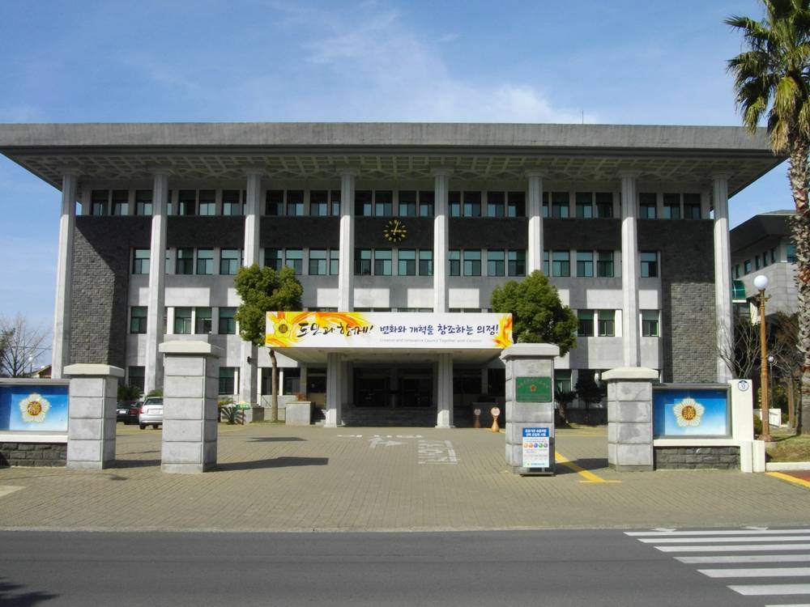
제주도, COP31서 '2035 탄소중립' 제시…"재생에너지 수익을 주민소득·지역복지로"
튀르키예 안탈리아서 4년 연속 제주세션…기후시민회의·V2G·ESS로 시민 에너지시장 참여 넓힌다

대만 재생에너지연맹, 지방선거 후보 에너지 회복력 공약 별점 평가…45명 중 18명만 답해
주민 재생에너지 지원·2035년 로드맵 내놓은 신주시 후보 "특히 돋보여"

영농형 태양광법 12월 17일 시행 앞두고…농식품부 "외지인 '알박기' 막게 한 사람 몫에 상한"
임차농은 사업 기간 계약 자동 갱신·임차료 인상 5% 제한, 표준 임대차계약서 내년 보급

영국 정부 지원 '넷제로 허브' "지역에너지, 주민이 에너지의 주인이 되는 일"
잉글랜드 5개 허브 중 북동부·요크셔 허브 책임자 "수익은 지역에 남고 주민이 한데 모인다"
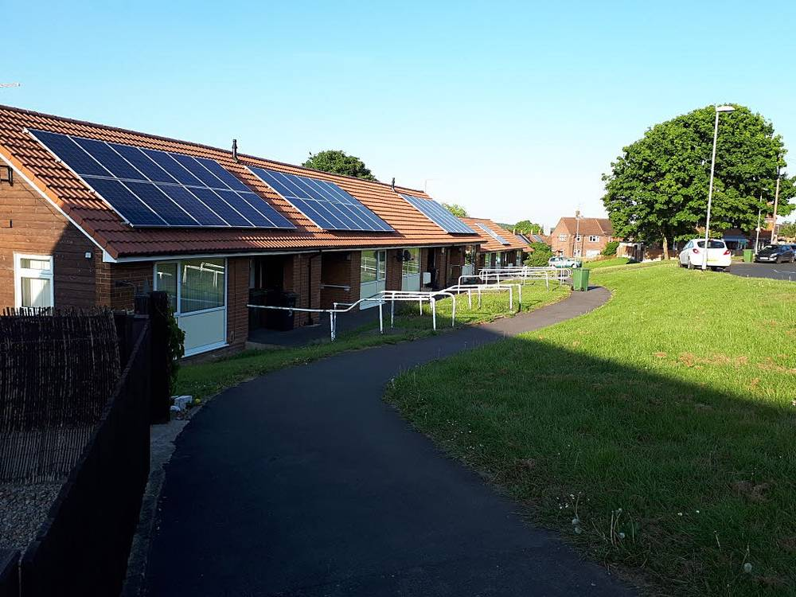
네덜란드 하원 "내년 봄까지 발코니 태양광 연결 기준 만들라"…17개 교섭단체 중 12곳 찬성
가구 35%가 이미 태양광…지붕 없는 집도 전기요금 줄이게, 독일은 지난해 플러그인 설비로 500MW 늘어

송전망 보상 늘렸지만 "한전 주도 입지선정부터 바꿔야"…주민들 "변전소·선로 윤곽 잡는 첫 단계부터 참여"
정부, 지원금 최대 3분의 2 마을 배분·'계통햇빛소득마을' 선도사업 추진…전문가 "에너지계획·국토계획 함께 세워야"
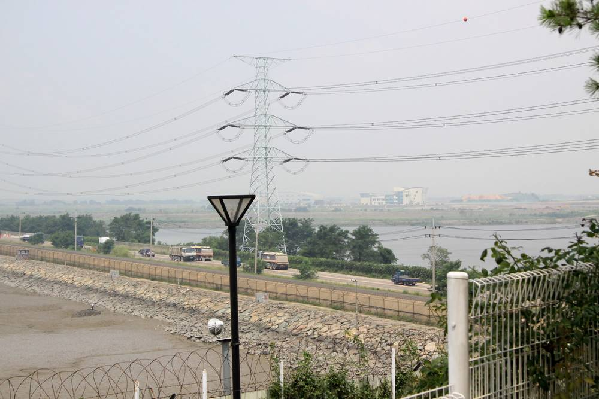
영농형 태양광, 어떤 작물 위에 농가당 얼마까지?…농식품부 고시 11월 말 행정예고
12월 17일 법 시행 앞두고 재배작물·발전용량 상한 조율 중…업계 "200kW 돌려도 농업소득 평균 수준"
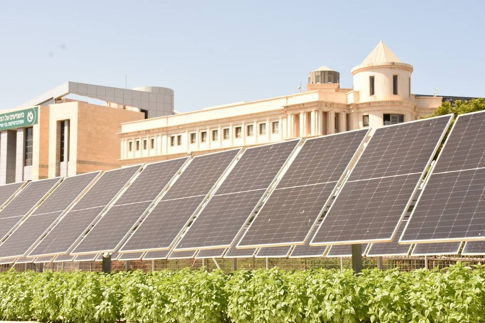
햇빛소득마을 태양광 부지, 재산세 분리과세 대상에 넣는다…행안부 지방세법 시행령 개정안, 2027년 1월 시행
주민 협동조합·사회적협동조합이 행안부 선정 태양광 사업에 쓰는 토지 대상…2030년까지 적용

정부 "조건부 선정 햇빛소득마을도 사업화 지원"…ESS 구축 사업 11월 공고, 1MW 이하 주민참여 태양광 계통 우선접속 12월 말 시행
행안부·기후부·농식품부 설명자료…"523곳 중 즉시 착수 36곳" 지적에 저수지·비축농지·도로 사면 등 유휴 국공유지 제공 계속
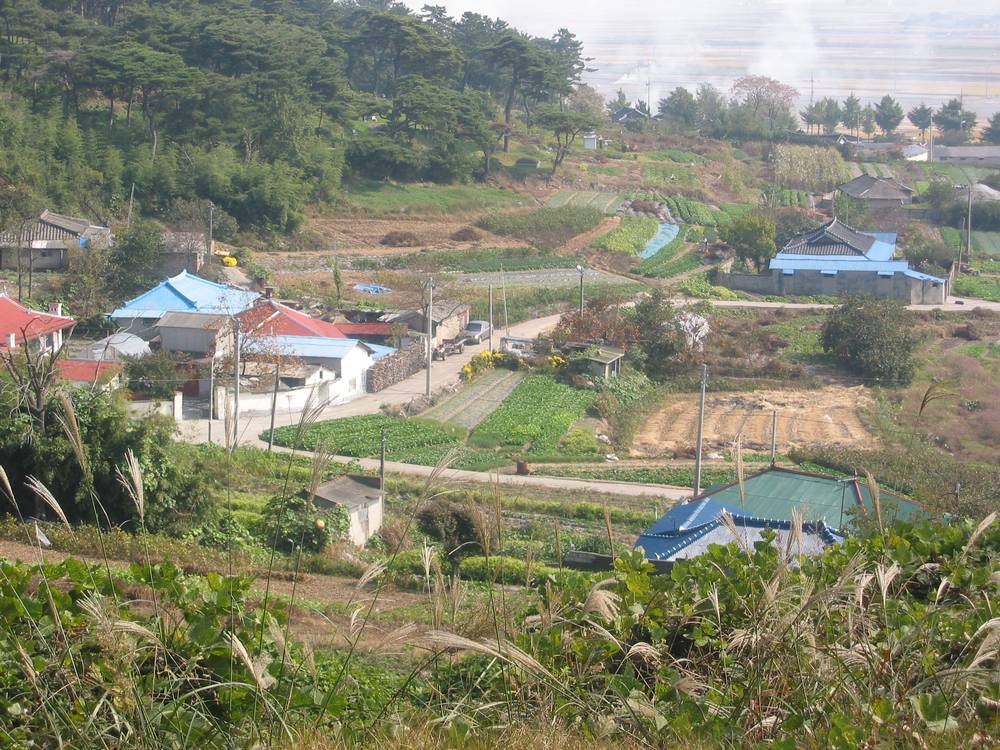
남원시의회 노현이 의원, 공영주차장 태양광 수익 시민에게 돌리는 조례 발의 추진…토론회서 협동조합 모델 논의
10일 '공영주차장 햇빛에너지 주민소득화 방안 토론회'에 시민·전문가 30여 명…전주시 에너지센터·환경운동연합·공동체지원센터 발표
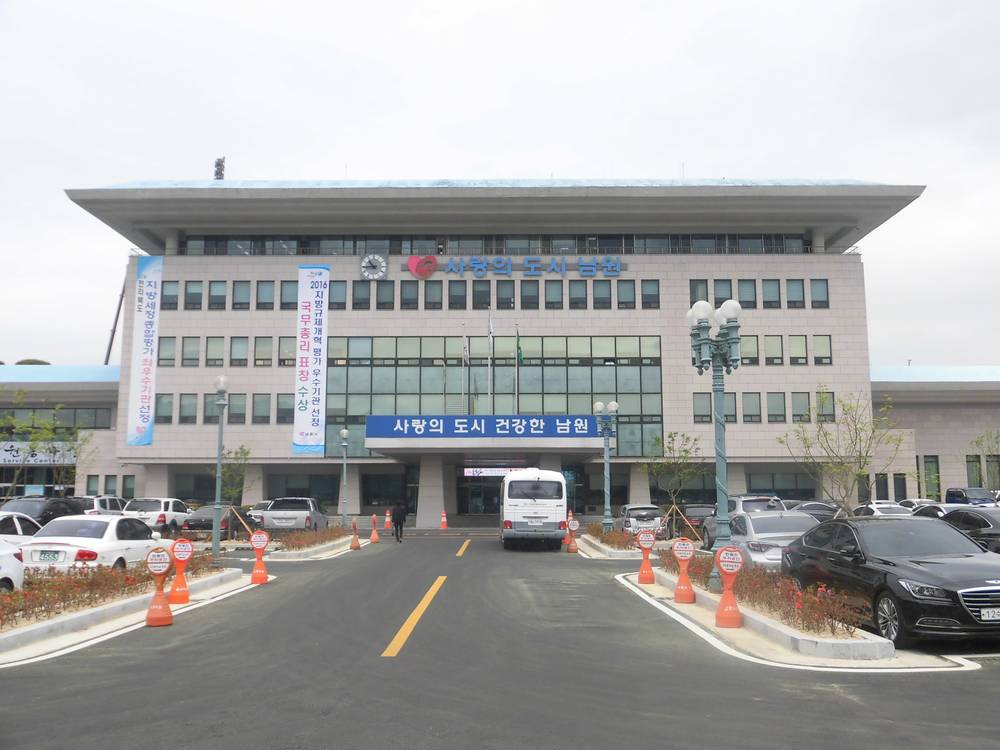
서울에너지공사 지난해 태양광 사업 집행률 77%…최두호 시의원 "노후 설비 교체·도심 태양광 확대 연차별 실행계획 내라"
공사 "운영 끝난 발전 부지 넘겨받아 고효율로 바꾸고 공영주차장 태양광 단계적 확대"…전기차 충전기 위탁업체 임금 체불로 관리 하루 멈춘 일도 질타
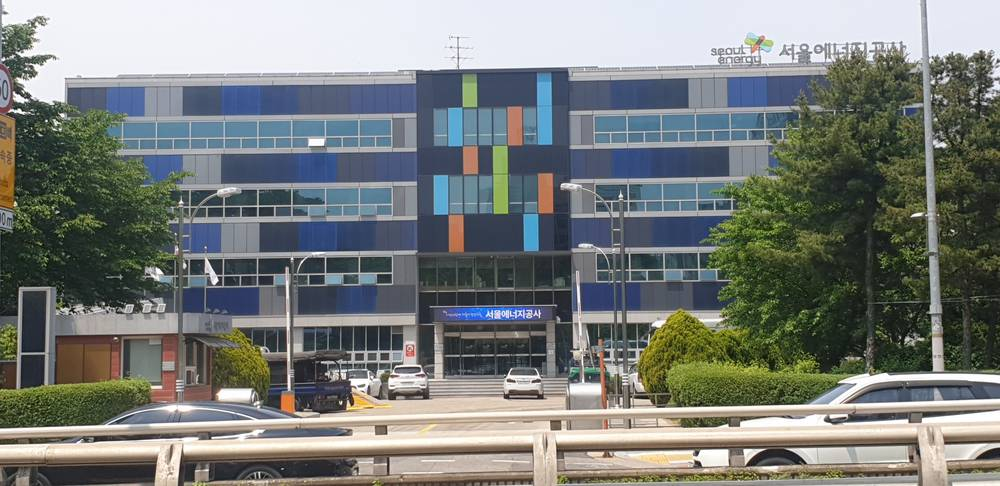
SH 임대단지 지붕 태양광, 낮에 남는 전기는 관리비로 돌아오나…오중석 서울시의원 "요금상계 현황 공개하고 12월 말까지 전환 계획 내라"
LH가 세종 행복주택 238가구에서 공동주택 첫 요금상계 시작하자 같은 ZEB 3등급 고덕 온빛채 697가구 사례 따져…상계 안 되는 단지는 이유 목록부터
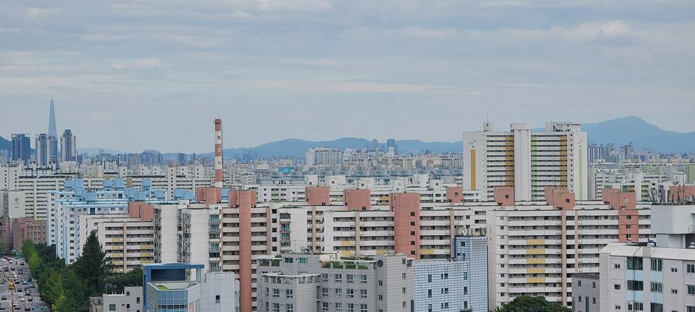
전남광주 햇빛소득마을 126곳 ESS 조건에 주민 초기 부담 커…이재창 시의원 "폐도·제방·철도 주변까지 부지 넓히고 주민 부담 낮춰야"
통합특별시의회 행정사무감사서 도로변 태양광 등 새 부지 발굴 주문…에너지산업본부 "가상발전소 사업자 지정해 마을과 협의"
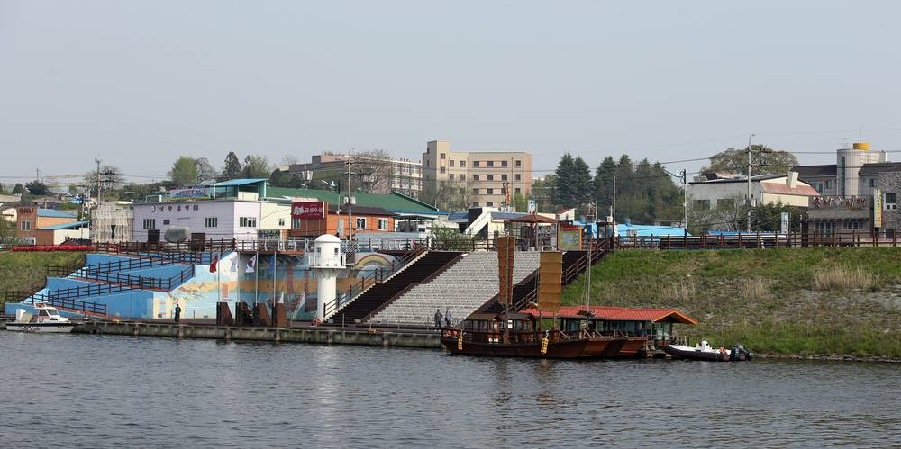
다음 달 17일 시행 영농형 태양광법, 한 사람 발전 용량에 상한…임차농엔 계약 자동 갱신·임차료 인상 5% 제한
농식품부, 외지인 계통 '알박기' 막으려 상한 두고 시행령·고시 마련 중…표준 임대차계약서 내년 보급, 금융·전력 단가 지원은 협의 과제로 남아
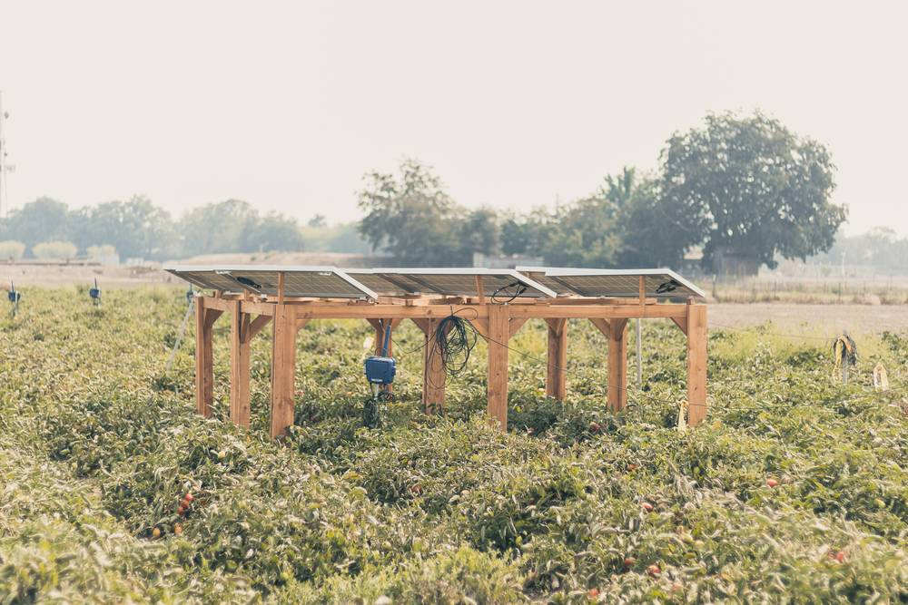
재생에너지 100GW 목표 5대 과제 중 '초록불' 하나도 없어…기후솔루션 "화석연료 특권·망 중립성은 빨간불"
12일 '100GW 신호등' 공개, 보급은 47.2GW로 절반 못 미쳐…허가 해상풍력 36GW 중 지어진 건 1%, 영농형 태양광 지구 지정도 아직 없어
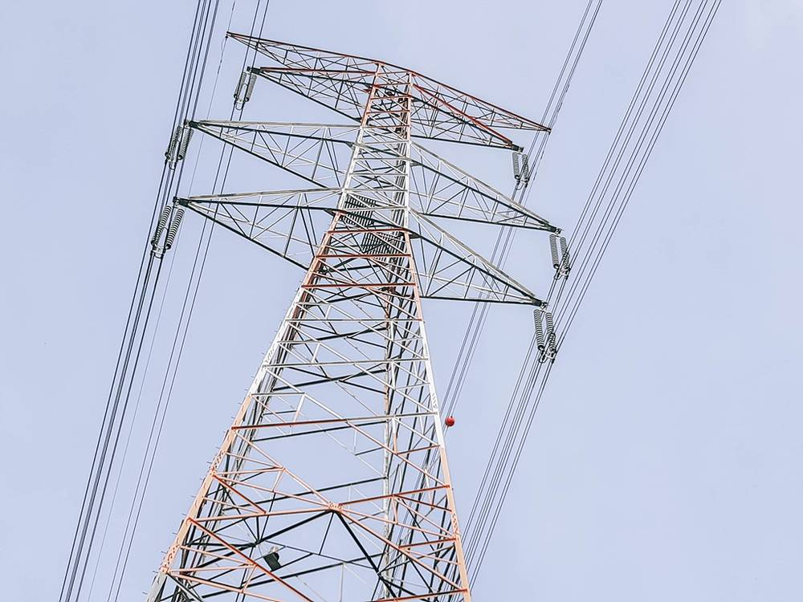
햇빛소득마을 523곳 뽑았지만 바로 시작할 수 있는 곳은 36곳…예정처 "새 마을 늘리기보다 선정 마을 사업화부터"
1차 선정 87곳 중 즉시 추진 13곳, 6개월 보완 조건 채운 곳은 4곳뿐…행안부 "계통만 풀리면 130~140곳 바로 착수"
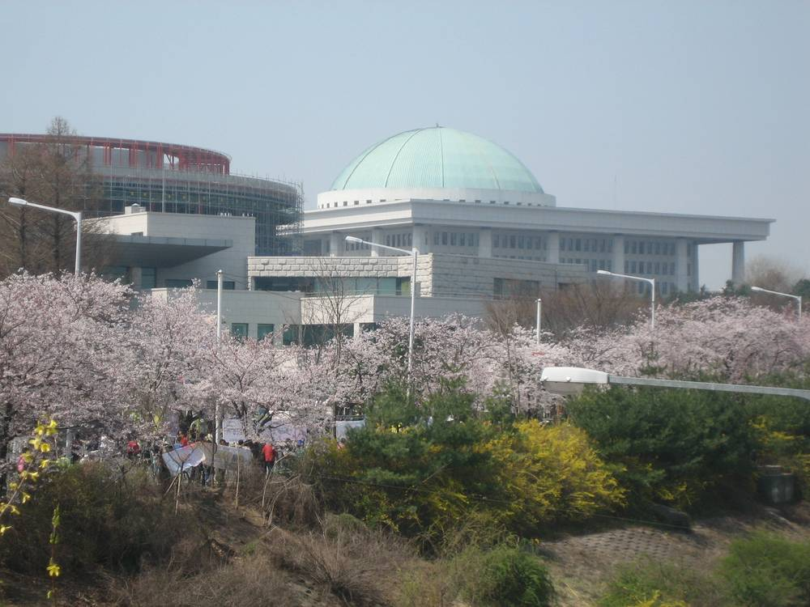
"2030년까지 지붕 태양광 3억 가구"…방글라데시·케냐·나이지리아 등 '세계 지붕 태양광 선언' 동참
호주가 먼저 지지한 선언에 인니 국영전력 PLN·21개국 의원 34명도…인허가 간소화·가계 금융 등 촉구
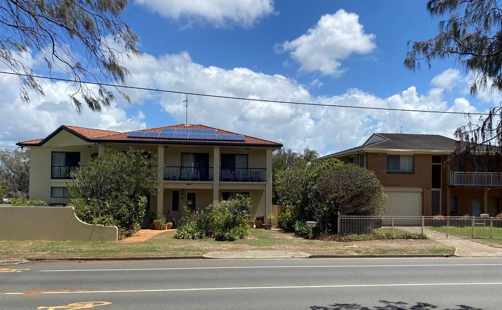
반도체 용수 위해 동복댐 키우면 280가구 수몰…기후부 장관 "직접 연금은 어렵다, 주민 태양광 협동조합 '햇빛연금'은 설계 가능"
이주 예정 주민 대책위, 월 150만~200만 원 상생연금 등 6가지 요구…용수 단가 인상엔 "전국 물값 오른다"며 선 그어
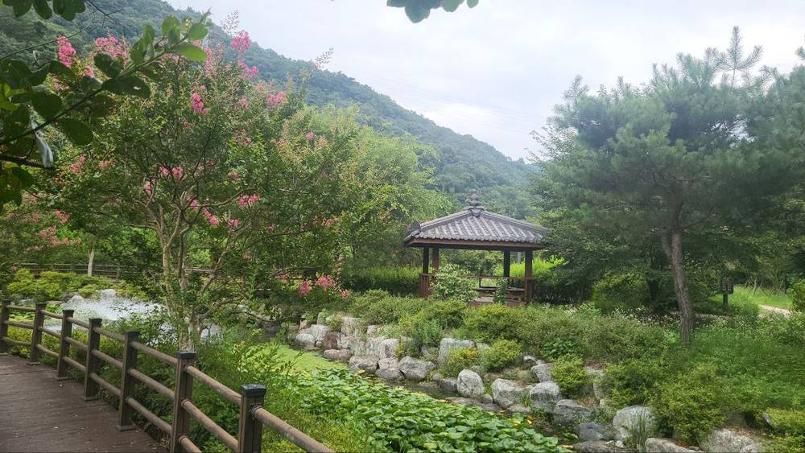
18억 원 들인 영광 월평마을 태양광 1MW, 1년 넘게 전력망 못 붙어 수익 0원…통합특별시의회 행감서 질타
햇빛소득마을 126곳 선정됐지만 바로 접속 가능한 곳 5곳뿐…'자부담 15%에 배당 쏠림 우려, 소규모 실경작 농가 우선해야'
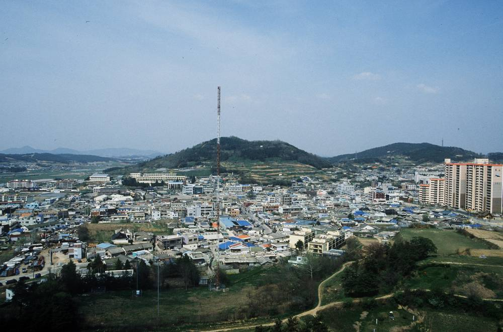
일본 규슈, 영농형 태양광 5년 새 4.4배…전국 설치 농지 24%는 수확 2할 넘게 줄어 정부가 허가 조건 강화
후쿠오카 야메 차밭은 차광 시설에 패널 얹어 월 7만~8만 엔…농수산성 '차광률 30% 미만·연 판매 50만 엔 이상' 새 조건에 업계 "일률 규제 지나쳐"

햇빛소득마을 522곳 중 490곳 '조건부'…국회 예결위서 "착공한 곳 거의 없고 브로커가 주민 밀어낼 수 있다"
2027년 예산안 심사 전체회의, 내년 2,200곳 확대 계획에 예산은 이차보전 285억 원 중심…영농형 태양광 150억 원도 연구·제도 기반에 쏠렸다는 지적

전력망 사업 104건 중 기한 내 준공 19건뿐…국회 토론회 "초기 주민 참여·공정한 이익공유 제도화해야"
이철규 의원 "국가 편익이 특정 지역 일방 부담 돼선 안 돼"…은재호 교수 '적시성·절차적 정당성·공간적 정의' 함께 봐야, 한전은 독일 주민참여 제도와 비교
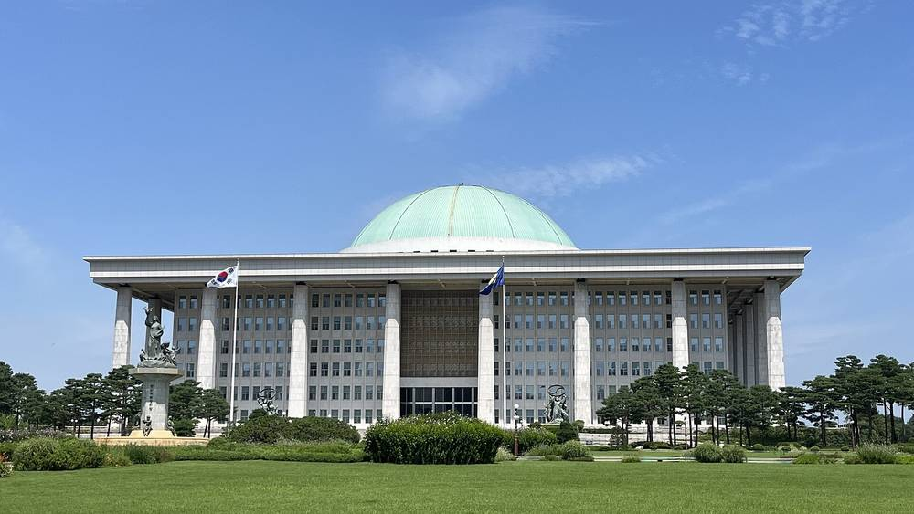
영농형 태양광법 시행 한 달 앞인데…영양변전소 준공 2년 6개월 늦어져 농민들 "전기 보낼 길 없다"
154kV 영양변전소 2027년 6월에서 2029년 12월 말(전기 공급 기준)로 미뤄져…약 29㎞ 송전선로·송전탑 약 76기는 아직 착공 못 해

문금주 의원, 농협 사업에 영농형 태양광 등 재생에너지 넣는 농협법 개정안 발의…12월 영농형태양광법 시행 앞둬
임업직불금 요건 완화, 영농조합법인 준조합원 배당 분리과세 2031년까지 연장 등 3개 법안 함께 내
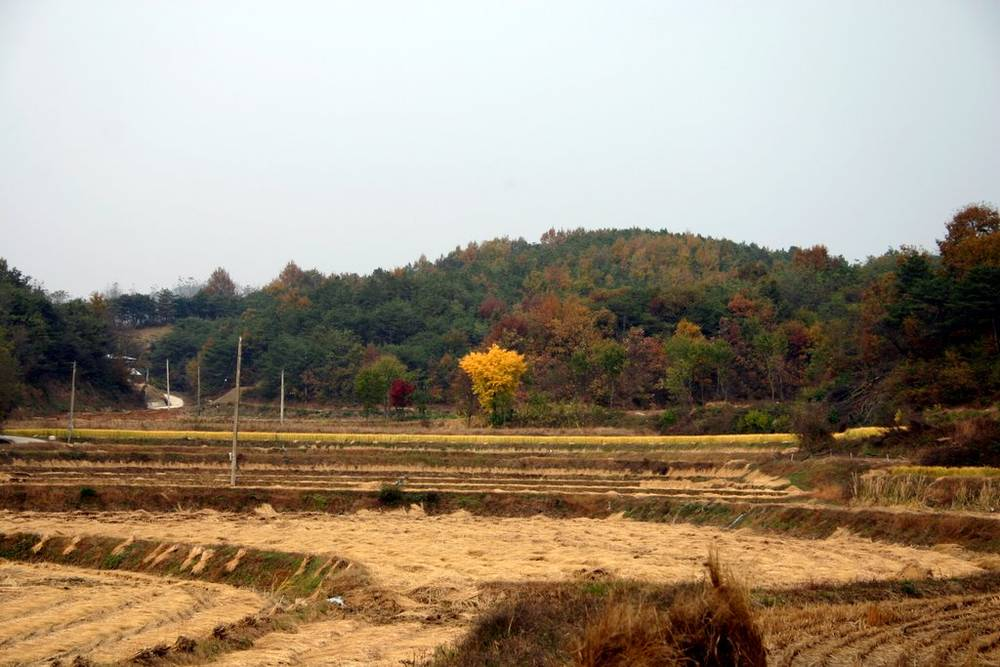
대전시, 17일 재생에너지 정책 포럼…'태양광 가치를 지역과 나누는' 시민 참여형 모델 찾는다
세계태양광총회 특별세션으로 에너지자립마을·산단 지붕 태양광 사례 발표…에너지연·한전KDN과 분산에너지 협약, 특화지역 지정 기반으로
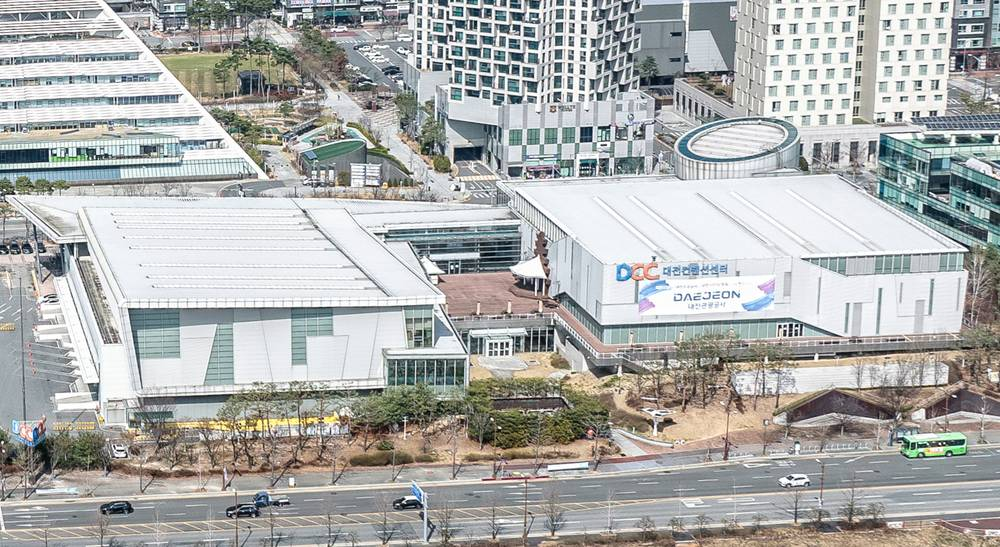
부안군 공론화위원회 출범…해상풍력 송전선로 갈등, 주민대표 5명 포함 13명이 정책 권고안 마련
서남권 해상풍력 공동접속설비 입지·주민피해 논의…지난 4월 군과 대책위가 공론화 합의, 조례·위원 구성 거쳐 첫 회의
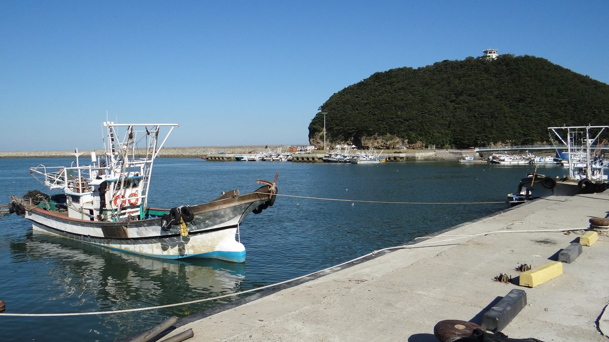
전남광주통합특별시·기본소득당, 재생에너지 주민 참여·이익 공유 협약 이행 점검…농어촌 기본소득도 함께 논의
4월 11일 맺은 정책협약 세 갈래 진행 상황 공유, 기본소득당은 상시 소통 채널 제안…민형배 시장, 재생에너지 등 지역 자원으로 주민 소득사업 발굴하겠다
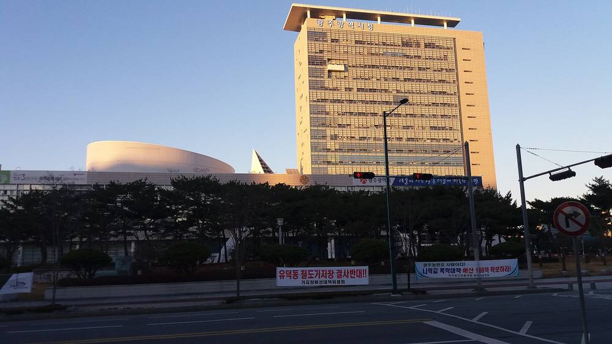
호주, 세입자도 '꽂아 쓰는 태양광' 길 열리나…에너지 장관들 플러그인 태양광·배터리 안전 기준 마련 착수
가구 열에 셋이 세입자, 이사 갈 때 들고 가는 800W 안팎 소형 설비…서호주 12월 9일까지 의견 수렴, 시민단체 "2027년 7월 1일까지 전국 허용"
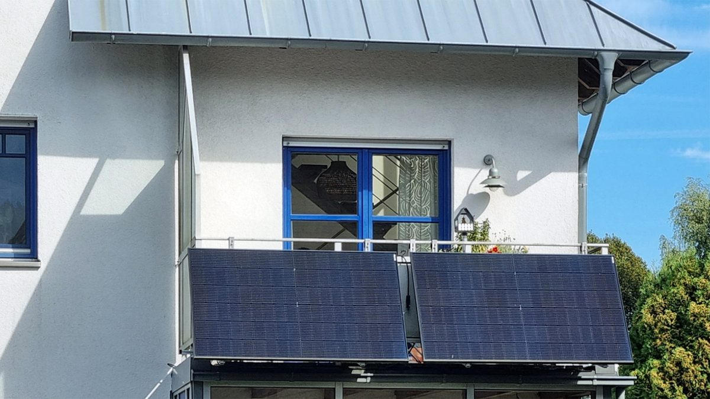
춘천시의회 의원연구단체, '주민소득 기반 햇빛도시 조합' 지원 연구 중간보고…발전 수익을 주민 소득으로 잇는 제도 설계
'ESG 실천 연구회' 5일 시의회 소회의실서 용역 중간보고회, 윤민섭 회장 등 의원 5명 참석…조합 지원책과 제도 기반 마련이 목표
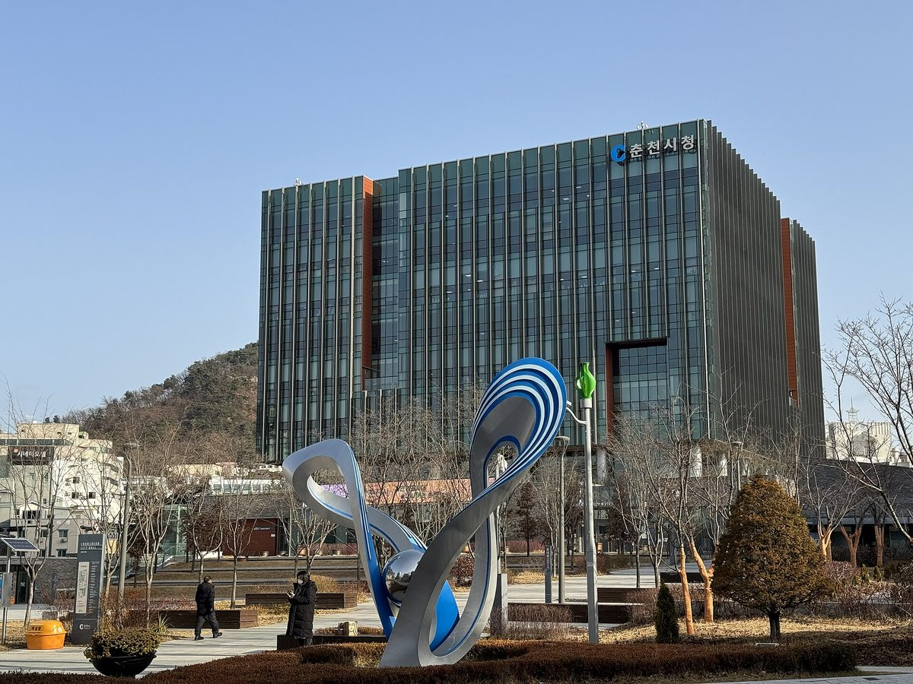
독일 시민에너지협동조합 "EEG 개정 초안은 저장장치 막는 정책"…부제크 존넨란트, 태양광·풍력 옆 배터리 계획 무산 위기
2027년부터 새 지붕 태양광은 설비 용량의 50%까지만 전력망에 보내는 안…고정가격 넘는 수익은 거둬 가 저장 투자 못 건져
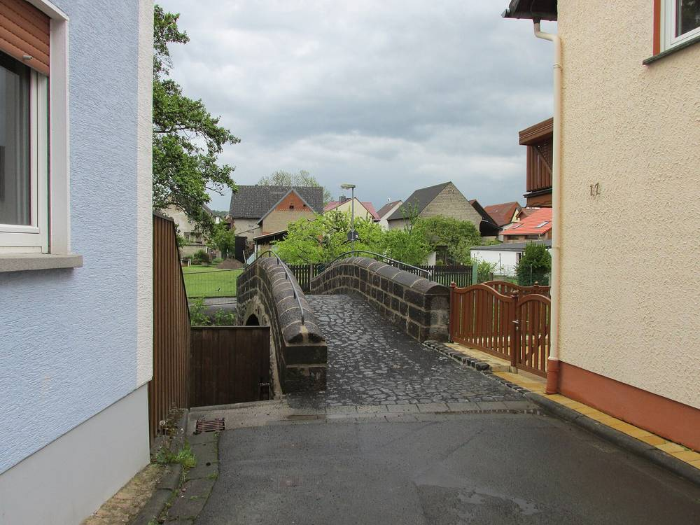
익산시, 햇빛소득마을 사업구역 '리'에서 '면' 단위로 넓혀 달라 정부에 건의
최정호 시장 "발전소 옆 마을도 함께 혜택 누려야"…하천 사면·폐교·국공유지까지 부지 찾기, 관리기관 협의는 과제

송전선로 주민 이익공유 논의 본격화…정부 "신규 철탑 최대 2,214기 줄일 수 있다"
2038년까지 72조8,000억 원 투입 계획에 주민은 "선택권 없다" 반발, 정부는 송전탑 주변 마을 태양광 수익 배분 추진
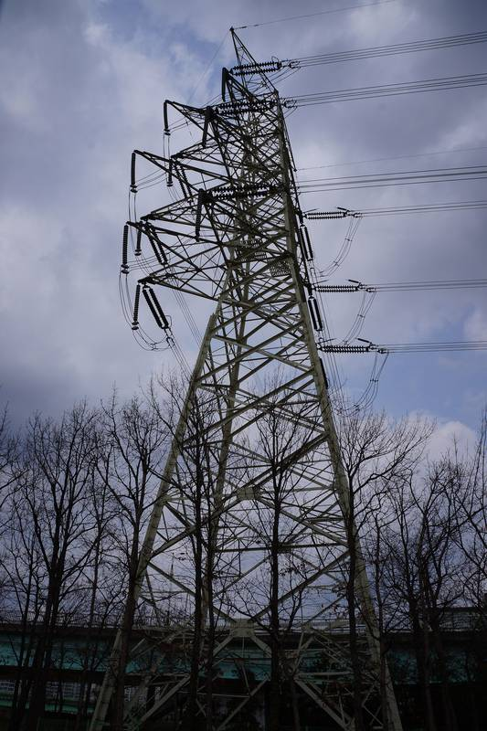
농어촌기본소득 재원 국비 50%로 늘려도 군 부담 남아…재생에너지 공유수익 재원 구상엔 '순수익·배분 기준'이 숙제
최초 7개 군 총사업비 8,867억5,000만 원 중 군비 47%, 신안·영양은 약 57%…신규 약 18개 군 공모에 34개 군 신청
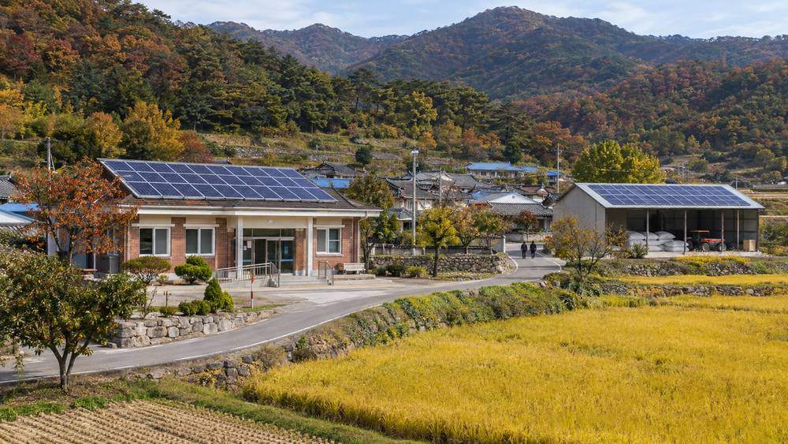
지역별 도매가격제 막겠다…태양광·풍력·시민발전협동조합 등 8개 단체 공동대책위 꾸려 정부 설명 반박
정부 "현물시장 태양광 99.5%가 1MW 이하, 월평균 정산 가능"…대책위 "개소수 비중일 뿐 매출 보호 아냐", 25일 세종·27일 서울서 집회 예정
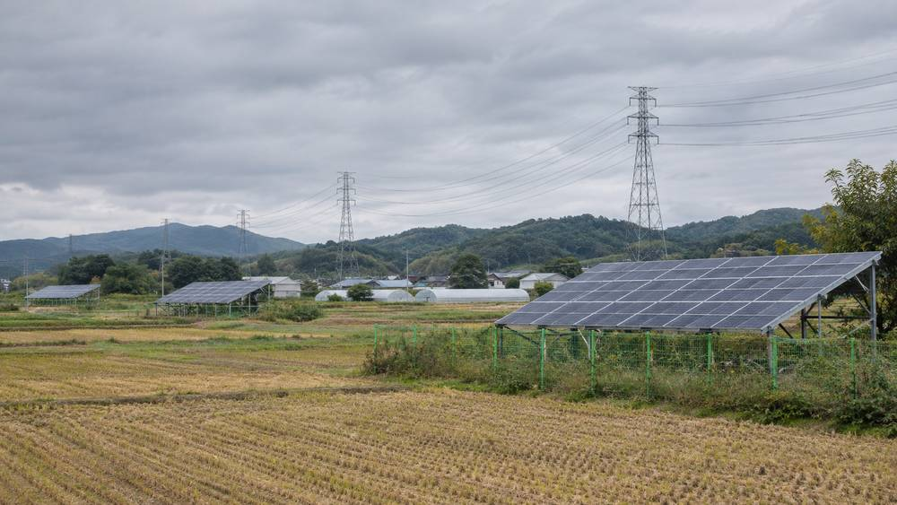
시민·사회연대경제 조직이 함께 출자하는 '가치금융신협' 설립 추진…11일 국회서 포럼
사회주택·의료돌봄·재생에너지에 자금 공급 구상…국회의원 5명 공동 주최, 행안부·신협중앙회 후원

농업법인도 영농형 태양광 발전사업 길 열린다…농식품부 규제개선 50개 과제 확정
2만㎡ 미만 영농형은 소규모 환경영향평가 면제 추진…12월 17일 법 시행 맞춰 내년 6월까지 시행령 개정

군포시 방음터널 태양광, 솔라리그 장관상…외부재원 86억 원으로 사업비 58% 충당
대야·삼성지하차도 합계 1,329kW, 대야지하차도 시비 22억 원 줄고 상부 임대로 연 2,500만 원 세입
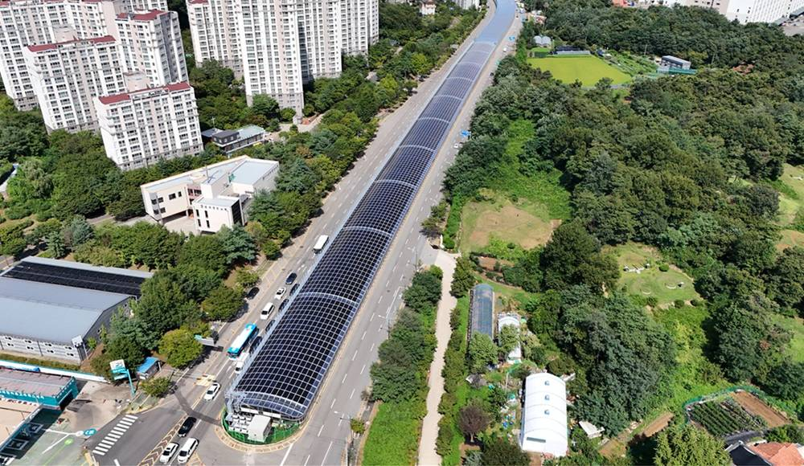
농식품부, 청주서 영농형태양광 정책 설명회…농지 80% 이상 농사 의무화·거주 요건 제시
농업인·관계기관·전문가 220여 명 참석, 송미령 장관 "일반 태양광은 농지 잃게 해"
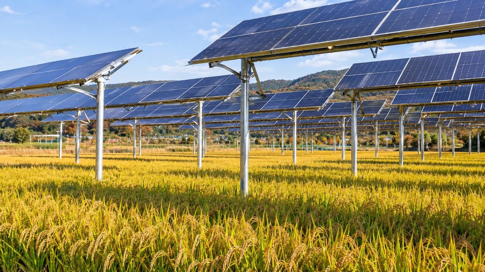
의성군, 재생에너지 개발이익 군민 공유 조례 제정…최유철 군수 "바람과 햇빛은 주인이 없다"
협동조합·펀드·채권으로 발전사업에 참여해 배당받고 배당금 일부는 의성사랑상품권으로…군수 "이익은 외부로 빠지고 지역엔 소음·경관 훼손만 남았다"
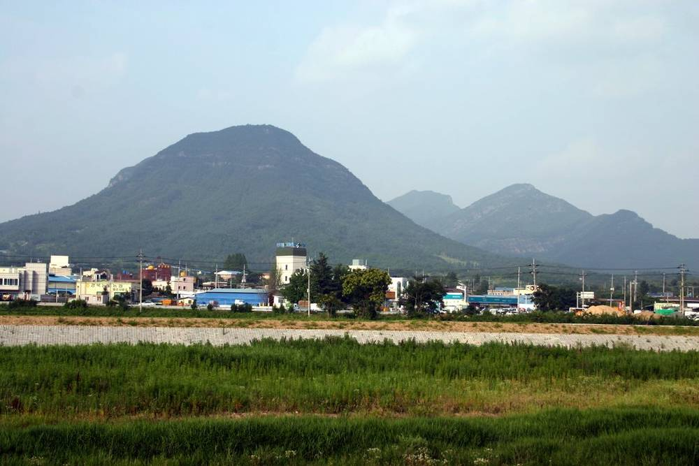
양산 원동면 대리·선리·장선마을, 낙동강수계 기금으로 햇빛소득마을 추진…행안부 공모 신청 남아
낙동강수계관리위 '2027년 재생에너지 특별지원사업' 대상에 포함…설비 대리 360kW·선리 999.45kW·장선 998.46kW, 주민 동의율 90%·72.9%·71%, 내년 지원 예정액 20억2,700만 원
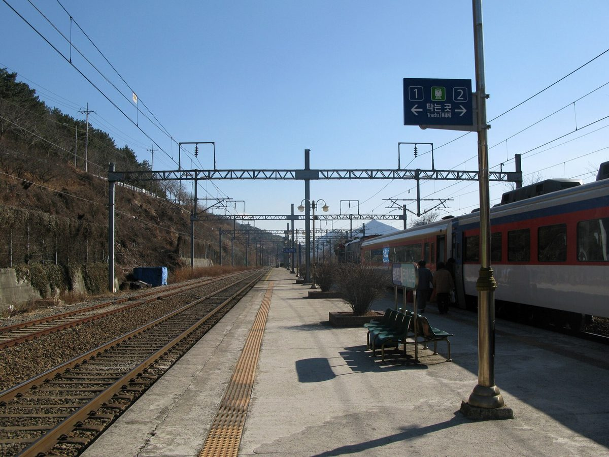
여수 최동익 의원 "햇빛소득마을 육성기금 2조 원 조성하자"…시의회 5분 발언서 제안
4년간 매년 5,000억 원, 주민 초기 자기자본·장기저리 융자에 쓰고 상환금은 다른 마을에 재대출

이탈리아 하원, 재생에너지공동체 인센티브 기한 2030년까지 연장 요구 의안 채택…정부 검토 약속
인센티브 대상 5GW 가운데 가동은 약 523MW…GSE가 가진 자료 다시 요구하지 말라는 서류 간소화도 담아, 구속력 없는 의안이라 실제 연장은 정부 후속 조치에 달려
미국 볼티모어 시민단체, 민영 BGE 대신 시영 전력 운동…시의원 15명 중 4명·새 당선자 3명 'BGE 후원금 거부' 서약
데이터센터 반발·요금 상승 속 2025년 출범한 '볼티모어 공영전력'…BGE는 4년간 77억 달러 투자·연 1억5,610만 달러 요금 인상 요청, 지난 25년 공영화 시도 64건 중 7건만 성공
농업 전문지 칼럼 "햇빛소득마을, 검증 안 된 정책"…형식적 협동조합·외부업체 의존 우려
농업인신문 유영선 기자, 시정연설의 재생에너지 2조8,000억 원 투자 계획에 "전력망이 먼저"·"농업예산 아닌 행정안전부 몫" 주장
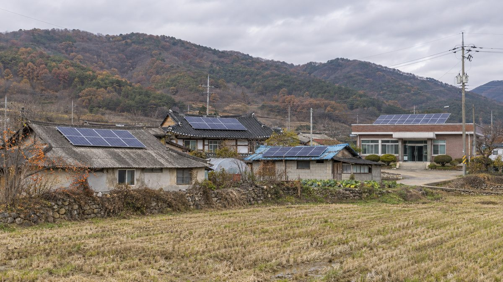
루마니아 공동주택 태양광 법안 3건 의회 절차에…시민단체 안, 아파트 공용 지붕 전기 판매 수익 최대 85% 관리비서 덜어 줘
프로슈머·에너지공동체 협회(APCE)가 2건 발의…발코니 태양광은 패널 4장·800VA 이하로 신고만, 공용 지붕은 소유자 3분의 2 동의, 별도 법안은 비참여 세대 부담 금지·배당 금지
전남광주시의회, 대통령직속 기본사회위와 간담회…신안 햇빛연금 전역 확대·공유부 기금 조성 논의
햇빛·바람 활용한 에너지 기본소득, AI 시대 공유부 배당·국부펀드도 거론…송형곤 의장은 조례 제정·기금 조성 등 자치입법 추진 밝혀, 구체안은 아직

국회서 에너지 기본권 토론회…요금 지원 넘어 최소 보장기준·참여권·편익공유권 법제화 제안
서왕진 의원 주최, 고재경 환경정의 공동대표는 에너지전환 참여권·정보권·편익공유권, 김재경 에너지경제연구원 선임연구위원은 기본에너지·공급중단 방지의 에너지법 명시 제안

전남광주시, 공공이 입지 고르는 영농형 태양광 계획입지 추진…연내 시군과 재생에너지 예비지구 협약
12월 17일 영농형태양광사업법 시행 앞두고 관계기관 업무공유회…지역 전력을 지역기업 RE100에 쓰는 전력거래 방안도 논의, 대상지·용량·이익 공유 방식은 미정
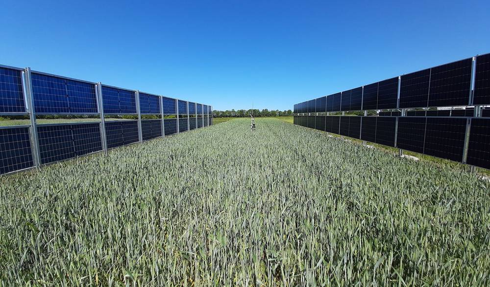
"석탄은 공공, 재생에너지는 민간 독식은 또 다른 불평등"…국회서 발전공기업 통합 토론회
신정훈·최기상·안호영·정혜경 의원과 공공재생에너지연대 공동 주최…통합 공기업이 전환 주체 되도록 경영평가 손질·민자 가스발전 제한 요구
호주 캔버라 최대 배터리 250MW 상업 운전…개발사, 15년간 수익 50%를 준주 정부와 나누고 지역 단체 9곳에 50만 호주달러
준주 정부가 건설을 받쳐 주고 운영 수익 절반을 돌려받아 탈탄소 재원으로…최대 수요 때 캔버라 3분의 1에 2시간 전기, 2045년 탄소중립 겨냥
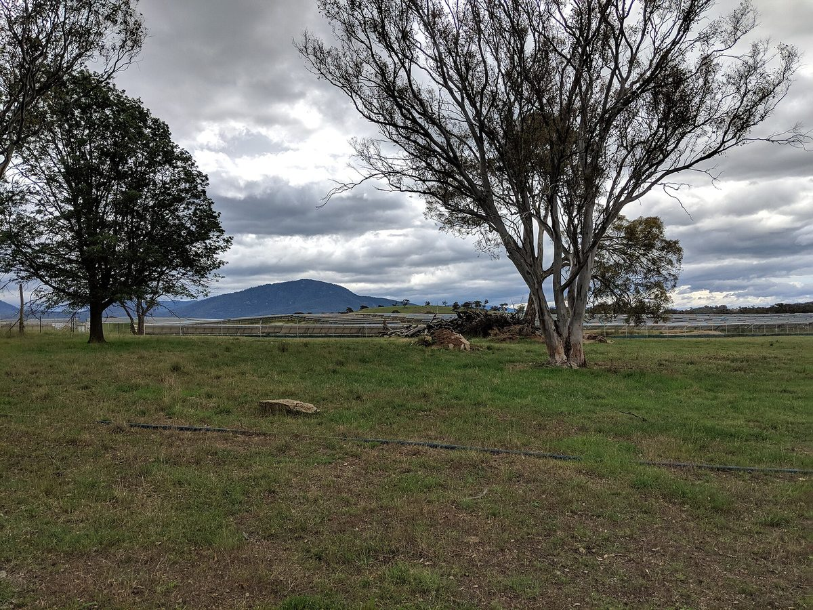
아일랜드 오펄리주 파이브앨리 에너지공동체, 정부 에너지상 수상…두 단계에 걸쳐 128가구가 태양광 패널 1,650장 공동 설치
'솔라 미할' 사업으로 가구마다 재생에너지 전기 생산·에너지 비용 절감…국영 보르드나모나의 데린러프 풍력단지 지역이익기금이 SEAI·주민과 함께 지원, 기후·에너지·환경부 장관이 시상
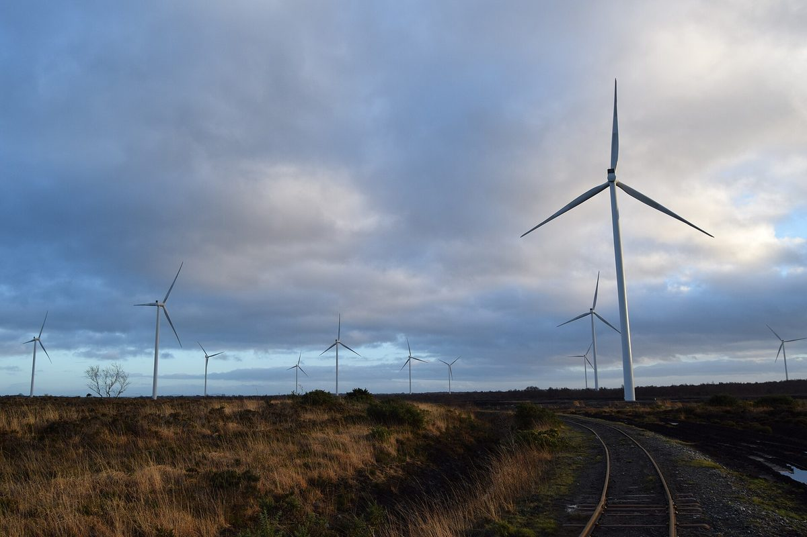
영국 정부, '에너지 독립 법안' 하원 제출…새 재생에너지 사업에 지역 지분 최대 20% 제안 의무화할 길 열어
5MW 넘는 새 육상풍력·지상 태양광은 지역사회 이익 협약 맺어야, 정부 잠정안은 풍력 MW당 연 5,000파운드·태양광 700파운드…지분 제안 대상은 1MW 이상으로 낮출 수 있게, 비율·금액은 하위 법령에서 확정
"고속도로 방음터널에 시민햇빛발전을"…박필순 전남광주시의원, 행감서 도시형 기본사회 모델로 제안
호남고속도로 확장공사 방음터널에 태양광, 시민 참여·수익 공유 방식 검토 주문…도시 안 농촌 읍·면·동으로 농어촌기본소득 확대도 요구
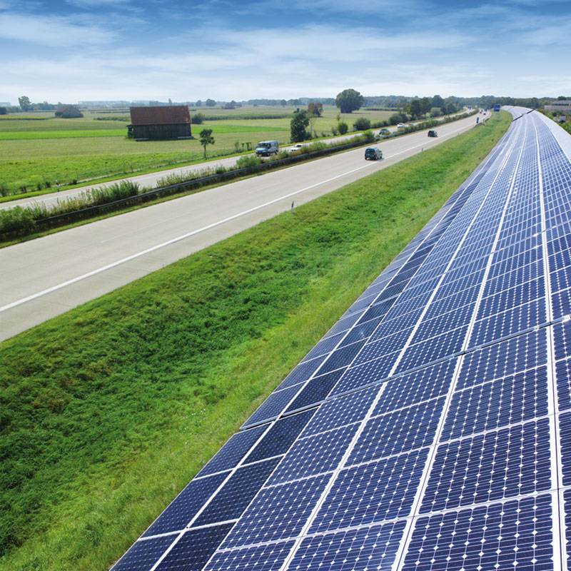
해상풍력 집적화단지 8곳 모두 군 협의 못 끝내…기후부 "연말까지 조건 못 채우면 지정 해제 검토"
계획설비 1만3,037MW·계획사업비 85조4,000억 원 규모…해군은 8곳 모두에 작전상 검토 의견, 신안 '전남10' 사업엔 해군 통항로·공군 레이더 차폐 문제 제기
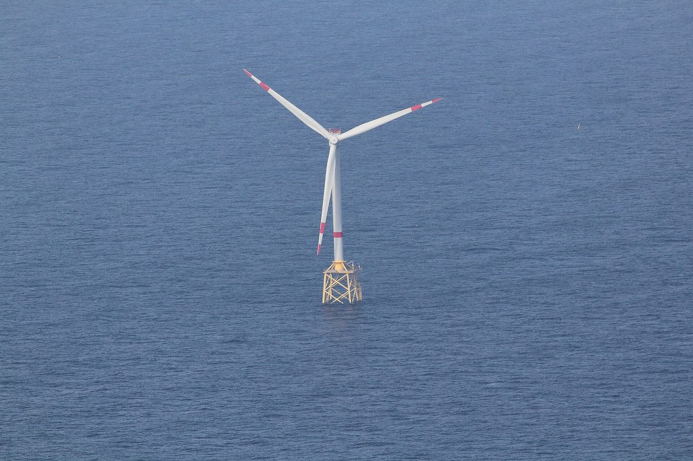
"집이 4채면 보호 못 받나"…농민·주민단체, 재생에너지 이격거리 '5호 미만 제외' 시행령에 헌법소원
강릉·봉화 주민 6명 청구인으로 나서…조례 이격거리 상한(태양광 200m·풍력 1,500m)에 더해 이격거리 안 주택이 5호 미만이면 적용을 빼는 조항 겨냥, "평등권·환경권·건강권 침해" 주장
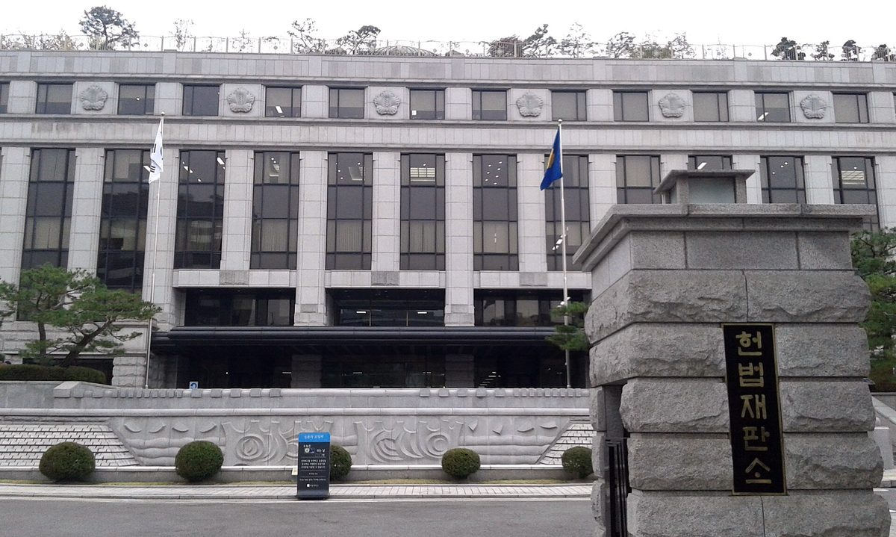
서울 전력자립률 1년 새 11.6%에서 6.8%로…노연수 시의원, 통계에서 빠진 베란다 태양광 40MW 통합 관리 요구
서울시의회 기후환경본부 행정사무감사…서울시는 소규모 베란다 태양광 관리 어렵지만 안내 중, 보급 확대엔 국내 산업 지원 함께 가야
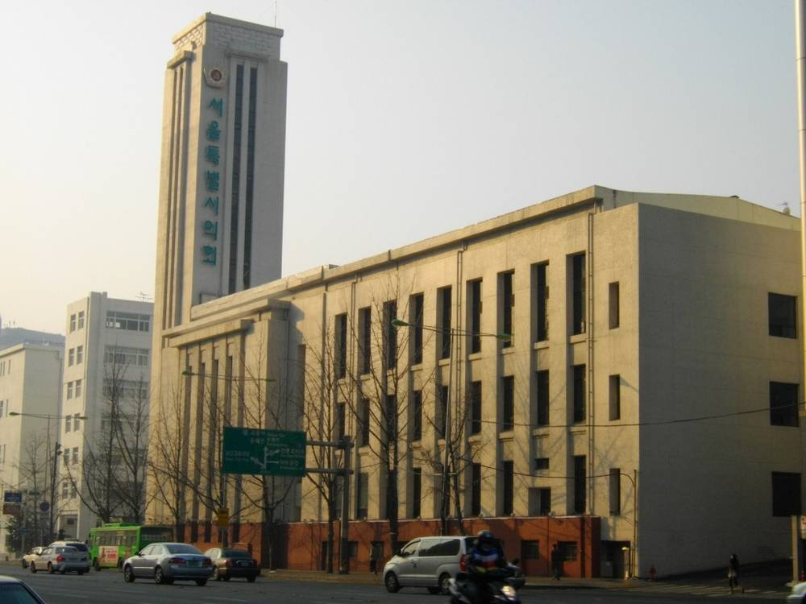
조국혁신당, 초광역특구법안 당론 발의…재생에너지 사업은 총사업비 4% 이상 주민 투자 기회 먼저
주민·노동자 참여 상생협의회, 송·배전 공동접속설비 국가 지원 담고 주 52시간제 예외·지주회사 규제 완화는 빼…규제특례엔 5년 유효기간, 발의 단계
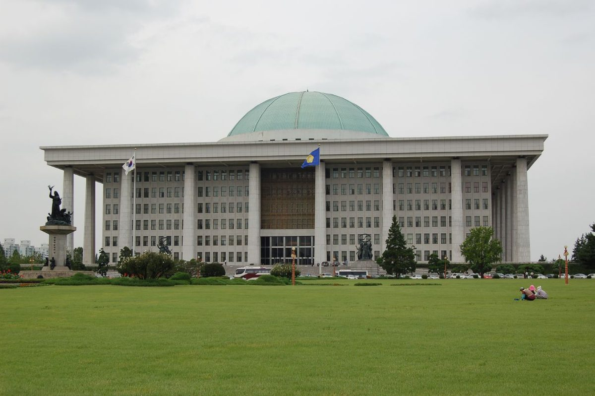
기후부, 내년 햇빛소득마을 교육·홍보 전문인력 양성에 5억5,000만 원 편성…국민의힘 이종배 의원 단기 알바 예산 비판
26개 마을 각 50명에게 1인당 35만 원씩 교육 수당 4억5,500만 원, 커리큘럼·교재 개발 9,500만 원…26개 마을의 성격과 기후부 입장은 확인되지 않아
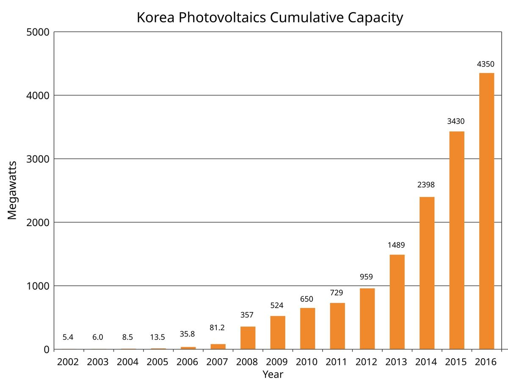
뉴질랜드 애슈버턴 지역의회, 오르는 전기요금에 태양광 검토…연 40만 달러 절감에 500만 달러 넘는 선투자 놓고 의원 이견
연 전기료 약 177만 달러, 다음 주 장기계획 예산 심의서 부서별 태양광 안 검토…"그 돈 도로에 쓰는 게 낫나" 대 "건물 지붕에 조금씩"
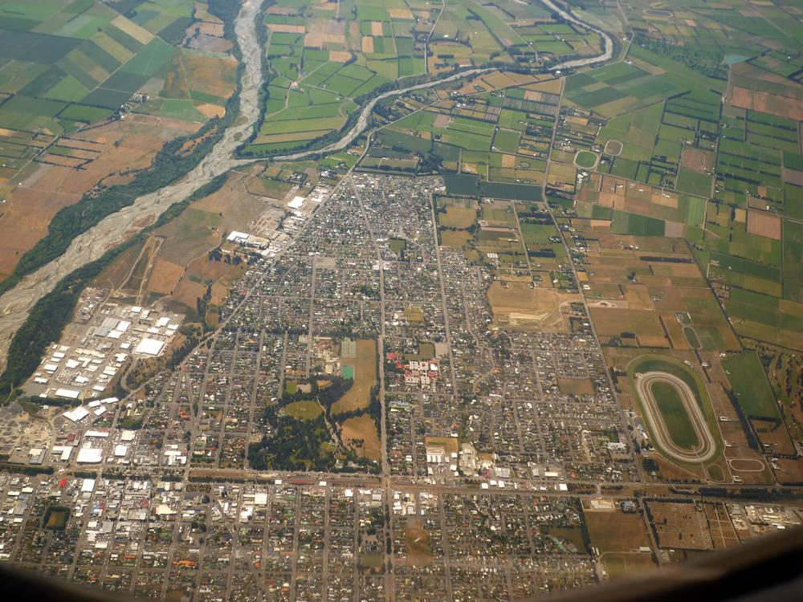
국민의힘, 내년 예산 삭감 대상에 '햇빛소득마을 등 재생에너지'·협동조합·사회연대경제 사업 꼽아
예결위원들 "재생에너지 1조8,210억 원은 증액중독, 협동조합 819억 원·사회연대경제 633억 원은 우리끼리 예산" 주장…햇빛소득마을만의 삭감액은 안 밝혀…정부는 같은 날 예산안 제안설명에서 햇빛소득마을 확산 등 재생에너지 보급 예산 두 배 증액을 설명했으나, 지목에 직접 답한 반론은 아직
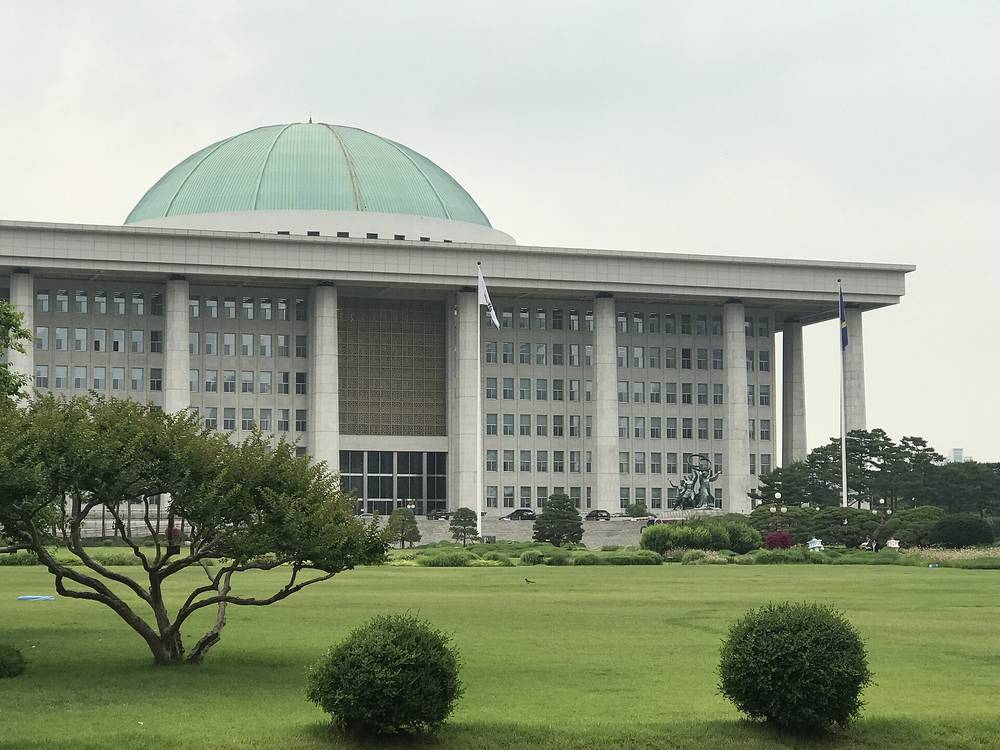
내년 상수원 햇빛소득마을 93곳에 651억 원…예정처 "사전조사 마을 중 전력망 여유는 40.7%"
금강·영산강·섬진강에 420억 원(64.5%) 배정됐지만 두 수계 조사 마을 23곳 중 여유는 2곳…행안부 사업과 8곳 겹쳐, 기후부 "ESS 지원과 연계"
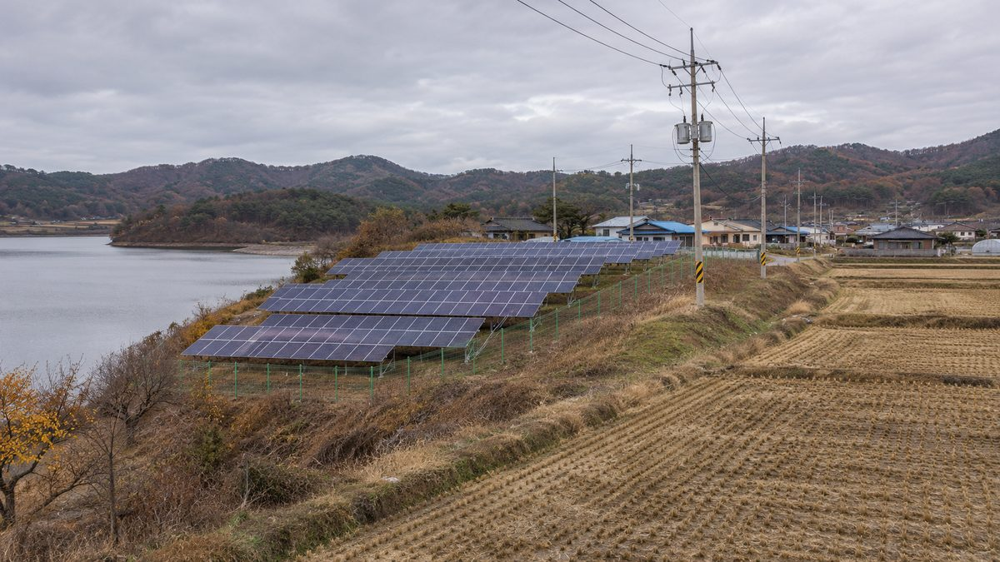
솔라리그 장관표창에 인제군·고령군·달구벌시민햇빛발전협동조합…민간부문 입상 4곳 모두 발전협동조합
제8회 대한민국 솔라리그 14곳 수상 확정, 5일 정부세종컨벤션센터서 시상…고령군은 햇빛소득마을 수익을 주민복지기금에, 군포시는 주민·시민발전협동조합과 방음터널 태양광 기획
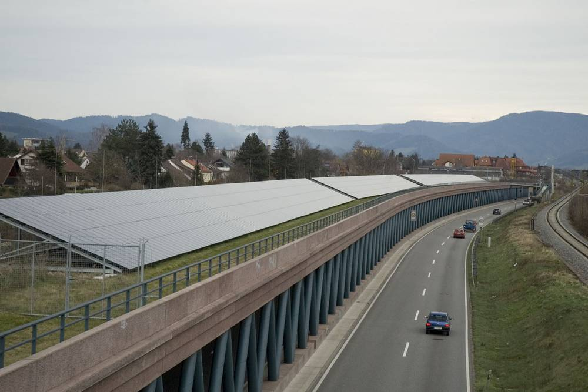
콜롬비아 전 정부 '주민 에너지기업' 사업, 278억1,500만 페소 협약에도 발전소 0곳…건설 재원 끝내 못 붙여
기금 Fenoge·국제이주기구 협약으로 타당성 조사 50건·740명 교육·주민 회사 설립까지만…전 장관 "근본 약속 아직 못 지켜" 인정하면서 연구 품질 문제와 실제 지급액은 총액보다 적다고 해명
스위스 그로스회흐슈테텐 시 에너지회사 ENGH, '지역 전기공동체' 다 차려 주는 패키지 내놔…반대 주민들은 회사 매각 주민발의
올해 1월 생긴 제도 LEG의 설립 준비를 대신 맡는 상품, 11월 3일 저녁 주민 설명회서 소개…열공급망 갈등 3년째, 11월 29일 시 건물 열공급 연결 주민투표 앞둬
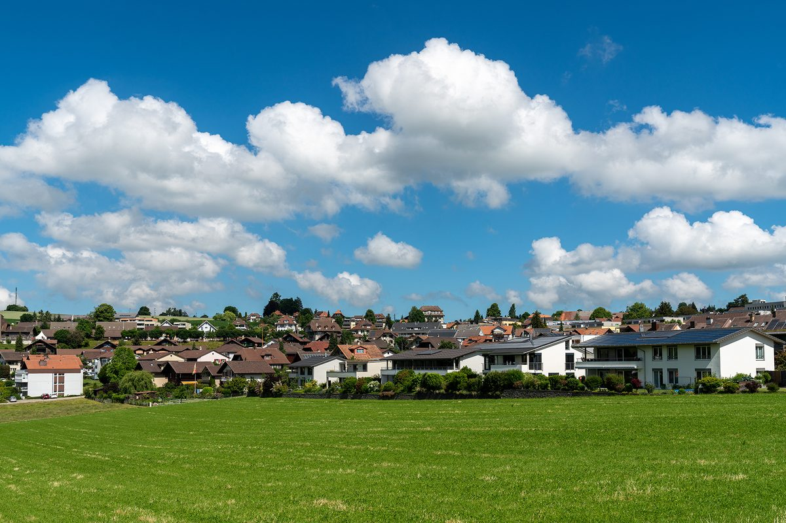
포르투갈 정부, 2027년 '재생에너지 수용 계획' 내놓는다…"설치 때 한 번이 아니라 여러 해 주민에게 이익을"
환경에너지부 장관 "지역 반발은 긴급한 일", 이웃 주민용 에너지공동체를 예로 들어…예산안엔 한 문장뿐 예산·일정 없고, 6월 법령이 정한 90일 기한도 9월 말 넘겨
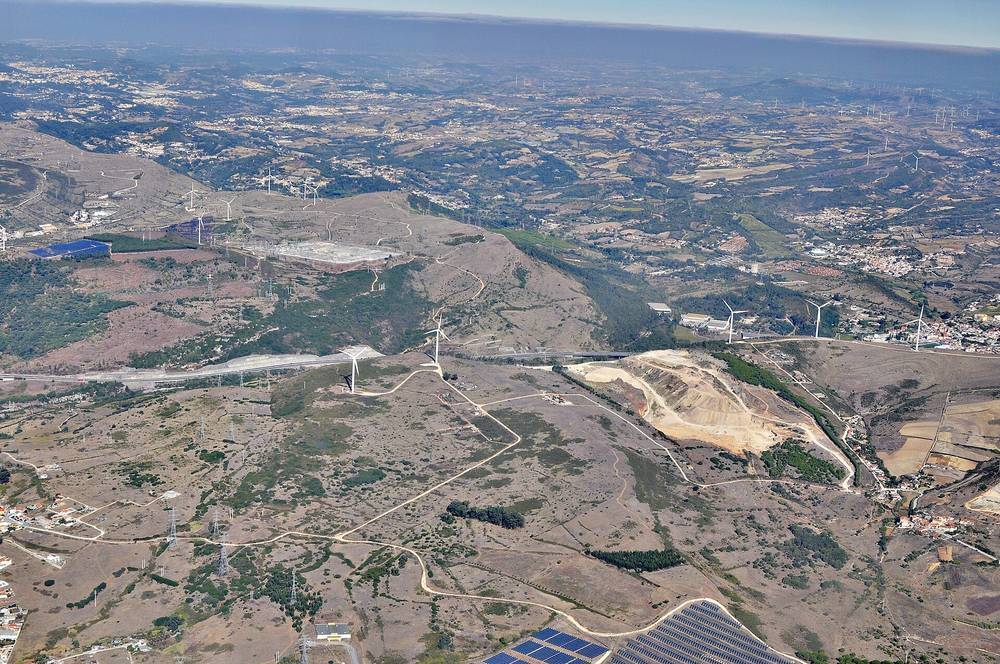
그리스 코자니 아크리니 주민 에너지공동체, 태양광 35MW분 이익 세금 없이 기부받는 길 열려…정부 법안 조항 의견 수렴
국가경제재정부 법안 26조…재생에너지 관리 회사 기부금에 증여세·소득세 면제, 마을에 부동산 가진 사람은 다른 공동체 조합원이어도 가입, 아직 확정 안 돼

"발전소를 어디에 지을지가 비어 있다"…지산지소 국회 토론회서 '12차 전기본부터 권역별 수급계획' 제안
윤순진 교수 시나리오 "2040년 경기 첨단산업 수요 353.4TWh 중 53.7TWh 전남으로 옮기면 계통 변동비용 9.2%·출력제한량 18.2% 감소"…11개 권역 계획 세우는 영국을 본보기로
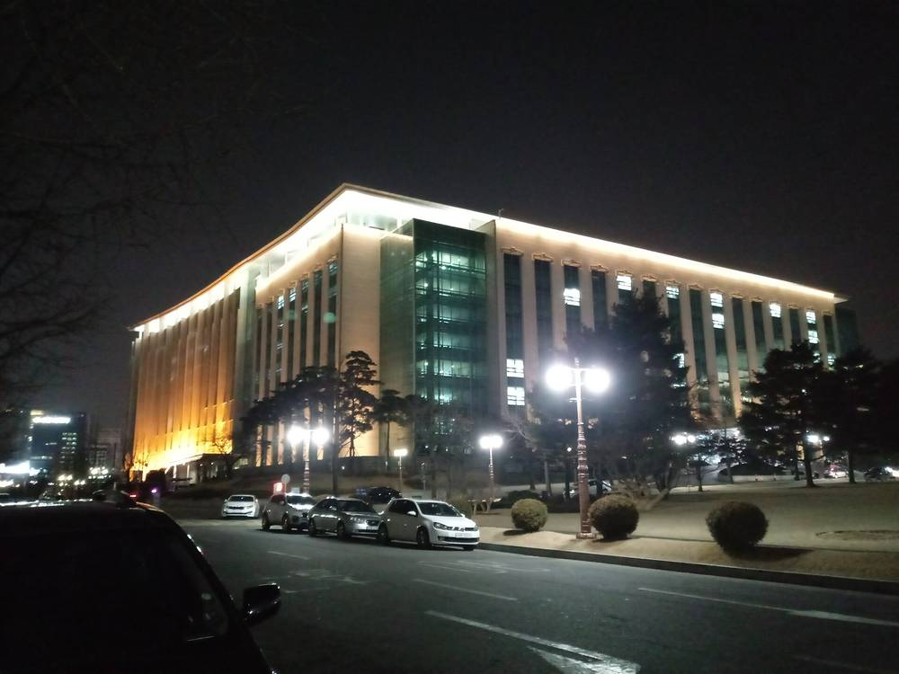
용인시정연구원 "재생에너지 혜택은 시민에게"…시민투자·주민 일자리·공공자산 태양광 담은 '용인형 이익공유 모델' 제안
이슈리포트 'YRI Insight 119호'…반도체 산단 전력설비 약 15GW 전망 속 시민협동조합·펀드 투자, 송전망 영향 주민 우선 출자권 검토, 공영주차장 51곳 중 17곳 태양광 계획 제출
강원도의회서 "전기 만들어도 보낼 길 없다"…햇빛소득마을 42곳 중 41곳 조건부, 박대현 의원 "한전과 마을별 계통 일정 내놓으라"
제350회 정례회 5분 자유발언…강원권 접속 대기 171㎿ 지적, 선정 마을 재경쟁 방지·우선접속 하위법령에 산간·접경지역 반영·ESS 추가 비용 국비·도비 지원 요구
태양광 사업자들, 지역별 도매가격제 상정되면 곧바로 가처분 신청하기로…민간 석탄·LNG 발전사도 합류
지방 기업 전기료 할인 재원 2조8,000억 원 가운데 1조5,000억~1조8,000억 원을 비수도권 도매가격 인하로 메우는 구상에 반발…협회는 오후 1시 판매 단가 39.1% 하락 모의계산, 정부는 의견 검토하겠다는 입장

농협에 농지 소유 길 여는 법안 놓고 국회 토론회서 찬반…법안 목적에 공동영농·영농형 태양광·친환경농업
사회적협동조합 등 사회적경제 조직을 '농지보유합리화법인'으로 지정하는 법안도 다뤄…농민단체는 국가 공공매입·임차농 경작권 보장이 먼저
전북개발공사, 재생에너지 사업 키우려 '에너지본부'·2029년까지 자본금 926억 원 출자 추진…도의회 상임위 "설명 부족" 상정 보류
에너지사업처를 본부로 올리고 정원 103명→151명, 2027년 300억·2028년 300억·2029년 326억 원 단계 출자 구상…구상대로면 수권자본금 2,500억 원 한도까지, 12월 임시회에 다시 올릴 방침
정부 '주민참여 우수사례' 한림해상풍력, 주민 몫 REC 수익에서 주민 회사채 이자 먼저 뗐다…로펌 3곳 "법 위반" 자문 의견
주민법인 3곳이 산 회사채 300억 원의 연 7% 이자를 가중치 0.3 추가 REC 수익에서 충당, 남은 돈만 '이익공유'로 지급…에너지공단 "절차 진행 중", 기후부 "문제 확인되면 개선", 사업자 "주민과 약정, 당국과 협의 중"
조인호 전남광주통합특별시의원, 완도 금일 600MW 해상풍력 주변해역에 김 등 해조류 양식면허지 새로 확보하자 제안
5분 자유발언서 양식 적지 조사와 2027·2028년 양식장 이용개발계획 반영, 특별시·완도군·발전사업자·어업인 협의체 구성 주문…청년 어업인 정착 공간 필요하다고 강조, 집행부·사업자 답변은 아직 없어

최동익 전남광주통합특별시의원, 통합 재정지원으로 2조 원 햇빛소득마을 육성기금 만들자 제안
5분 자유발언서 매년 5,000억 원씩 4년간 적립해 마을 자기자본·장기저리 융자 지원하고 상환금은 다른 마을에 다시 빌려주는 구조 제시…대출 의존이 주민 소득 깎는다고 지적, 집행부 답변은 아직 없어
이 대통령, 2027년 예산안 시정연설서 "햇빛소득마을 확산 등 재생에너지 확대에 2조8,000억 원"…농어촌 기본소득 35개 군으로 두 배
820조9,000억 원 예산안, 올해보다 12.8% 늘어…국토대전환·지방주도성장 33조 원, 지방 우대 사업 61개, 국회에 12월 2일 법정기한 안 확정 요청

그리스, '에너지 공유 권리' 담은 전력시장 법안 의회 제출…다른 건물에서 만든 태양광 전기도 가정·중소기업·지자체가 나눠 쓴다
법안 12조로 전력법에 137Γ조 신설…6MW 이하 설비는 제3자가 운영 대행, 공공 소유 설비는 공유 전기의 평균 10% 이상을 취약가구에 돌리도록 노력해야

콜롬비아 정부 '에너지공동체' 태양광 사업, 패널 견적가가 시장가보다 높다는 문제 제기…대부분 공정 50% 못 미쳐 연말까지 연장 요청
2025년 말 공기업 3곳과 계약 17건·9,140억 페소, 2만8,544가구에 패널 6만221장…정부·전 차관 "가구당 비용으로 보면 과다 비용 없다"

스페인 에너지공동체 837곳 중 가동 27%…정부, 11월 29일 선거 전 '에너지공동체 왕령' 긴급 처리 추진
조합원 20명 미만이 39.1%로 가장 많고 설치 뒤 자가소비까지 최대 2년 지연…공동 자가소비 거리 5km·자가소비 관리인은 이미 시행, 지원 사무소 1차 74곳·1,840만 유로
호주 내러브라이 군의회, 광산회사 화이트헤이븐 태양광에 '규정상 1% 약 56만6,000달러인데 5만 달러'…만장일치로 주 장관에 해명 요구
추정 사업비 5,660만 호주달러 태양광, 2026년 9월 주 정부 승인…군은 지난해 5월 5만 달러 제안 거절, 의원들 '재생에너지든 광산이든 같은 규칙이어야'
이 대통령 "영양 풍력·햇빛 공유수익, 기본소득 재원으로 쓸 수 있을 것"…영양군, 500억 원 들여 풍력 SPC 지분 10% 갖는 '평생연금' 구상 건의
영양군, 신규·재개발 풍력 55기·347MW 사업에 출자해 20년간 1,241억 원 기대…공공재원 200억 원 융자 등 정부에 건의했지만 답변은 아직 없고, 기대 수익은 검증 전 전망치
그리스 서마케도니아 도의회, 국영 전력사·아마존 데이터센터와 지역 발전 협약 협상단 꾸리기로…지역구 국회의원은 태양광 500MW 지역 몫 제안
도지사 안 찬성 17표로 통과, 협상 불가 조건부터 정하자는 야당 안은 8표…쿠쿨로풀로스 국회 부의장, 땅·물 내주는 대가로 500MW 짓게 해 도·시가 함께 지역 전력 공급 회사 만들자고 제안, 전기값 MWh당 50~60유로 주장
영농형 태양광법 12월 17일 시행 앞두고 "농협에도 참여 길 열어야"…발전사업자 자격·종합지원센터 지정 제정안 모두 빠져
허가 기간 최대 8년에서 23년으로 늘지만 사업자는 농민·주민 10명 이상 협동조합 등으로 한정…충북 오창 현장 "고령 농가 혼자 실경작률 80%·차광률 30% 기준 지키기 어렵다"
창원시의원, 5분 발언서 창원형 영농·농촌 태양광 제안…기본계획·실증 시범사업과 농민·마을 수익 참여 구조 요구
전홍표 의원 제156회 임시회 본회의서 농지 지키며 농가 새 소득 만들자…작물별 생산량·발전량·농가소득 검증 시범사업 촉구, 제도 시행 맞춰 시가 먼저 준비하라 당부
기본사회위원회, 부안서 농촌 기본사회 현장 토론회…부안군은 재생에너지 이익 공유와 돌봄·의료 잇는 기본사회센터 구상 발표
옥천군 농어촌 기본소득 시범사업 사례 발제 뒤 보건복지부와 정책 과제 논의…화동사회적마을 치유농장·주간보호센터 방문, 센터 재원 규모와 시작 시점은 공개 안 돼
베란다 태양광 보급, 세입자·아파트 단체신청까지 문 열었지만…지자체 초기 예상 수요는 목표의 13.6%
기후에너지환경부 19일 변경공고로 소유주 동의 받은 임차인 지원·자부담 분납 허용, 사업계획서 접수 12월 11일까지…56개 지자체 예상 수요 1만3,629가구, 지방비 40~50% 이상 부담이 걸림돌
신한자산운용, 주민수익공유 펀드·에너지 인프라 성장 펀드 합계 약 5,000억 원 결성…주민 펀드 첫 투자처로 대규모 해상풍력 주민참여 사업 확보
발전단지 인근 주민·주민조합에 지분·채권 투자 자금을 대고 발전수익 일부를 배당·이자로 돌려주는 구조…주민 펀드 단독 금액, 첫 투자 사업 이름, 주민 금리·배당 조건은 발표에 없어
제주 한림해상풍력 주민 투자 300억 원 가운데 200억 원은 공단 정책융자…투자 배당과 도민 공공 환원을 나누자는 제안 나와
인근 3개 마을 주민 1,009명 협동조합 투자, 저리 융자 대상은 거리·거주 기간·어업권 피해로 제한…추자해상풍력 '주민 우선, 도민 확대' 구상엔 금융비용 격차·배당 소외 우려, 지역 일간지 기획 연재 마무리 제안
서산 관내 발전용량 68만kW 중 주민 수익 마을발전소는 218kW, 0.03%…시의원 "주민참여·개발이익공유 조례안 준비"
김애란 서산시의원, 첫 시정질문서 주민협동조합 설립 컨설팅·이익 배분 기준 마련에 집행부 협조 요청…조례안은 발의 전 단계, 재생에너지 대목 시 답변은 알려지지 않아
환경운동연합, 재생에너지 공공성 보고서 내고 3MW 넘는 발전 허가권 지방 이양·이익공유 지역사회 기금화 제안
주민 사전고지 최소 21일로, 주민참여 법인 경영공시 의무화…설비 약 90% 민간 소유 구조 바꾸려 발전공기업 통합 법인을 전환 주체로
영농형 태양광 특별법 12월 시행, 주민 환원·임차농 보호 조항 담겼지만 나눌 몫은 숙제…정부 실증 29건 중 24건 수확량 줄어
농지 태양광 사용 기간 최대 8년 묶였던 제도 바뀌고, 반도체업계 에너지 협력체 보고서는 충남 당진·서산을 영농형 잠재량 상위로…실증 다수에선 수확 손실보다 발전 수익이 더 커
공공주도 해상풍력 전북 철회·제주 유찰 잇따라…인천 IC1 680MW 6조4,612억 원, 사업자 미정 속 재원에 '주민조합대출' 2,584억 원
서부발전 컨소시엄 부안 1GW 참여 철회, 추자 2.37GW·제주 서부 181MW 유찰…iH 자기자본 15%·일반대주단 81%·주민조합대출 4% 계획, 출자 한도는 약 1조1,875억 원
부울경 에너지포럼 "분산특구, 시·도 경계 넘어 생활권 단위로"…올해 공모는 재생에너지 100% '커뮤니티 마이크로그리드형'만
에너지공단 "660만㎡ 이하·책임공급 70% 이상, 12월 지정 심의"…울산은 남구·울주군 660만㎡ 신청 추진, 부산은 1단계 민간자본 2,094억 원 3단계 확대안
행안부, 주한 외교사절 정책설명회에 사회연대경제 넣고 횡성 하대리 햇빛소득마을 방문 일정 잡아
29~30일 강원 원주·횡성·홍천·춘천 일원, 재난안전 중심이던 소개 범위를 정책 전반으로 넓혀…하대리는 햇빛연금 협동조합 중심으로 주민 65가구 참여, 1,000kW 태양광 추진 계획
기후부, 2027년 예산 요구안에 햇빛소득마을 이차보전 29억 원·바람소득마을 26억 원 담아…송전단 ESS에는 5,724억 원 요구
재생에너지 2조6,600억 원·메가 프로젝트 1조9,000억 원을 국회에 요구…재생에너지 융자·금융지원 1조5,108억 원, 풍력보급지원사업 새로 만들어, 확정은 국회 심사 뒤
미국 앤아버시, 시민단체의 '공공전력' 주민투표안에 투표 8일 앞두고 무효 확인 소송…주 법무장관실은 "헌장 수정으로 볼 수 있다"
시의회 10 대 1 결의 따라 69쪽 소장 내…시는 "헌장 개정 절차 안 밟았다", 시민단체는 "막판 선거 결과 바꾸기" 반발, 판결·심리 일정은 아직 없어
이탈리아 2027년 예산안, 학교·병원·대학 등 공공건물 에너지 개보수에 약 16억 유로…태양광 우선으로 소비 30% 감축 목표
EU와 합의한 에너지 국가 예외 조항 70억 유로에서 재원 마련…알려진 배분은 학교 6억5,000만·의료시설 6억·대학 2억·체육시설 1억5,000만 유로로 아직 확정 전
지방정부 RE100 토론서 영농형 태양광 협동조합 자부담 시군당 60억~150억 원 추정 나와…12월 시행 지원법 사업주 자격 제한도 과제로
경북도 과장, 청도 산사태 뒤 도내 산지 태양광 인허가 2,100건에서 400건 수준으로 줄었다고 밝혀…태양광 개발행위 전용 법률 제정·사전 소통과 이익 공유 주문도
함평군, 군 주도 계획입지로 연 2TWh 재생에너지 공급 구상…사업자 선정 때 가격과 함께 주민소득계획 반영
영농형 500MW·일반 400MW·건물 100MW에 인접 지역 500MW 공급계약 검토…부지·인허가·계통·주민협의 군이 먼저 준비하고 영농형 수익공유 모델 마련, 주민 지분·평가 비중은 공개 안 돼
미국 앤아버 전 시의원, 시의회의 시영 전력 제안 E 반대 결의가 선거 중립 위반이라며 주 정부에 진정
10 대 1 결의로 시 변호사에 법적 다툼 지시하고 반대 발언 35분 방송한 것 문제 삼아…시의원 쪽은 투표 앞둔 엉터리 진정이라고 반박, 주 정부 판단은 아직
영암·해남 농어민 협동조합연합회, 최대 4.5GW 태양광 기업 매칭 협약…기후부·전남광주·9개 군은 따로 이격거리 규제 개선 협약
기업재생에너지재단 매칭포럼서 연합회가 공유수면·간척지 활용한 주민 주도 개발, 재단은 기업 구매 수요 연결…부지·구매 기업·연합회 회원 수·수익 배분은 아직 안 나와
신한은행, 발전소 인근 주민 지분·채권 참여 자금 대는 1,700억 원 규모 주민수익공유펀드에 500억 원 투자
신한자산운용 조성, 주민이 주주·대주단으로 참여할 초기 투자금 조달 지원…금리·참여 한도·투자 대상 사업은 발표에 없어, 착공 전 개발 단계 겨냥한 3,000억 원 생산적금융펀드에도 2,000억 원
싱가포르, 정부기관 태양광 수요 묶어 통합 입찰…주차장 지붕·건물 벽까지 넓혀 2035년 4GWp 노린다
에너지시장청, 시공사 패널 지정해 기관별 건물 잠재력 평가·맞춤 설치안…산업단지공사는 외벽·컨테이너 태양광 기술 공모, 단독주택엔 공동구매까지 잇는 디지털 포털
아일랜드 농촌부 장관, 재생에너지 지역이익기금 더 키워야…지금은 발전량 MWh당 2유로를 15년간 의무 출연
정부 새 농촌 발전 전략 발표 자리서 캘러리 장관이 운영사 출연금 인상 바란다고 밝혀, 인상 폭·시기는 안 내놔…마틴 총리는 5년간 전력망 180억 유로 투자로 농촌에 어려운 결정 온다고 말해
뉴욕주의회에 민간 전력회사 공공 매입 법안 계류…로체스터 공공 전력 운동, 지역 전력회사 공영화의 길로 삼으려
센트럴 허드슨을 채권으로 사들여 요금으로 갚는 방식…운동 단체는 공영 전력 요금이 13~63% 싸다고 주장, 카운티의회는 2024년 타당성 조사 예산 16 대 13 부결
제주 추자해상풍력 2.37GW 해남 신해남변전소 연계 거론…호남 업계 "지역 계통 문제 먼저", 지산지소 원칙 논란
김정호 기후에너지환경노동위원장 "신해남 연결 땐 반도체 클러스터 공급" 취지 발언, 연계는 미확정…호남 변전소 87곳 중 41곳 포화·해상풍력 16.7GW 계통 선점에 배분 우선순위 쟁점
미국 미시간 '커뮤니티 솔라' 법안, 2021년 뒤 6건 나왔지만 모두 표류…하원·상원 4건 위원회에 묶여 청문회 일정도 없어
저소득 가구 몫 40%·요금 최소 10~20% 절감 담은 하원안까지 나왔지만 DTE·Consumers Energy "미가입자에 비용 전가" 반대…앤아버는 시 에너지공사로 가정에 태양광·배터리
국회서 동 지역 햇빛소득마을 요구 나오자 제주 동 지역 문의 잇따라…출력제어 탓 마을마다 억대 ESS 부담이 걸림돌
제주도 관계자, 행안부가 의견 받는 중이며 연내 기준 발표 예정이라고 전해…확대 여부는 한전 협의 남아 예측 일러, 애월 용흥리·남원 위미1리 선정·3차 공모 이달 말 마감
영국 웨일스 랜이드로스 주민 에너지 클럽, 정부 기금 94만1,280파운드 받아 사회적 가상발전소 넓힌다…10가구 더 무상 태양광·배터리
고등학교·주민센터·청소년클럽에 재생에너지 설비…웨일스 정부, 참여 가구 전기요금 연평균 368파운드 절감 추산, 공동체 기금으로 해마다 약 1만4,000파운드 예상
대통령비서실·관계부처, 담양 햇빛소득마을서 현장간담회…전남광주, 전국 최다 126곳 선정에도 조건부 많아 ESS 설치비 부담 완화 등 건의
전국 선정 523곳의 약 24%가 전남광주…계통·부지·자금 보완 필요한 마을 많아 지자체 기준인력 배정·통합관리 플랫폼 구축도 요청, 정부 답변은 알려지지 않아
함평 재생에너지 특구 추진위, 정부·국회에 '군민주도형 국가 에너지생산 선도지역' 지정 요구…특별법 등 4대 과제 제시
군 전체를 발전·ESS·송변전·산단을 함께 계획하는 국가전략 공간으로 묶자는 구상…장기 8GW, 입지 기피시설도 받겠다며 11월 16일 서명·건의서 전달 예정, 특구·특화지역·국가산단 모두 요구 단계
전북도·대통령비서실, 익산 여산면 햇빛소득마을 현장 점검…5개 마을 협동조합 옥금저수지 990kW 수상태양광 준비 상황 살피고 간담회
익산시청 간담회서 ESS 설치 지원·부지 확보·주민 자부담 완화 논의, 익산시는 국공유지 활용 규제 완화 등 4가지 건의…익산 7곳 조건부 선정, 3차 공모 30일 마감
그리스 에너지공동체 연대체 ΔΕΣΜΗ, 정부 새 법안에 "주민 기반 넓은 공동체에 계통 우선 접근권을"…민간 사업과 '형식상 같은 대우'로는 밀려난다
환경에너지부 법안 의견수렴에서 3·4조 비판…계통 여유 용량 별도 몫, 짧은 인허가, 대기 신청 순위 보호, 출력제한 상한, 규제청 감독 등 5가지 요구
인천시, 수도권매립지 2매립장 상부 154만㎡ 쓰임새 '시민 숙의' 29일 첫발…정부 태양광 제안에 주민 반대
시민 50명 학습마당 시작으로 2027년 1월 정책권고안 마련 계획…태양광·공원 등 활용 방안 아직 정해지지 않아
윤호중 행안부 장관 "햇빛소득마을 2030년까지 3,000개 이상"…'동(洞) 지역 제외' 지적엔 "농촌 특성 지역은 확대 검토"
국회 행정안전위원회 종합감사 답변…1·2차 공모로 523개 마을 선정, 3차 공모는 30일까지. 박정현 의원 "행정구역상 동인 농촌은 참여 못 해"
이재명 대통령, 농어민과의 대화서 "태양광은 발전 사업" 농민 지적에 "외부업자 아닌 지역 주민에게 기회 줘야"
권혁정 전국마늘생산자협회 사무총장 "농지는 먹거리 생산에" 문제 제기…대통령은 "반론 안다"며 전력 수요 증가·방치 토지 활용 들어 답해
박수민 의원, 종합감사서 주민참여 태양광 일부 수익률 20~27% 사례 들며 햇빛소득마을 2,200곳 확대 때 한전 부담 질의
최재관 에너지공단 이사장은 기존 SMP·REC 제도라 별도 보조 아니라고 설명, 김성환 장관은 적정 이윤 수준으로 수렴할 것으로 내다봐…계통 조건부 승인 96% 지적도
인천 주안·부평산단, 정부 에너지자급자족 인프라 공모 선정…공장 지붕·주차장에 태양광 10MW
2029년까지 국비 200억 원 포함 320억 원 투입해 연 1만2,400MWh 생산 계획…발전 수익으로 '햇빛소득 기금' 11억 원 만들어 입주기업·근로자에 돌려준다는 구상
스리랑카 만나르 국영 풍력단지 6년, 어민·주민 "어획 줄고 침수" 반발…정부, 만나르 신규 사업 동결
1단계 30기·104MW 2020년 가동, 14기 추가 공사 중…주민들은 터빈 탓으로 보지만 원인은 확인 안 돼, 시민위원회 주도로 소송 2건
이헌승 의원, 주민참여 태양광 274건 20년 예상 수입 중 REC가 약 48%라며 햇빛소득마을 전기요금 부담 공개 요구
에너지공단 자료 분석…20년 전력판매 4조109억 원·REC 약 3조7,200억 원 추산, 기후에너지환경부·에너지공단 반론은 아직 안 나와
석탄발전 폐쇄 지역 정의로운전환 특별지구 지정기준 고시안 행정예고 중…11월 2일까지 의견 받는다
고용노동부·산업통상부 23일 제정안 공개…신청 전 협력업체 노사·주민 의견수렴 의무화, 지정 기본 2년에 연장 포함 최장 5년
이탈리아 빌라레자, 태양광 발전소 관련 보상 협약으로 유치원 난방설비 교체…마을 예산은 0원
관개·농지개량 조합이 공사비 전액 부담, 마을은 8월·10월 집행부 결의로 협약 승인·확인…다음 단계 창호 교체엔 국가 보조금 6만1,909.5유로
보령시, 장동혁 국민의힘 대표와 정책간담회…공공주도 태양광·해상풍력 집적화단지 육성 건의
석탄화력 단계적 폐쇄 대응 제도 개선도 요청…폐지지역 특별법 지원 소급 적용·안보전원발전기 지원 근거·미래대응기금 배분 기준에 피해 영향 반영
메가특구 법안 속 원전 전력 직접구매(PPA) 허용 조항 논란…기후부, 동의 곤란에서 신중 접근으로 표현 바뀌어
박해철 의원 자료 공개, 허용 여부는 아직 미정…월성 2호기 전력을 한 기업에 모두 공급하면 다른 수요자의 대체 전력 구입비가 약 3,800억 원 늘 수 있다는 의원실 추산

이탈리아 코디고로 시의회, 공공 재단형 재생에너지공동체 엘렉트라 정관 개정 놓고 충돌…야당 의원 3명 퇴장
야당은 열흘 만에 검토하기엔 서류가 너무 많다며 항의, 여당 원내대표는 재단이 공동체를 공공이 완전히 통제하는 구조로 바꾸려는 것이라고 반박…내년 말까지 마치면 지원금·ARERA 감면 기대
공공기관에 재생에너지 발전 목표 매긴다…기후부, 직접 설치 용량과 발전사업자에 내줄 유휴부지 두 갈래로 도입 추진
RPS 2027년 1월 폐지 뒤 상반기 첫 경쟁입찰 전 시행 계획…한국도로공사·코레일처럼 발전사업 못 하는 기관도 대상, 공공기관·지방공기업 유휴부지 전수조사부터
독일 정부 EEG 개정안 풍력 임대료 3.5% 상한에 기센 군 지자체들 수입 끊길까 우려…땅 임대 대신 운영회사 지분·주민 협동조합 참여로 맞선다
라베나우·랑괴른스·알렌도르프 시·읍장, 임대 수입 급감이나 사업 중단 경고…랑괴른스는 고속도로 옆 태양광단지 운영회사 50% 소유, 알렌도르프는 시가 지분 50% 갖고 전기를 시 건물에 쓰는 안 검토
경기도, 내년 사회연대경제 예산 56.5% 깎은 편성안…경기도사회적경제원 사업비 0원
사회혁신경제국 소관 567억 원에서 247억 원으로, 사업 51개는 31개로…도비 사업은 신청액 절반만 반영, 11월 도의회 심의
RE100 PPA 중개플랫폼에 구매 585MW 몰렸지만 계약은 아직 0건…중소·중견기업 앞엔 20년 계약·신용도 벽
23일 기준 판매 456MW·구매 585MW 등 1,041MW 등록, 지난달 7일 기준 협상 5건·협약 3건에도 최종 계약 없어…단기 PPA·신용 보강 금융지원·가격정보 공개 요구
웨일스 앵글시 사회적기업의 조력발전 모를레, 2027년 첫 터빈 앞두고 정부 지원 지속 요청…최대 240MW 단계 개발
웨일스 에너지 장관 첫 현장 방문…사업자는 지역 업체·도제에게 이미 일감 생겼다며 꾸준한 지원 필요하다고 강조, 장관은 만든 가치를 지역사회에 더 많이 남길 수 있다고 평가
바르셀로나, 10개 구 공공건물 지붕 10곳 공동체 태양광에 내주는 공모…주민 에너지공동체들은 시범사업 넘어선 상설 정책 요구
에너지공동체 네트워크, 시의회에 종합계획·전용 기금·재산세 감면 개정 등 5대 약속 제안…지붕 공모는 11월 4일까지
덴마크 장관, 오르후스시가 이웃 쉬드유르스시 경계에 세우려는 150m 풍력발전기 3기에 대한 이의 받아들이지 않아
반경 900m 안에 주민 51명…쉬드유르스 시장은 집값 하락·이웃 주민 의견 미청취·칼뢰 성터 경관 들어 반발, 오르후스는 지구계획 처리 방침
프랑스 라발레트-튀드-드론 군연합, 공공수영장 지붕 태양광 운영할 공공서비스 회계 따로 세워…33만8,000유로 들여 해마다 1만7,000유로 절감 기대
본예산이 같은 금액을 빌려주고 운영 흑자로 약 11년에 걸쳐 갚는 구조…전기는 팔지 않고 수영장 물 데우기 등에 자체 소비, 11월 공사 시작
대한태양광발전사업자협회장, 지역별 한계가격제는 사업자에게 책임 전가라고 주장…소매요금 지역 차등 인상을 대안으로
곽영주 회장, 송전망 모자란 지역 도매가 하락은 낮에 발전하는 태양광에 더 큰 타격이라고 주장…자기 돈과 대출로 지은 노후 대비 소규모 사업자 많다며 유예기간·경과조치 갖춘 예측 가능한 정책 요구
수도권 전력자급률 64.3%로 권역 중 최저…한 해 7,840만MWh를 다른 지역 전기에 기대
국토연구원, 2024년 한전 통계로 5극3특 권역별 전력 수급 분석…대구경북 160.8%·호남 158.0%, 수도권 발전은 LNG 77.5%·신재생 5.9%…용인 반도체클러스터 약 10GW 중 인근 확보는 3GW
미국 뉴욕주 허드슨밸리 단체장들, 세입자도 쓰는 플러그인 태양광 법안 서명 촉구
SUNNY Act, 1,200W 이하 설비는 사전 계통연계 승인 없이 설치 뒤 신고만…올봄 주의회 양원 통과, 주지사실은 서명 여부 안 밝혀, 안전 우려도
첫 법정 재생에너지의 날, 태양광 사업자들 지역별 도매가격제 반대 시위
서울 코엑스 기념식장과 나주 전력거래소 LMP 설명회장에서 도입 유예·재검토와 기후부 장관 사퇴 요구…송전망 부족 책임을 발전사에 떠넘긴다는 주장, LNG·석탄 민간 발전업계도 우려
정부 베란다 태양광 10만 가구 보급에 LH 불참…서울 대단지 절반도 설치 막아
국비 375억 원 사업 참여 요청에 LH 추진계획 없다 회신, 안전·유지관리·발전량 차이 들어 옥상형 고수…태양광 없는 LH 임대주택 466개 단지 38만190가구, 보급사업 국비 지원율은 47%에서 17%로
태양광 이격거리 상위법 시행 한 달…기초지자체 129곳 중 조례 고친 곳 7곳뿐, 9곳은 옛 기준으로 허가
기후솔루션 전수조사, 118곳(91.5%)에 법이 허용하지 않는 조항 남아…장흥은 국도 1,000m 도로 이격 유지, 10곳은 조례 정비 전이라도 법 기준 적용
공공건축물 태양광, 설치 뒤 관리는 사각지대…경기도의회 토론회서 전수조사·통합 모니터링 제안
신미숙 경기도의원 22일 입법토론회, 도내 학교 약 2,500곳 중 약 1,000곳에 설비…계량장치·REGO 활용해 인증서 판매수익을 유지관리비로 쓰자는 방안도, 노후도별 점검주기 차등화·조례 제·개정 검토
전남광주특별시의회 의원들, 농어촌공사 재생에너지 보급의무자 지정 제외 요구 성명
기후에너지환경부 시행령 개정안은 재생에너지 설비 10만kW 이상 공공기관 발전사업자도 의무 대상으로…16만5,000kW 보유한 농어촌공사 포함 가능, 의원들은 설비 투자·과징금 부담에 농업인 지원 위축 우려
진주시의회 최민국 도시환경위원장, 주거지역 옥상 태양광 용도제한 재검토 요구…경남서 준주거지역까지 막은 곳은 진주·거제뿐
이격거리 완화 조례안 심사 중 국토부 2015년 지침·2019년 유권해석과 맞지 않을 소지 지적…고성·남해·하동은 옥상 태양광 별도 기준, 시는 안전성·사회적 공감대 확보되면 검토
위성곤 제주지사, 추자해상풍력 연 1,300억 원 이익공유 조건은 무리…공모 조건 바꿔 연내 재추진
국내 최대 2.37GW·총사업비 16조~24조 원 추정, 두 차례 유찰로 1년 넘게 표류…고정 환원금 대신 사업자 자율 제안, 계통은 전남 접속도 허용 방침
탈석탄 앞둔 충남, 재생에너지 고용효과 석탄의 2배 넘지만 절반은 도 밖으로 샌다
한국은행 대전세종충남본부 보고서…10억 원당 고용 태양광 3.93명·풍력 4.08명 대 석탄 1.65명, 기자재 외부 조달로 1.8~1.9명은 다른 지역 몫…"공급망 지역화·RE100 기업 유치해야"
국회 기후노동위, 제주 가상발전소 관제 현장 점검…흩어진 태양광·풍력·ESS 묶어 운영하는 체계 살펴
20~21일 제주 에너지전환 현장시찰, 한림읍 VPP 관제센터에서 AI 발전량 예측·전력시장 입찰·배전망 연계 ESS 확인
스코틀랜드 서부제도 의회, 아우터헤브리디스를 공동체 소유 에너지 국가 시범지역으로 지정해 달라고 영국 정부·GB에너지에 요청
폴 스틸 의회 대표, 위르겐 마이어 GB에너지 이사장과 미아타 판불레 에너지안보·넷제로 장관에 서한…섬 방문과 공동체 주도·지분 공유 사업을 받칠 금융·기술 지원 요청
서천군의회 조성훈 의원, 장항국가생태산단서 생산 없이 태양광만 돌리는 입주업체 점검 요구
행정사무감사서 공장 건립·생산설비·실제 가동·고용 실태 확인 촉구…입주·변경계약과 발전사업 허가조건 이행 여부 관계기관과 확인, 위반 땐 법령·계약 따라 조치해야
국감서 BS그룹 해남 솔라시도 개발이익 특혜 의혹 제기…산업부 장관 꼼꼼히 살피겠다
구자근 의원, 산단 이익률 33%·수익 2,500억 원 담긴 내부 문건 공개하고 변전소 조기 건설·RE100 특별법 조항 의혹도 제기…위법 확인 안 된 의혹 단계, BS그룹 입장은 확인되지 않아
발전 5사 중 갈등관리 매뉴얼·교육 함께 갖춘 곳은 남동발전뿐…탈석탄·재생에너지 전환 앞두고 대비 미흡
박해철 의원, 에너지 공기업 9곳 자료 분석…동서·중부발전은 계획·교육 없어 앞으로 마련, 남부발전은 12쪽 운영세칙만 있고 교육·계획 없어 형식적 수준 평가, 다대포 해상풍력선 주민 찬반 갈등
용혜인 의원, 제주 도 소유 유휴부지 빌려주고 재생에너지 임대수익 전 도민 배당 제안
제주도 국정감사서 햇빛바람연금 이익 공유 설계 주문…투자 못 하는 도민도 몫 있어야, 도 유휴부지 약 89% 방치 지적하며 재생에너지법 제26조 장기·저가 임대 근거 들어
국감서 영농형 태양광 시행령 "농업회사법인 참여 지역 과도하게 묶어" 지적
주철현 의원 "국가 간척지 없는 12개 시도는 사업 불가"…송미령 장관 "범위 확대 살펴보고 지방정부와 논의"
미국 하원에 첫 연방 플러그인 태양광 법안…저·중소득 가구에 최대 1,000달러 보조
롭 메넨데스 의원 발의, 콘센트에 꽂는 1,200W 이하 기기 규칙 검토를 주 규제기관에 요구…2027~2032 회계연도 6억 달러, 세입자 사용을 막지 못하는 주에만 지원
아산시의회 상임위, 태양광 200m·풍력 1,500m 입지기준 조례안 통과…세대주 80% 동의 마을사업은 이격거리 예외
천철호 의원 대표발의 도시계획 조례 개정안 건설도시위원회 통과, 문화유산 보호구역·관광지 등 입지 제한 대상 추가…주민참여형·지붕형·햇빛소득마을도 예외, 30일 본회의 의결 남아
송전망 주변 마을 태양광에 설치비 우선 지원…입지선정엔 주민 참관·대안 제안 허용
기후에너지환경부, 국가기간전력망법 시행령 등 입법예고…지자체 지원금 3분의 2 이내 주변지역 배분
낙동강수계관리위, 상수원 규제지역 15개 지자체 재생에너지 25개 사업에 100억 원 지원
2027년부터 특별지원사업에 재생에너지 분야 신설…햇빛소득마을 9개 사업에 81억 원, 가구별 설비 11개·마을 공동시설 히트펌프 5개
석유공사, 거제 비축기지 유휴부지에 주민참여형 태양광 요구받자 다시 검토하겠다
허성무 의원 국정감사서 매립 잡종지 활용한 햇빛소득마을·시민참여 SPC 제안…사장은 국가 중요보안시설 들어 신중한 입장
국감서 재생에너지 계통 안정성 질의…접속용량 75% 호남 집중, 그리드포밍 인버터 약 10%
한전, 성능개선 대상 90kW 이상에서 20kW 이상으로 넓혀 2029년까지 보완 계획…개선 비용은 발전사업자 부담 방향
발전 5사 통합 특별법 국회 심사 본격화…한전 자회사냐 정부 직접 출자냐
최기상안은 한전 100% 자회사 한국발전, 다른 의원안은 정부 전액·51% 이상 출자…정부는 2027년 10월 출범 목표
1MW 이하 주민참여 재생에너지 '계통 우선접속' 시행령 입법예고…행안부·기후부 두 단계 인정
분산에너지법·전기사업법 시행령 동시 개정, 12월 16일 법 시행 앞둬…망 여유 확충·기존 대기 사업자 형평성은 과제
전재수 부산시장 후보 측, 시민에너지 단체들과 RE100 생태경제도시 정책협약
2026년 5월 18일 캠프 정책간담회…재생에너지 개발 50% 이상 시민주도·공공부지 시민 우선 개발 담아
재생에너지 설비 90% 이상 민간 소유…전력연맹 사무처장, 발전공기업이 확대 이끌어야
2024년 9월 국회 기본사회포럼 토론회…해상풍력 발전사업허가 83건 중 77건 해외자본·대기업
政治
済州道議会「洋上風力10GW・年1兆ウォンのエネルギー基本所得の約束はどこへ」…道民全体への利益還元ロードマップを要求
金基煥未来経済産業委員長が道政質問…公約実践計画では5GWに縮小、基本所得は抜け落ちる
済州道、COP31で「2035年カーボンニュートラル」を提示…「再エネ収益を住民所得・地域福祉へ」
トルコ・アンタルヤで4年連続の済州セッション…気候市民会議・V2G・ESSで市民のエネルギー市場参加を拡大
英政府支援の「ネットゼロ・ハブ」「地域エネルギーは住民がエネルギーの主人になること」
イングランドの5ハブのうち北東部・ヨークシャーの責任者「収益は地域に残り、住民が一つになる」
オランダ下院「来春までにバルコニー太陽光の接続基準をつくれ」…17会派中12会派が賛成
世帯の35%がすでに太陽光…屋根のない家も電気代を節約、ドイツは昨年プラグイン設備で500MW増
送電網の補償は増えたが「韓電主導の立地選定から変えるべき」…住民「変電所・路線の輪郭を決める最初の段階から参加を」
政府、支援金の最大3分の2を集落に配分・「系統日差し所得村」先導事業を推進…専門家「エネルギー計画と国土計画を一体で」
営農型太陽光、どの作物の上に農家1戸あたりどこまで？…韓国農林畜産食品部、告示案を11月末に行政予告
12月17日の法施行を前に栽培作物・発電容量上限を調整中…業界「200kWでも農業所得の平均程度」
「日差し所得村」の太陽光用地、財産税の分離課税対象に…韓国行政安全部が地方税法施行令改正案、2027年1月施行
住民の協同組合・社会的協同組合が行政安全部選定の太陽光事業に使う土地が対象…2030年まで適用
韓国政府「条件付き選定のひなた所得村も事業化を支援」…ESS構築事業を11月公告、1MW以下の住民参加型太陽光の系統優先接続を12月末施行
行政安全部・気候エネルギー環境部・農林畜産食品部が説明資料…「523カ所中すぐ着手できるのは36カ所」との指摘に、貯水池・備蓄農地・道路法面など遊休国公有地の提供を継続
南原市議会・盧賢以議員、公営駐車場の太陽光収益を市民に還元する条例の発議へ…討論会で協同組合モデルを議論
10日の「公営駐車場の太陽エネルギー住民所得化方策討論会」に市民・専門家約30人…全州市エネルギーセンター・環境運動連合・共同体支援センターが発表
ソウルエネルギー公社、昨年の太陽光事業の執行率77%…チェ・ドゥホ市議「老朽設備の交換・都心太陽光拡大の年次別実行計画を出せ」
公社「運営期間を終えた発電用地を引き継ぎ高効率化し、公営駐車場の太陽光を段階的に拡大」…EV充電器の委託業者の賃金未払いで管理が1日止まった件も追及
SH賃貸団地の屋根の太陽光、昼に余った電気は管理費に戻るのか…オ・ジュンソク・ソウル市議「料金相殺の現況を公開し、12月末までに転換計画を」
LHが世宗の幸福住宅238世帯で共同住宅初の料金相殺を始めたのを受け、同じZEB3等級の高徳オンビッチェ697世帯の事例を追及…相殺できない団地は理由のリストから
全南光州の「日差し所得村」126カ所、蓄電池の条件で住民の初期負担重く…イ・ジェチャン市議「廃道・堤防・鉄道周辺まで用地を広げ、住民負担を下げよ」
統合特別市議会の行政監査で道路沿い太陽光など新たな用地の発掘を要求…エネルギー産業本部「仮想発電所事業者を指定し村と協議」
来月17日施行の営農型太陽光法、1人当たりの発電容量に上限…小作農には契約の自動更新・賃料引き上げ5%制限
農林畜産食品部、よそ者による系統の「先取り」を防ぐため上限を設け施行令・告示を準備中…標準賃貸借契約書を来年普及、金融・電力単価の支援は協議課題として残る
再エネ100GW目標の5大課題、「青信号」は一つもなし…気候ソリューション「化石燃料の特権・送電網の中立性は赤信号」
12日に「100GW信号機」を公開、導入量は47.2GWで半分に届かず…許可済み洋上風力36GWのうち建設は1%、営農型太陽光の地区指定もまだなし
「日差し所得村」523カ所を選んだが、すぐ始められるのは36カ所…国会予算政策処「新たな村を増やすより選定済みの村の事業化を」
1次選定87カ所のうち即時推進は13カ所、6カ月の補完条件を満たしたのは4カ所のみ…行政安全部「系統さえ解決すれば130～140カ所がすぐ着工」
「2030年までに屋根置き太陽光3億世帯」…バングラデシュ・ケニア・ナイジェリアなどが「世界屋根置き太陽光宣言」に参加
豪州が最初に支持した宣言にインドネシア国営電力PLN、21カ国の議員34人も…許認可簡素化・家計向け金融などを要求
半導体の用水確保へ同福ダムを拡張、280世帯が水没…気候エネルギー環境相「直接の年金は困難、住民の太陽光協同組合による『太陽光年金』なら設計可能」
移転予定住民の対策委は月150万〜200万ウォンの共生年金など6項目を要求…用水単価の引き上げには「全国の水道料金が上がる」と否定
18億ウォンをかけた霊光・月坪村の太陽光1MW、1年以上系統につながらず収益ゼロ…統合特別市議会の行政監査で批判
太陽光所得村126カ所が選定されたが、すぐ接続できるのは5カ所だけ…「自己負担15%で配当偏りの恐れ、小規模の自作農家を優先すべき」
九州の営農型太陽光、5年で4.4倍…全国の設置農地の24%は収穫2割超減で国が許可条件を強化
福岡・八女の茶畑は棚がけにパネルを組み合わせ月7万〜8万円…農水省「遮光率30%未満・年販売50万円以上」の新条件に業界は「一律規制は厳しすぎる」
韓国「日差し所得村」選定522カ所のうち490カ所が「条件付き」…国会予算委で「着工はほぼゼロ、ブローカーが住民を押しのける恐れ」
2027年度予算案審査の全体会議、来年2,200カ所に拡大する計画に予算は利子補給285億ウォン中心…営農型太陽光の150億ウォンも研究・制度基盤に偏ると指摘
送配電網事業104件のうち期限内完成は19件だけ…国会討論会「初期からの住民参加と公正な利益共有を制度化すべき」
李喆圭議員「国家の便益が特定地域の一方的な負担になってはならない」…ウン・ジェホ教授は「適時性・手続き的正当性・空間的正義」を同時に、韓電はドイツの住民参加制度と比較
営農型太陽光法の施行まで1カ月なのに…英陽変電所の完成が2年6カ月遅れ、農家「電気を送る道がない」
154kV英陽変電所は2027年6月から2029年12月末（送電開始基準）に延期…約29kmの送電線と鉄塔約76基は未着工
文錦珠議員、農協の事業に営農型太陽光など再エネを加える農協法改正案を提出…12月の営農型太陽光法施行を前に
林業直接支払いの要件緩和、営農組合法人の準組合員配当の分離課税を2031年まで延長するなど3法案を同時提出
韓国・大田市、17日に再生可能エネルギー政策フォーラム…「太陽光の価値を地域と分かち合う」市民参加型モデルを探る
世界太陽光会議の特別セッションとしてエネルギー自立村・産業団地屋根置き太陽光の事例を発表…エネルギー技術研究院・韓電KDNと分散型エネルギー協定、特化地域指定の足がかりに
扶安郡、公論化委員会が発足…洋上風力の送電線路をめぐる対立、住民代表5人を含む13人が政策勧告案を作成
西南圏洋上風力の共同接続設備の立地・住民被害を議論…4月に郡と対策委が公論化で合意、条例・委員構成を経て初会議
全南光州統合特別市と基本所得党、再生可能エネルギーの住民参加・利益共有の協約履行を点検…農漁村基本所得も議論
4月11日に結んだ政策協約3分野の進捗を共有、基本所得党は常設の対話窓口を提案…閔亨培市長、再エネなど地域資源で住民の所得事業を掘り起こす
オーストラリア、賃貸住まいでも「挿して使う太陽光」へ道開くか…エネルギー相会議がプラグイン太陽光・蓄電池の安全基準づくりに着手
世帯の10軒に3軒が賃貸、引っ越しの際に持ち運べる800W前後の小型設備…西オーストラリア州は12月9日まで意見募集、市民団体「2027年7月1日までに全国で解禁を」
春川市議会の議員研究会、「住民所得型・太陽の都市組合」支援研究の中間報告…発電収益を住民の所得につなぐ制度設計
「ESG実践研究会」が5日、市議会小会議室で委託研究の中間報告会、ユン・ミンソプ会長ら議員5人が出席…組合への支援策と制度基盤づくりが目標
独市民エネルギー協同組合「EEG改正案は蓄電を妨げる政策」…ブーゼックのゾンネンラント、太陽光・風力併設の蓄電池計画が頓挫の危機
2027年から新設の屋根置き太陽光は設備容量の50%までしか系統に送れない案…固定価格を超える収益は回収され蓄電投資が回収できず
益山市、ひかり所得村の事業区域を「里」から「面」単位へ広げるよう政府に建議
崔正浩市長「発電所の隣の村も一緒に恩恵を受けるべき」…河川斜面・廃校・国公有地まで用地探し、管理機関との協議が課題
送電線の住民利益共有の議論が本格化…政府「新設鉄塔を最大2,214基減らせる」
2038年まで72兆8,000億ウォン投入の計画に住民は「選択権がない」と反発、政府は送電塔周辺の村への太陽光収益配分を推進
農漁村基本所得、財源の国費を50%に増やしても郡の負担は残る…再エネ共有収益を財源にする構想は「純収益・配分基準」が課題
最初の7郡の総事業費8,867億5,000万ウォンのうち郡費47%、新安・英陽は約57%…新規約18郡の公募に34郡が申請
地域別卸価格制を阻止へ…太陽光・風力・市民発電協同組合など8団体が共同対策委を結成し政府説明に反論
政府「スポット市場の太陽光の99.5%が1MW以下、月平均精算が可能」…対策委「件数比率にすぎず売上保護ではない」、25日世宗・27日ソウルで集会予定
市民と社会連帯経済の組織が共同出資する「価値金融信協」設立へ…11日に国会でフォーラム
社会住宅・医療介護・再生可能エネルギーに資金を供給する構想…国会議員5人が共催、行政安全部・信協中央会が後援
軍浦市の防音トンネル太陽光、ソーラーリーグで長官賞…外部財源86億ウォンで事業費の58%を充当
テヤ・サムソン地下道合計1,329kW、テヤ地下道の市費負担は22億ウォン減り、上部の賃貸で年2,500万ウォンの歳入
義城郡、再生可能エネルギー開発利益を郡民と共有する条例を制定…チェ・ユチョル郡守「風と日差しに持ち主はいない」
協同組合・ファンド・債券で発電事業に参加して配当を受け、配当金の一部は義城愛商品券で…郡守「利益は外に流れ、地域には騒音と景観の毀損だけが残った」
梁山・院洞面のテリ・ソンリ・チャンソン村、洛東江水系基金で太陽光所得村を推進…行政安全部の公募申請が残る
洛東江水系管理委員会「2027年再生可能エネルギー特別支援事業」の対象に…設備はテリ360kW・ソンリ999.45kW・チャンソン998.46kW、住民同意率90%・72.9%・71%、来年度の支援予定額20億2,700万ウォン
麗水のチェ・ドンイク議員「太陽光所得村育成基金2兆ウォンを造成しよう」…市議会5分発言で提案
4年間毎年5,000億ウォン、住民の初期自己資本と長期低利融資に充て、返済金は別の村に再貸付
イタリア下院、再生可能エネルギー共同体のインセンティブ期限を2030年まで延長求める議事日程決議を採択…政府が検討約束
インセンティブ対象5GWのうち稼働は約523MW…GSEが保有するデータの再提出を求めないなど書類簡素化も盛り込む、拘束力のない決議で実際の延長は政府の後続措置次第
米ボルティモアの市民団体、民間のBGEに代わる市営電力を求める運動…市議15人中4人と新たな当選者3人が「BGE献金拒否」に署名
データセンターへの反発と料金高騰の中、2025年に発足した「ボルティモア公営電力」…BGEは4年で77億ドルの投資と年1億5,610万ドルの値上げを申請、過去25年の公営化の試み64件のうち成功は7件
農業専門紙コラム「ヒッピッ所得村は検証されていない政策」…形だけの協同組合・外部業者依存を懸念
農業人新聞のユ・ヨンソン記者、施政演説の再生可能エネルギー2兆8,000億ウォン投資計画に「電力網が先」「農業予算ではなく行政安全部の役割」と主張
ルーマニア、集合住宅の太陽光をめぐる法案3本が議会手続きに…市民団体案は共用屋根の売電収入の最大85%を管理費から差し引く
プロシューマー・エネルギー共同体協会（APCE）が2本を提案…ベランダ太陽光はパネル4枚・800VA以下で届け出のみ、共用屋根は所有者の3分の2の同意、別の法案は非参加世帯への負担転嫁と配当を禁止
全南光州市議会、大統領直属の基本社会委員会と懇談会…新安の太陽光年金の全域拡大・共有富基金の造成を議論
日差し・風を生かしたエネルギー基本所得、AI時代の共有富配当・国富ファンドも取り上げ…ソン・ヒョンゴン議長は条例制定・基金造成など自治立法の推進を表明、具体案はまだ
国会でエネルギー基本権討論会…料金支援を超え最低保障基準・参加権・便益共有権の法制化を提案
ソ・ワンジン議員が主催、環境正義のコ・ジェギョン共同代表はエネルギー転換への参加権・情報権・便益共有権を、エネルギー経済研究院のキム・ジェギョン先任研究委員は基本エネルギーと供給停止防止のエネルギー法明記を提案
全南光州市、公共が立地を選ぶ営農型太陽光の計画立地を推進…年内に市郡と再生可能エネルギー予備地区の協約
12月17日の営農型太陽光事業法施行を前に関係機関が業務共有会…地域の電力を地元企業のRE100に使う電力取引策も議論、対象地・容量・利益共有の方法は未定
「石炭は公共、再エネは民間の独占はもう一つの不平等」…国会で発電公企業統合の討論会
申正勲・崔基相・安浩永・鄭恵京議員と公共再生エネルギー連帯が共催…統合公企業が転換の主体となるよう経営評価の見直しと民間ガス発電の制限を要求
豪キャンベラ最大の蓄電池250MWが商業運転…開発会社、15年間収益の50%を準州政府と分け合い、地域団体9か所に50万豪ドル
準州政府が建設を後押しし運営収益の半分を受け取って脱炭素の財源に…需要ピーク時にキャンベラの3分の1へ2時間電力、2045年カーボンニュートラル狙う
アイルランド・オファリー州のファイブアリー・エネルギー共同体、政府のエネルギー賞を受賞…2段階で128世帯が太陽光パネル1,650枚を共同設置
「ソーラー・ミハル」事業で各世帯が再エネ電力を生産しエネルギー費用を削減…国営ボード・ナ・モーナのデリンラフ風力発電所の地域利益基金がSEAI・住民とともに支援、気候・エネルギー・環境相が授与
英政府、「エネルギー独立法案」を下院に提出…新規再エネ事業に地域への最大20%の持ち分提供を義務づける道開く
5MW超の新規陸上風力・地上設置型太陽光は地域社会利益協定の締結が必要に、政府暫定案は風力1MW当たり年5,000ポンド・太陽光700ポンド…持ち分提供の対象は1MW以上に引き下げ可能、比率・金額は二次立法で確定
「高速道路の防音トンネルに市民の太陽光発電を」…韓国・全南光州市議会のパク・ピルスン議員、行政監査で都市型の基本社会モデルとして提案
湖南高速道路の拡張工事に伴う防音トンネルに太陽光、市民参加・収益共有方式の検討を求める…都市内の農村の邑・面・洞への農漁村基本所得の拡大も要求
洋上風力の集積化団地8カ所すべてで軍との協議まとまらず…気候部「年末までに条件を満たさなければ指定解除を検討」
計画設備1万3,037MW・計画事業費85兆4,000億ウォン規模…海軍は8カ所すべてに作戦上の検討意見、新安の「全南10」事業には海軍の航路・空軍レーダーの遮蔽を問題視
「家が4軒なら守られないのか」…農民・住民団体、再エネ離隔距離の「5戸未満除外」施行令に憲法訴願
江陵・奉化の住民6人が請求人に…条例の離隔距離上限（太陽光200m・風力1,500m）に加え、離隔距離内の住宅が5戸未満なら適用しない条項を問題視、「平等権・環境権・健康権の侵害」と主張
ソウルの電力自給率、1年で11.6%から6.8%に…ノ・ヨンス市議、統計から漏れたベランダ太陽光40MWの統合管理を要求
ソウル市議会の気候環境本部への行政監査…ソウル市は小規模ベランダ太陽光の管理は難しいが案内中、普及拡大には国内産業の支援が必要と答弁
韓国の祖国革新党、超広域特区法案を党論として発議…再生可能エネルギー事業では総事業費の4%以上を住民に投資機会として優先提供
住民・労働者が参加する相生協議会、送配電の共同接続設備への国の支援を盛り込み、週52時間制の例外や持株会社規制の緩和は除外…規制特例には5年の有効期間、発議段階
韓国気候部、来年度に日差し所得村の教育・広報専門人材育成で5億5,000万ウォン計上…国民の力のイ・ジョンベ議員が短期アルバイト予算と批判
26村で各50人に1人当たり35万ウォンの教育手当4億5,500万ウォン、カリキュラム・教材開発9,500万ウォン…26村の位置づけと気候部の立場は確認されず
ニュージーランド・アシュバートン地区議会、上がる電気料金で太陽光を検討…年40万ドル節約に500万ドル超の先行投資で議員の意見割れる
年間電気代は約177万ドル、来週からの長期計画予算審議で部署ごとの太陽光案を検討…「その金は道路に回すべきか」対「建物の屋根に少しずつ」
国民の力、来年度予算の削減対象に「日差し所得村など再生可能エネルギー」・協同組合・社会連帯経済事業を挙げる
予算決算特別委員ら「再エネ1兆8,210億ウォンは増額中毒、協同組合819億ウォン・社会連帯経済633億ウォンは身内予算」と主張…日差し所得村単独の削減額は示さず…政府は同日の予算案提案説明で日差し所得村の拡大など再エネ普及予算の倍増を説明したが、名指しに直接答えた反論はまだ
来年の上水源「日差し所得村」93カ所に651億ウォン…国会予算政策処「事前調査した村のうち送電網に余裕は40.7%」
錦江・栄山江・蟾津江に420億ウォン（64.5%）を配分も両水系の調査村23カ所のうち余裕は2カ所…行政安全部事業と8カ所重複、気候部「ESS支援と連携」
「ソーラーリーグ」長官表彰に麟蹄郡・高霊郡・タルグボル市民太陽光発電協同組合…民間部門の入賞4団体はすべて発電協同組合
第8回大韓民国ソーラーリーグ14団体の受賞が確定、5日に政府世宗コンベンションセンターで授賞式…高霊郡は太陽光所得村の収益を住民福祉基金に、軍浦市は住民・市民発電協同組合と防音トンネル太陽光を企画
コロンビア前政権の「住民エネルギー企業」事業、278億ペソ規模の協定でも発電所ゼロ…建設財源つかず
基金Fenoge・国際移住機関の協定で実現したのは実現可能性調査50件・740人の研修・住民会社の設立まで…前大臣「根本の約束はまだ果たせていない」と認めつつ、調査の質の問題と実際の支出額は総額より少ないと釈明
スイス・グロースヘヒシュテッテン市のエネルギー会社ENGH、「地域電力共同体」を丸ごと準備するパッケージを発表…反対する住民は会社売却の住民発議
今年1月に始まった制度LEGの設立準備を代行する商品、11月3日夜の住民説明会で紹介…熱供給網をめぐる対立は3年目、11月29日には市有施設の熱供給接続を問う住民投票
ポルトガル政府、2027年に「再生可能エネルギー受容計画」…「設置時の一度きりでなく、長年にわたり住民に利益を」
環境・エネルギー相「地域の反発は緊急課題」、近隣住民向けのエネルギー共同体を例に…予算案には一文のみで予算・日程なし、6月の法令が定めた90日の期限も9月末に過ぎる
ギリシャ・コザニのアクリニ住民エネルギー共同体、太陽光35MW分の利益を非課税で寄付として受け取る道…政府法案の条項が意見公募に
国家経済財務省の法案第26条…再エネ管理会社からの寄付は贈与税・所得税を免除、村に不動産を持つ人は他の共同体の組合員でも加入可能に、まだ確定していない
「発電所をどこに建てるかが空白」…地産地消の国会討論会で「第12次電力需給基本計画から圏域別の需給計画を」と提案
ユン・スンジン教授のシナリオ「2040年に京畿道へ集中する先端産業の需要353.4TWhのうち53.7TWhを全羅南道へ移せば系統の変動費用9.2%・出力制御量18.2%減」…11の圏域計画を立てる英国を手本に
龍仁市政研究院「再生エネルギーの恩恵は市民に」…市民投資・住民の雇用・公共資産の太陽光を盛り込んだ「龍仁型利益共有モデル」を提案
イシューレポート「YRI Insight 119号」…半導体産業団地の電力設備は約15GWの見通し、市民協同組合・ファンドによる投資、送電網の影響を受ける住民への優先出資権を検討、公営駐車場51カ所のうち17カ所で太陽光計画提出
江原道議会で「電気をつくっても送る道がない」…日差し所得村42村のうち41村が条件付き、朴大鉉議員「韓電と村ごとの系統日程を示せ」
第350回定例会の5分間自由発言…江原圏の接続待ち171MWを指摘、選定村の再競争防止・優先接続の下位法令への山間・境界地域反映・ESS追加費用への国費・道費支援を要求
韓国の太陽光事業者団体、地域別卸売価格制が上程されれば直ちに仮処分申請へ…民間の石炭・LNG発電事業者も合流
地方企業の電気料金割引財源2兆8,000億ウォンのうち1兆5,000億～1兆8,000億ウォンを非首都圏の卸売価格引き下げで賄う構想に反発…協会は午後1時の販売単価39.1%下落と試算、政府は意見を検討する立場
農協に農地所有の道を開く法案めぐり国会討論会で賛否…法案の目的に共同営農・営農型太陽光・環境保全型農業
社会的協同組合など社会的経済組織を「農地保有合理化法人」に指定する法案も議論…農民団体は国による公的買い入れと小作農の耕作権保障が先と主張
全北開発公社、再生可能エネルギー事業拡大へ「エネルギー本部」新設・2029年までに資本金926億ウォン出資を推進…道議会常任委「説明不足」で上程見送り
エネルギー事業処を本部に格上げし定員103人→151人、2027年300億・2028年300億・2029年326億ウォンの段階出資構想…構想どおりなら授権資本金2,500億ウォンの上限まで、12月の臨時会に再上程の方針
政府の「住民参加優良事例」翰林洋上風力、住民分のREC収益から住民社債の利息を先に差し引く…法律事務所3社が「法違反」との諮問意見
住民法人3社が購入した社債300億ウォンの年7%の利息を、加重値0.3の追加REC収益で賄い、残りだけを「利益共有」として支給…エネルギー公団「手続き中」、気候部「問題が確認されれば改善」、事業者「住民と約定、当局と協議中」
趙仁鎬・全南光州統合特別市議員、莞島・金日の600MW洋上風力の周辺海域に海苔など海藻養殖免許地の新規確保を提案
5分間自由発言で養殖適地調査と2027・2028年度養殖場利用開発計画への反映、特別市・莞島郡・発電事業者・漁業者の協議体づくりを要求…若手漁業者の定着に養殖空間が必要と強調、執行部・事業者の答弁はまだない
崔東益・全南光州統合特別市議員、統合財政支援で2兆ウォンの太陽光所得村育成基金を提案
5分間自由発言で毎年5,000億ウォンずつ4年間積み立て、村の自己資本と長期低利融資を支援し、返済金は別の村に再び貸し出す仕組みを提示…融資依存が住民所得を削ると指摘、執行部の答弁はまだない
李大統領、2027年度予算案の施政演説で「太陽光所得村の拡大など再生可能エネルギー拡大に2兆8,000億ウォン」…農漁村基本所得は35郡へ倍増
予算案は820兆9,000億ウォンで今年より12.8%増…国土大転換・地方主導成長に33兆ウォン、地方優遇事業は61件、国会に12月2日の法定期限内の確定を要請
ギリシャ、「エネルギー共有の権利」を盛り込んだ電力市場法案を議会に提出…別の建物でつくった太陽光の電気も家庭・中小企業・自治体が分け合う
法案第12条で電力法に第137Γ条を新設…6MW以下の設備は第三者が運営を代行、公共所有の設備は共有電力の平均10%以上を脆弱世帯に回すよう努める
コロンビア政府の「エネルギーコミュニティ」太陽光事業、パネルの見積価格が市場価格より高いとの問題提起…大半が進捗50%未満で年末までの延長を要請
2025年末に公営企業3社と契約17件・9,140億ペソ、2万8,544世帯にパネル6万221枚…政府・前次官「世帯当たり費用で見れば過大な費用はない」
スペインのエネルギー共同体837カ所のうち稼働は27%…政府、11月29日の選挙前に「エネルギー共同体王令」の緊急処理を推進
組合員20人未満が39.1%で最多、設置後の自家消費開始まで最大2年の遅れ…共同自家消費の距離5km・自家消費管理人はすでに施行、支援事務所は第1次で74カ所・1,840万ユーロ
豪ナラブライ郡議会、鉱山会社ホワイトヘブンの太陽光に「規定の1%なら約56万6,000ドルなのに5万ドル」…全会一致で州大臣に説明要求
推定事業費5,660万豪ドルの太陽光、2026年9月に州政府が承認…郡は昨年5月に5万ドルの提案を拒否、議員ら「再エネでも鉱山でも同じルールであるべき」
李大統領「英陽の風力・太陽光の共有収益、基本所得の財源に使えるだろう」…英陽郡、500億ウォンを投じ風力SPC持ち分10％を持つ「生涯年金」構想を建議
英陽郡、新規・リパワリング風力55基・347MWの事業に出資し20年間で1,241億ウォンを見込む…公的財源200億ウォンの融資などを政府に建議したが回答はまだなく、期待収益は検証前の見通し
ギリシャ西マケドニア地方議会、国営電力会社・アマゾンのデータセンターと地域発展協定の交渉団を設置へ…地元選出の国会議員は太陽光500MWの地域枠を提案
知事案が賛成17票で可決、交渉できない条件を先に決めるべきだとする野党案は8票…ククロプロス国会副議長、土地と水を提供する見返りに500MWを建設させ、地方と市が共同で地域電力供給会社をつくるよう提案、電気料金はMWhあたり50～60ユーロと主張
韓国の営農型太陽光法、12月17日施行を前に「農協にも参加の道を」…発電事業者資格・総合支援センター指定の施行令案いずれにも入らず
許可期間は最長8年から23年に延びるが、事業者は農民・住民10人以上の協同組合などに限定…忠清北道梧倉の現場「高齢農家だけで実耕作率80%・遮光率30%の基準を守るのは難しい」
昌原市議、5分間発言で昌原型営農・農村太陽光を提案…基本計画・実証モデル事業と農家・集落の収益参加の仕組みを要求
チョン・ホンピョ議員が第156回臨時会本会議で農地を守りつつ農家の新たな所得をと訴え…作物別の収量・発電量・農家所得を検証するモデル事業を促し、制度施行に合わせ市が先手を打つよう求める
基本社会委員会、扶安で農村基本社会の現地討論会…扶安郡は再生可能エネルギーの利益共有と介護・医療をつなぐ基本社会センター構想を発表
沃川郡の農漁村基本所得モデル事業の事例発表の後、保健福祉部と政策課題を議論…花洞社会的村の癒し農場・デイケアセンターを訪問、センターの財源規模と開始時期は公表されず
ベランダ太陽光の普及、賃借人・集合住宅の団体申請まで門戸を開いたが…自治体の初期予想需要は目標の13.6%
気候エネルギー環境部が19日の変更公告で所有者の同意を得た賃借人への支援・自己負担の分割納付を認め、事業計画書の受付を12月11日まで延長…56自治体の予想需要は1万3,629世帯、地方費40〜50%以上の負担が壁に
新韓資産運用、住民収益共有ファンドとエネルギーインフラ成長ファンドを計約5,000億ウォンで結成…住民ファンドの初の投資先に大規模洋上風力の住民参加事業を確保
発電団地周辺の住民・住民組合に持分・債券投資資金を供給し、発電収益の一部を配当・利息で還元する仕組み…住民ファンド単独の金額、初の投資事業名、住民向け金利・配当条件は発表されず
済州・翰林洋上風力の住民投資300億ウォンのうち200億ウォンは公団の政策融資…投資配当と道民への公共還元を分けるべきとの提案
近隣3集落の住民1,009人が協同組合で投資、低利融資の対象は距離・居住期間・漁業権被害で限定…楸子洋上風力の「住民優先、道民へ拡大」構想には金融コストの格差や配当から外れる懸念、地元日刊紙の企画連載最終回での提案
瑞山市内の発電容量68万kWのうち住民が収益を得る村の発電所は218kW、0.03%…市議「住民参加・開発利益共有条例案を準備」
キム・エラン瑞山市議、初の市政質問で住民協同組合設立のコンサルティングと利益配分基準づくりへの協力を執行部に要請…条例案は発議前の段階、再生可能エネルギー部分への市の答弁は伝えられず
環境運動連合、再生可能エネルギー公共性報告書を発表し3MW超の発電許可権の地方移譲と利益共有の地域社会基金化を提案
住民への事前告知を最低21日に、住民参加法人の経営公示を義務化…設備の約90％が民間所有の構造を変えるため発電公企業の統合法人を転換の主体に
韓国の営農型太陽光特別法が12月施行、住民還元・小作農保護の条項は入ったが配分額は宿題…政府の実証29件中24件で収穫量減少
農地の太陽光利用期間が最長8年に制限されていた制度が変わり、半導体業界のエネルギー協力体の報告書は忠清南道の唐津・瑞山を営農型の潜在量上位に…実証の多くでは収穫の損失より発電収益が大きく
公共主導の洋上風力、全北で撤回・済州で不調が相次ぐ…仁川IC1は680MW・6兆4,612億ウォン、事業者未定のまま財源に「住民組合融資」2,584億ウォン
西部発電コンソーシアムが扶安の1GWから撤退、楸子2.37GW・済州西部181MWは不調…iH自己資本15%・一般融資団81%・住民組合融資4%の計画、出資限度は約1兆1,875億ウォン
釜山・蔚山・慶南エネルギーフォーラム「分散特区、市・道の境界を越えて生活圏単位で」…今年の公募は再生可能エネルギー100%の「コミュニティ・マイクログリッド型」のみ
エネルギー公団「660万㎡以下・責任供給70%以上、12月に指定審議」…蔚山は南区・蔚州郡の660万㎡で申請を推進、釜山は第1段階で民間資本2,094億ウォンの3段階拡大案
韓国行政安全部、駐韓外交使節向け政策説明会に社会連帯経済を加え、横城・下大里の「日差し所得村」訪問を日程に
29～30日に江原道の原州・横城・洪川・春川一帯で開催、災害安全中心だった紹介範囲を政策全般に拡大…下大里は日差し年金協同組合を中心に住民65世帯が参加、1,000kWの太陽光を推進する計画
韓国気候部、2027年予算要求案に太陽光所得村の利子補給29億ウォン・風力所得村26億ウォンを盛り込む…送電端ESSには5,724億ウォンを要求
再生可能エネルギー2兆6,600億ウォン・メガプロジェクト1兆9,000億ウォンを国会に要求…再エネ融資・金融支援1兆5,108億ウォン、風力普及支援事業を新設、確定は国会審査後
米アナーバー市、市民団体の「公共電力」住民投票案に投票8日前に無効確認訴訟…州司法長官室は「憲章の修正とみなせる」
市議会10対1の決議を受け69ページの訴状…市は「憲章改定の手続きを踏んでいない」、市民団体は「土壇場で選挙結果を変える試み」と反発、判決・審理日程はまだない
イタリア2027年予算案、学校・病院・大学など公共建物のエネルギー改修に約16億ユーロ…太陽光優先で消費30%削減を目指す
EUと合意したエネルギー分野の国家例外条項70億ユーロから財源を確保…伝えられる配分は学校6億5,000万・医療施設6億・大学2億・スポーツ施設1億5,000万ユーロでまだ確定前
地方政府RE100の討論で営農型太陽光の協同組合自己負担は市郡当たり60億～150億ウォンとの推計…12月施行の支援法の事業主資格制限も課題に
慶尚北道の課長、清道の土砂災害以降に道内の山地太陽光の許認可が2,100件から400件水準に減ったと説明…太陽光開発行為の専用法の制定、事前の対話と利益共有を求める声も
咸平郡、郡主導の計画立地で年2TWhの再生可能エネルギー供給を構想…事業者選定では価格とともに住民所得計画を反映
営農型500MW・一般400MW・建物100MWに隣接地域500MWの供給契約を検討…用地・許認可・系統・住民協議を郡が先に準備し営農型の収益共有モデルを用意、住民の持ち分や評価の比重は非公開
米アナーバーの元市議、市営電力提案Eへの市議会の反対決議は選挙中立違反だとして州に申し立て
10対1の決議で市弁護士に法廷闘争を指示し、反対発言35分を放送したことを問題視…市議側は投票前の根拠のない申し立てと反論、州の判断はまだ
霊岩・海南の農漁民協同組合連合会、最大4.5GWの太陽光で企業マッチング協定…気候部・全南光州・9郡は別途、離隔距離規制の改善協定
企業再生エネルギー財団のマッチングフォーラムで、連合会が公有水面・干拓地を活用し住民主導で開発、財団は企業の購入需要とつなぐ…用地・購入企業・連合会の会員数・収益配分はまだ明らかでない
新韓銀行、発電所周辺住民の持分・債券参加資金を賄う1,700億ウォン規模の住民収益共有ファンドに500億ウォン投資
新韓資産運用が組成、住民が株主・貸付団として参加するための初期投資資金の調達を支援…金利・参加上限・投資対象事業は発表になし、着工前の開発段階を狙う3,000億ウォンの生産的金融ファンドにも2,000億ウォン
シンガポール、政府機関の太陽光需要をまとめて一括入札…駐車場の屋根・建物の壁面まで広げ2035年4GWpめざす
エネルギー市場庁、施工業者パネルを指定し機関ごとの建物ポテンシャルを評価・個別提案…JTCは外壁・コンテナ型太陽光の技術公募、戸建て住宅には共同購入までつなぐデジタルポータル
アイルランド農村相、再生可能エネルギーの地域利益基金を大きくすべきと発言…現在は発電量1MWhあたり2ユーロを15年間義務拠出
政府の新たな農村振興戦略の発表の場でキャラリー大臣が事業者の拠出金引き上げを望むと表明、引き上げ幅や時期は示さず…マーティン首相は5年間で送電網に180億ユーロを投じ農村に難しい決断が迫られると発言
ニューヨーク州議会に民間電力会社の公的買収法案…ロチェスターの公営電力運動、地元電力会社の公営化への道に
セントラル・ハドソンを債券で買い取り料金で返済する方式…運動団体は公営電力の料金が13～63%安いと主張、郡議会は2024年に事業化調査予算を16対13で否決
済州・楸子洋上風力2.37GWの海南・新海南変電所への連系案が浮上…湖南業界「地域の系統問題が先」、地産地消の原則めぐり論争
キム・ジョンホ気候エネルギー環境労働委員長が「新海南につなげば半導体クラスターに供給」との趣旨で発言、連系は未確定…湖南の変電所87カ所中41カ所が飽和・洋上風力16.7GWが系統を先取り、配分の優先順位が争点
米ミシガン州の「コミュニティ・ソーラー」法案、2021年以降6本出るもすべて停滞…下院・上院の4本が委員会で止まり公聴会の予定もなし
低所得世帯枠40％・料金の最低10〜20％削減を盛り込んだ下院案まで出たが、DTE・Consumers Energyは「非加入者へのコスト転嫁」と反対…アナーバーは市のエネルギー公社で家庭に太陽光・蓄電池
国会で洞地域への太陽光所得村拡大を求める声、済州でも洞地域から問い合わせ相次ぐ…出力制御で集落ごとに億ウォン単位のESS負担が壁
済州道関係者、行政安全部が意見を集めており年内に基準を発表する予定と説明…拡大の可否は韓電との協議が残り予測は早い、涯月・龍興里と南元・為美1里が選定、第3次公募は今月末締め切り
英ウェールズ・スランイドロースの住民エネルギークラブ、政府基金94万1,280ポンドで社会的仮想発電所を拡大…さらに10世帯に太陽光・蓄電池を無償設置
高校・コミュニティーセンター・ユースクラブに再エネ設備…ウェールズ政府は参加世帯の電気代を年平均368ポンド節約と試算、地域基金として毎年約1万4,000ポンドを見込む
大統領秘書室・関係省庁、潭陽の日差し所得村で現場懇談会…全南光州、全国最多126カ所選定も条件付きが多くESS設置費の負担軽減など建議
全国選定523カ所の約24%が全南光州…系統・用地・資金の補完が必要な村が多く自治体の基準人員配置・統合管理プラットフォーム構築も要請、政府の回答は伝えられず
咸平・再生エネ特区推進委、政府・国会に郡民主導型の国家エネルギー生産先導地域の指定を要求…特別法など4大課題を提示
郡全体を発電・ESS・送変電・産業団地を一体で計画する国家戦略空間にまとめる構想…長期で8GW、立地が難しい施設も受け入れるとし11月16日に署名・建議書を提出予定、特区・特化地域・国家産業団地はいずれも要求段階
全北道・大統領秘書室、益山・礪山面の太陽光所得村を現場点検…5集落の協同組合による玉琴貯水池990kW水上太陽光の準備状況を確認し懇談会
益山市庁の懇談会でESS設置支援・用地確保・住民自己負担の軽減を議論、益山市は国公有地活用の規制緩和など4項目を要望…益山で7カ所が条件付き選定、第3次公募は30日締め切り
ギリシャのエネルギーコミュニティ連合体ΔΕΣΜΗ、政府の新法案に「住民基盤の広いコミュニティに系統への優先接続を」…民間事業との「形式上の平等」では押し出される
環境エネルギー省法案の意見募集で第3・4条を批判…系統空き容量の別枠、短い許認可、待機申請の順位保護、出力抑制の上限、規制庁の監督など5項目を要求
仁川市、首都圏埋立地第2埋立場の上部154万㎡の使い道を「市民熟議」で 29日に第一歩…政府の太陽光案に住民は反対
市民50人の学習会を皮切りに2027年1月に政策勧告案をまとめる計画…太陽光・公園など活用策はまだ決まらず
ユン・ホジュン行政安全部長官「太陽光所得村、2030年までに3,000カ所以上」…「洞地域の除外」の指摘には「農村の特性がある地域は拡大を検討」
国会行政安全委員会の総合監査での答弁…第1・2次公募で523の村を選定、第3次公募は30日まで。パク・ジョンヒョン議員「行政区域上の洞にある農村は参加できない」
イ・ジェミョン大統領、農漁民との対話で「太陽光は発電事業」との農民の指摘に「外部業者ではなく地域住民に機会を」
クォン・ヒョクチョン全国ニンニク生産者協会事務総長が「農地は食料生産に」と問題提起…大統領は「反論は承知」としつつ電力需要の増加と放置された土地の活用を挙げて答える
パク・スミン議員、総合監査で住民参加型太陽光の一部収益率20～27%の事例を挙げ、太陽光所得村2,200カ所への拡大時の韓電負担を質す
チェ・ジェグァン・エネルギー公団理事長は既存のSMP・REC制度で別途の補助ではないと説明、キム・ソンファン長官は適正利潤の水準に収れんすると見通す…系統の条件付き承認96%の指摘も
仁川・朱安・富平産業団地、政府のエネルギー自給自足インフラ公募に選定…工場の屋根や駐車場に太陽光10MW
2029年までに国費200億ウォンを含む320億ウォンを投じ年1万2,400MWhを発電する計画…発電収益で「日差し所得基金」11億ウォンをつくり入居企業・労働者に還元する構想
スリランカ・マンナールの国営風力発電所6年、漁民・住民が「漁獲減と浸水」と反発…政府はマンナールの新規事業を凍結
第1期30基・104MWが2020年に稼働、14基を追加建設中…住民はタービンのせいとみるが原因は未確認、市民委員会の主導で訴訟2件
イ・ホンスン議員、住民参加型太陽光274件の20年予想収入のうちRECが約48%と主張…太陽光所得村の電気料金負担の公開を要求
エネルギー公団の資料を分析…20年間の売電収入4兆109億ウォン・REC約3兆7,200億ウォンと推計、気候エネルギー環境部・エネルギー公団の反論はまだ出ていない
石炭火力の閉鎖地域を対象とする「公正な移行特別地区」指定基準の告示案を行政予告中…11月2日まで意見募集
雇用労働部・産業通商部が23日に制定案を公表…申請前に協力企業の労使・住民への意見聴取を義務化、指定は基本2年で延長を含め最長5年
イタリア・ヴィッラレッジャ、太陽光発電所に関わる補償協定で幼稚園の暖房設備を更新…村の予算はゼロ
灌漑・農地改良組合が工事費を全額負担、村は8月・10月の執行部決議で協定を承認・確認…次の段階の窓の交換には国の補助金6万1,909.5ユーロ
保寧市、国民の力のチャン・ドンヒョク代表と政策懇談会…公共主導の太陽光・洋上風力集積化団地の育成を建議
石炭火力の段階的廃止への対応として制度改善も要請…廃止地域への特別法支援の遡及適用、安保電源発電機の支援根拠、未来対応基金の配分基準への被害影響の反映
メガ特区法案の原発電力直接購入（PPA）容認条項が論議に…気候部の表現、同意困難から慎重な接近へ
パク・ヘチョル議員が資料を公開、容認するかどうかは未定…月城2号機の電力を1社にすべて供給すれば他の需要家の代替電力購入費が約3,800億ウォン増えうるとの議員室試算
イタリア・コディゴーロ市議会、公的財団型の再エネ共同体エレクトラの定款改正めぐり対立…野党議員3人が退席
野党は10日で検討するには書類が多すぎると抗議、与党会派代表は財団が共同体を公的に完全に管理する仕組みにするためだと反論…来年末までに終えれば補助金・ARERAの軽減を見込む
公共機関に再エネ発電目標を課す…韓国気候エネルギー環境部、自ら設置する容量と発電事業者に提供する遊休地の二本立てで導入を推進
RPSが2027年1月に廃止された後、上半期の初の競争入札前に施行する計画…韓国道路公社・韓国鉄道公社など発電事業ができない機関も対象、公共機関・地方公企業の遊休地を全数調査
ドイツ政府のEEG改正案、風力用地の賃料に3.5%上限…ギーセン郡の自治体が収入途絶を懸念、土地貸しから運営会社への出資・住民協同組合参加へ
ラーベナウ・ランゲンス・アーレンドルフの首長が賃料収入の激減や事業中止を警告…ランゲンスは高速道路沿いの太陽光発電所の運営会社を50%所有、アーレンドルフは市が50%出資し電気を市の建物で使う案を検討
京畿道、来年の社会連帯経済予算を56.5%削減する編成案…京畿道社会的経済院の事業費は0ウォン
社会革新経済局の所管予算は567億ウォンから247億ウォンに、事業数は51から31に…道費事業は申請額の半分のみ反映、11月に道議会で審議
RE100 PPA仲介プラットフォームに購入585MWが集まるも契約はまだ0件…中小・中堅企業には20年契約・信用度の壁
23日時点で販売456MW・購入585MWなど1,041MWが登録、先月7日時点で交渉5件・協約3件も最終契約なし…短期PPA・信用補完の金融支援・価格情報の公開を求める声
ウェールズ・アングルシーの社会的企業による潮流発電モーライス、2027年の初タービン設置を前に政府支援の継続を要請…最大240MWを段階的に開発
ウェールズのエネルギー担当相が初の現地視察…事業者は地元企業や見習いにすでに仕事が生まれているとして継続的な支援の必要性を強調、担当相は生み出した価値を地域社会により多く残せると評価
バルセロナ、10区の公共施設の屋根10カ所を共同体太陽光に貸し出す公募…住民のエネルギー共同体はパイロット事業を超えた恒常的な政策を要求
エネルギー共同体ネットワーク、市議会に総合計画・専用基金・固定資産税減免の見直しなど五つの約束を提案…屋根の公募は11月4日まで
デンマークの大臣、オーフス市が隣のシュッドユアス市との境界に建てる高さ150mの風車3基へのシュッドユアス市の異議を退ける
半径900m以内に住民51人…シュッドユアス市長は住宅価格の下落・隣接市の住民の声を聞かなかったこと・カルー城跡の景観を挙げて反発、オーフス市は地区計画を進める方針
仏ラヴァレット＝テュード＝ドローヌ広域共同体、公営プール屋根の太陽光を運営する公共サービス会計を別に設置…33万8,000ユーロ投じ年1万7,000ユーロ節約見込み
本予算が同額を貸し付け、運営黒字で約11年かけて返済する仕組み…電気は売らずプールの給湯などに自家消費、11月着工
大韓太陽光発電事業者協会長、地域別限界価格制は事業者への責任転嫁と主張…小売料金の地域別引き上げ幅の差を代案に
クァク・ヨンジュ会長、送電網が足りない地域の卸売価格下落は昼間に発電する太陽光への打撃が大きいと主張…自己資金と借入で建てた老後対策の小規模事業者が多いとして、猶予期間・経過措置を備えた予測可能な政策を要求
首都圏の電力自給率64.3%で圏域中最低…年7,840万MWhを他地域の電気に依存
国土研究院、2024年の韓国電力統計で「5極3特」圏域別の電力需給を分析…大邱・慶北160.8%・湖南158.0%、首都圏の発電はLNG77.5%・新再生5.9%…龍仁半導体クラスター約10GWのうち近隣で確保は3GW
米ニューヨーク州ハドソンバレーの首長ら、賃貸住民も使えるプラグイン太陽光法案への署名を知事に要求
SUNNY法、1,200W以下の設備は事前の系統連系承認なしで設置後の届け出のみ…今春州議会両院を通過、知事室は署名の可否を明らかにせず、安全面の懸念も
初の法定再生可能エネルギーの日、太陽光事業者が地域別卸売価格制に反対デモ
ソウルCOEXの記念式会場と羅州の電力取引所LMP説明会会場で導入猶予・再検討と気候部長官の辞任を要求…送電網不足の責任を発電事業者に押し付けると主張、LNG・石炭の民間発電業界も懸念
政府のベランダ太陽光10万世帯普及にLHが不参加…ソウルの大規模団地の半数も設置認めず
国費375億ウォン事業への参加要請にLHは推進計画なしと回答、安全・維持管理・発電量の差を理由に屋上型を堅持…太陽光のないLH賃貸住宅は466団地38万190世帯、普及事業の国費支援率は47％から17％に
太陽光の離隔距離、上位法施行から1か月…基礎自治体129か所のうち条例を改めたのは7か所だけ、9か所は旧基準で許可
気候ソリューションの全数調査、118か所（91.5%）に法が認めない条項が残る…長興は国道1,000mの道路離隔を維持、10か所は条例整備前でも法の基準を適用
公共建築物の太陽光、設置後の管理は死角に…京畿道議会の討論会で全数調査・統合モニタリングを提案
シン・ミスク京畿道議員が22日に立法討論会、道内の学校約2,500校のうち約1,000校に設備…計量装置・REGOを活用し証書の販売収益を維持管理費に充てる案も、老朽度別の点検周期の差別化や条例の制定・改正を検討
全南光州特別市議会の議員ら、韓国農漁村公社を再生可能エネルギー供給義務者の指定から外すよう求める声明
気候エネルギー環境部の施行令改正案は再生可能エネルギー設備10万kW以上の公共機関発電事業者も義務対象に…16万5,000kWを持つ農漁村公社も含まれる可能性、議員らは設備投資・課徴金の負担で農業者支援が縮むと懸念
晋州市議会のチェ・ミングク都市環境委員長、住居地域の屋上太陽光の用途制限見直しを要求…慶尚南道で準住居地域まで規制するのは晋州・巨済だけ
離隔距離を緩和する条例案の審査中、国土交通部の2015年指針・2019年有権解釈と食い違うおそれを指摘…固城・南海・河東は屋上太陽光に別の基準、市は安全性と社会的合意が確保されれば検討
ウィ・ソンゴン済州知事、楸子洋上風力の年1,300億ウォン利益共有条件は無理…公募条件を見直し年内に再推進
国内最大の2.37GW・総事業費16兆〜24兆ウォンと推計、2度の不調で1年以上漂流…固定の還元金に代え事業者が自ら提案、系統は全羅南道への接続も認める方針
脱石炭を控えた忠清南道、再エネの雇用効果は石炭の2倍超だが半分は道外へ流出
韓国銀行大田世宗忠南本部の報告書…10億ウォン当たり雇用は太陽光3.93人・風力4.08人、石炭1.65人 機材の域外調達で1.8～1.9人は他地域の分…「サプライチェーンの地域化・RE100企業誘致を」
国会気候労働委、済州の仮想発電所の管制現場を点検…分散した太陽光・風力・ESSを束ねて運用する仕組みを確認
20～21日に済州のエネルギー転換現場を視察、翰林邑のVPP管制センターでAI発電量予測・電力市場入札・配電網連系ESSを確認
スコットランド西部諸島議会、アウター・ヘブリディーズを共同体所有エネルギーの国家モデル地域に指定するよう英政府・GBエナジーに要請
ポール・スティール議会代表、ユルゲン・マイヤーGBエナジー会長とミアッタ・ファーンブレ・エネルギー安全保障・ネットゼロ相に書簡…島への視察と、共同体主導・持ち分共有事業を支える金融・技術支援を求める
舒川郡議会のチョ・ソンフン議員、長項国家生態産業団地で生産せず太陽光だけを動かす入居企業の点検を要求
行政事務監査で工場建設・生産設備・実際の稼働・雇用の実態確認を求める…入居・変更契約と発電事業許可条件の履行を関係機関と確認し、違反があれば法令・契約に基づく措置を
国政監査でBSグループの海南ソラシド開発利益をめぐる特恵疑惑提起…産業通商部長官、詳しく調べる
具滋根議員が産業団地の利益率33％・収益2,500億ウォンを記した内部文書を公開、変電所の早期建設やRE100特別法の条項をめぐる疑惑も提起…違法性は確認されていない疑惑提起の段階、BSグループの立場は確認できず
発電5社のうち紛争管理マニュアルと教育をともに備えるのは南東発電だけ…脱石炭・再エネ転換を前に備え不足
パク・ヘチョル議員がエネルギー公企業9機関の資料を分析…東西・中部発電は計画・教育がなく今後整備、南部発電は12ページの運営細則だけで教育・計画なく形式的と評価、多大浦洋上風力では住民の賛否が対立
ヨン・ヘイン議員、済州道所有の遊休地を貸して再生可能エネルギーの賃料収入を全道民に配当するよう提案
済州道の国政監査で太陽光・風力年金の利益共有の設計を注文…投資できない道民にも取り分を、道の遊休地の約89%が放置と指摘し、再生可能エネルギー法第26条の長期・低額賃貸の根拠を示す
米下院に初の連邦プラグイン太陽光法案…低・中所得世帯に最大1,000ドルを補助
ロブ・メネンデス議員が提出、コンセントに差す1,200W以下の機器のルール検討を州規制当局に求める…2027〜2032会計年度に6億ドル、借家人の利用を妨げない州のみ支援
牙山市議会常任委、太陽光200m・風力1,500mの立地基準条例案を可決…世帯主80%同意の村事業は離隔距離の例外に
チョン・チョルホ議員が代表発議した都市計画条例改正案が建設都市委員会を通過、文化遺産保護区域・観光地などを立地制限対象に追加…住民参加型・屋根置き・太陽光所得村も例外、30日の本会議議決を残す
洛東江水系管理委員会、上水源規制地域の15自治体の再生可能エネルギー25事業に100億ウォン支援
2027年から特別支援事業に再エネ分野を新設…太陽光所得村9事業に81億ウォン、世帯別設備11事業・村の共同施設のヒートポンプ5事業
韓国石油公社、巨済備蓄基地の遊休地に住民参加型太陽光を求められ再検討へ
ホ・ソンム議員が国政監査で埋立地の雑種地を活用した太陽光所得村・市民参加SPCを提案…社長は国家重要保安施設を理由に慎重姿勢
国政監査で再エネの系統安定性を質疑…接続容量の75％が湖南に集中、グリッドフォーミングインバーターは約10％
韓電、性能改善の対象を90kW以上から20kW以上に広げ2029年までに補完する計画…改善費用は発電事業者負担の方向
1MW以下の住民参加型再エネに「系統優先接続」施行令を立法予告…行政安全部・気候部の2段階で認定
分散エネルギー法・電気事業法の施行令を同時改正、12月16日の法施行を前に…送配電網の余力拡充や既存待機事業者との公平性は課題
政治
输电网补偿增加，但“应先改变韩电主导的选址”…居民要求“从划定变电站和线路轮廓的第一阶段起参与”
政府将支援金最多三分之二分配给村庄、推进“电网阳光收入村”示范项目…专家称“能源规划与国土规划应一并制定”
韩国政府称“附条件入选的阳光收入村也将支持落地”：储能建设项目11月招标，1MW以下居民参与型太阳能电网优先接入12月底实施
行政安全部、气候能源环境部、农林畜产食品部发布说明材料，回应“523个村仅36个可立即开工”的批评，将继续提供水库、储备农地、道路边坡等闲置国有和公有土地
南原市议员卢贤以推动制定条例，将公营停车场太阳能收益返还市民——讨论会探讨合作社模式
10日“公营停车场阳光能源居民增收方案讨论会”约30名市民和专家出席，全州市能源中心、环境运动联合、共同体支援中心作报告
首尔能源公社去年太阳能项目执行率仅77%…市议员崔斗浩："提交老旧设备更换和城区太阳能扩建的年度实施计划"
公社："将接手运营期满的发电用地改为高效设备，并分阶段扩大公共停车场太阳能"…电动车充电桩外包商拖欠工资导致管理中断一天也遭质询
SH租赁小区屋顶太阳能白天余电能否抵扣物业费…首尔市议员吴仲锡："公开电费抵扣现状，12月底前提交转换计划"
LH在世宗幸福住宅238户启动公寓首例电费抵扣后，追问同为ZEB三级的高德Onbitche 697户…无法抵扣的小区先列出原因清单
全南光州126个"阳光收入村"因储能条件背负沉重初期负担…市议员李在昌："把用地扩大到废弃道路、堤坝和铁路周边，降低居民负担"
统合特别市议会行政监察中要求开发道路沿线太阳能等新用地…能源产业本部："将指定虚拟电厂运营商与村庄协商"
韩国农光互补法下月17日施行：限制个人发电容量上限…租地农民享合同自动续期、租金涨幅限5%
农林畜产食品部为防止外地人"抢占"电网容量设定上限，正在制定施行令和告示…标准租赁合同明年推广，金融与电价支持仍待协商
韩国可再生能源100GW目标五大课题无一"绿灯"…气候解决方案："化石燃料特权、电网中立性亮红灯"
12日公布"100GW信号灯"，装机47.2GW不足一半…已获许可海上风电36GW仅建成1%，农光互补园区也尚无指定案例
韩国"阳光收入村"已选523个，能立即启动的仅36个…国会预算政策处："与其增加新村，不如先推动已选村落落地"
首批87个村中可立即推进的13个，6个月内满足补充条件的仅4个…行政安全部："电网问题一解决，130至140个村可马上开工"
“2030年前实现3亿户屋顶太阳能”…孟加拉国、肯尼亚、尼日利亚等加入《全球屋顶太阳能宣言》
澳大利亚率先支持的宣言获印尼国家电力公司PLN及21国34名议员支持…呼吁简化审批、提供家庭融资
为保障半导体用水扩建同福水库，280户将被淹没；气候部长官称"难以直接发放年金，但可设计居民光伏合作社'阳光年金'"
拟搬迁居民对策委提出每月150万至200万韩元共生年金等6项要求；对提高供水单价，长官以"全国水费都会上涨"为由予以拒绝
投资18亿韩元的灵光月坪村1MW光伏电站一年多未能并网、收益为零，统合特别市议会监察中遭批评
126个阳光收入村入选，但能立即并网的只有5个；“自筹15%恐致分红集中，应优先让小规模自耕农参与”
日本九州农光互补5年增至4.4倍…全国装设农地24%减产逾两成，政府收紧许可条件
福冈八女茶园将遮光棚与光伏结合，月收7万~8万日元；农林水产省新设"遮光率低于30%、年销售50万日元以上"条件，业界称"一刀切过严"
韩国"阳光收入村"入选522处中490处为"附条件"…国会预算委员会："几乎没有开工，中介可能把居民挤出去"
2027年度预算案审议全体会议：明年计划扩大至2,200处，预算却以285亿韩元贴息为主；农光互补150亿韩元也被指偏重研究与制度建设
104项电网工程仅19项如期竣工…韩国国会研讨会：“应将早期居民参与和公平利益共享制度化”
李喆圭议员：“国家利益不能变成特定地区的单方面负担”…Eun Jae-ho教授主张兼顾“及时性、程序正当性、空间正义”，韩电比较德国居民参与制度
农光互补法实施仅剩一个月…英阳变电站竣工推迟2年6个月，农民：“电送不出去”
154kV英阳变电站由2027年6月推迟至2029年12月底（按供电基准）…约29公里输电线路与约76座输电塔尚未开工
韩国大田市17日举办可再生能源政策论坛…探索"与地方共享光伏价值"的市民参与型模式
作为世界光伏大会特别会议发布能源自立村、产业园屋顶光伏案例…与能源技术研究院、韩电KDN签署分布式能源协议，为申请特区打基础
扶安郡公论化委员会成立…围绕海上风电输电线路的矛盾，由含5名居民代表在内的13人制定政策建议方案
讨论西南圈海上风电共同接入设施的选址与居民受损问题…今年4月郡政府与对策委就公论化达成一致，经条例制定、委员遴选后召开首次会议
全南光州统合特别市与基本收入党检查可再生能源居民参与和利益共享协议落实情况，并讨论农渔村基本收入
共享4月11日所签政策协议三个方面的进展，基本收入党提议建立常设沟通渠道…闵亨培市长表示将利用可再生能源等地方资源发掘居民增收项目
澳大利亚租房者也能用上"即插即用光伏"？能源部长们着手制定即插即用光伏和电池安全标准
十户中有三户租房，搬家时可随身带走的800W左右小型设备…西澳州征求意见至12月9日，市民团体要求"2027年7月1日前全国放开"
春川市议会议员研究团体发布"居民收入型阳光城市合作社"支援研究中期报告…设计让发电收益转化为居民收入的制度
"ESG实践研究会"5日在市议会小会议室举行委托研究中期报告会，会长Yoon Min-seop等5名议员出席…目标是建立合作社支援措施和制度基础
德国公民能源合作社称"EEG修订草案是阻碍储能的政策"…布塞克"太阳之地"合作社光伏风电配套电池计划恐落空
草案规定2027年起新装屋顶光伏最多只能将装机容量的50%送入电网…超出固定价格的收益被收走，储能投资无法回本
农渔村基本收入国费比重提至50%，郡财政负担仍在…以可再生能源共享收益充当财源的构想须先定"净收益与分配标准"
首批7个郡总事业费8,867亿5,000万韩元中郡费占47%，新安、英阳约57%…新增约18个郡的公开征选有34个郡申请
誓阻地区批发电价制…光伏、风电、市民发电合作社等8个团体组成联合对策委员会反驳政府说明
政府称"现货市场光伏99.5%为1MW以下，可按月均价结算"…对策委："只是按场址数计算的比例，并非保护收入"，拟于25日在世宗、27日在首尔集会
义城郡制定可再生能源开发收益与郡民共享条例…郡守Choi Yu-cheol：风和阳光本没有主人
通过合作社、基金、债券参与发电项目并领取分红，部分分红以义城爱商品券发放…郡守称收益流向外地，当地只剩噪音和景观破坏
梁山院洞面Dae-ri、Seon-ri、Jangseon三村借洛东江水系基金推进阳光收入村…尚待申请行政安全部公开征选
列入洛东江水系管理委员会“2027年可再生能源特别支援事业”对象…装机Dae-ri 360kW、Seon-ri 999.45kW、Jangseon 998.46kW，居民同意率90%、72.9%、71%，明年预计支援20亿2,700万韩元
意大利众议院通过议程决议，要求将可再生能源社区激励期限延至2030年…政府承诺研究
可享激励的5GW中仅约523MW投运…决议还要求简化手续、GSE不得重复索要已有资料，因决议无约束力，期限能否真正延长取决于政府后续措施
美国巴尔的摩市民团体推动以市营电力取代私营BGE…15名市议员中4人及3名新当选者签署“拒收BGE献金”承诺
数据中心反弹与电价上涨之下，2025年成立的“巴尔的摩公共电力”…BGE计划4年投资77亿美元并申请每年加收1.561亿美元，过去25年64次公营化尝试仅7次成功
农业专业报专栏称"阳光收入村是未经验证的政策"…担忧形式化合作社和依赖外部企业
农业人新闻记者Yoo Young-sun就施政演说中2万8,000亿韩元可再生能源投资计划主张"电网先行""不应由农业预算而应由行政安全部负责"
罗马尼亚三项公寓楼光伏法案进入议会程序…民间团体方案让共用屋顶售电收入最多85%直接抵扣物业费
产消者与能源社区协会（APCE）提出其中两项…阳台光伏限4块组件、800VA以下只需报备，共用屋顶需三分之二业主同意，另一法案禁止把负担转嫁给不参与住户并禁止分红
全南光州市议会与总统直属基本社会委员会座谈…讨论将新安阳光年金推广至全域、设立共享财富基金
还谈及利用阳光和风的能源基本收入、AI时代共享财富分红和主权财富基金…议长Song Hyung-gon表示将推进制定条例、设立基金等自治立法，具体方案尚未出台
国会举行能源基本权讨论会…提议超越电费补贴，将最低保障标准、参与权和利益共享权写入法律
议员Seo Wang-jin主办，环境正义共同代表Ko Jae-kyung提出能源转型参与权、知情权和利益共享权，能源经济研究院高级研究委员Kim Jae-kyung建议在能源法中写明基本能源和防止断供
全南光州市推进由公共部门选址的农光互补计划选址…年内与市郡签署可再生能源预备区协议
12月17日农光互补事业法施行前召开相关机构业务交流会…还讨论了把本地电力用于本地企业RE100的电力交易方案，用地、容量和利益共享方式尚未确定
"煤电归公共、可再生能源由民间独占是另一种不平等"：韩国国会举行发电国企合并研讨会
申正勋、崔基相、安浩永、郑惠京议员与公共可再生能源连带共同主办，要求调整经营评价、限制民营燃气发电，让合并后的国企成为转型主体
澳大利亚堪培拉最大电池250MW投入商业运行…开发商15年内与领地政府分享50%收益，并向9个地方团体提供50万澳元
领地政府为建设提供支撑，收回一半运营收益用作脱碳财源…用电高峰时可为堪培拉三分之一地区供电2小时，瞄准2045年净零排放
爱尔兰奥法利郡法伊夫阿利能源社区获政府能源奖…分两期让128户家庭共同安装1,650块太阳能板
通过"太阳能互助"项目让各户自产可再生电力、降低能源开支…国企爱尔兰泥炭局德林拉夫风电场社区利益基金与SEAI及居民共同资助，气候、能源与环境部长颁奖
英国政府向下院提交《能源独立法案》…为强制新可再生能源项目向当地提供最多20%股份铺路
5MW以上新建陆上风电、地面光伏须签订社区利益协议，政府暂定方案为风电每MW每年5,000英镑、光伏700英镑…股份提供门槛可降至1MW，比例和金额由二级立法确定
“在高速公路隔音隧道上建市民阳光发电”…韩国全南光州市议员朴必顺在行政监察中提出城市型基本社会模式
呼吁研究在湖南高速公路扩建工程的隔音隧道上建设光伏、由市民参与并分享收益…并要求把农渔村基本收入扩大到城市内的农村邑、面、洞
韩国8个海上风电集群园区均未完成军方协商…气候部称年底前未满足条件将考虑撤销指定
规划装机13,037MW、规划投资85.4万亿韩元…海军对8处全部提出作战审查意见，新安“全南10”项目被指影响海军航道和空军雷达
只有4户人家就不受保护吗…韩国农民和居民团体就可再生能源间隔距离“不足5户除外”施行令提起宪法诉愿
江陵、奉化6名居民担任请求人…针对条例间隔距离上限（太阳能200m、风电1,500m）之外、间隔距离内住宅不足5户即不适用的条款，主张“侵害平等权、环境权、健康权”
首尔电力自给率一年内从11.6%降至6.8%…市议员Roh Yeon-su要求统一管理未计入统计的40MW阳台光伏
首尔市议会对气候环境本部进行行政监察…首尔市称小型阳台光伏难以管理但正在提供指导，扩大普及须同时支持国内产业
韩国祖国革新党以党论提出超广域特区法案…可再生能源项目须优先向居民提供总投资4%以上的投资机会
设立居民和劳动者参与的共生协议会，国家支持输配电共同接入设施，删除每周52小时工作制例外和控股公司规制放宽…规制特例设5年有效期，仍处提案阶段
韩国气候部明年为阳光收入村教育宣传专业人才培养编列5.5亿韩元…国民力量党议员Lee Jong-bae批评为短期打工预算
26个村庄每村50人、每人35万韩元的教育津贴共4.55亿韩元，课程和教材开发9,500万韩元…26个村庄的性质及气候部立场尚未确认
新西兰阿什伯顿区议会因电费上涨研究光伏…年省40万元需先投入逾500万元，议员意见分歧
年电费约177万元，下周起的长期规划预算审议将讨论各部门光伏方案…"这笔钱是否该用在道路上"对"在建筑屋顶上一点点装"
国民力量党将"阳光收入村等可再生能源"、合作社和社会连带经济项目列为明年预算削减对象
预决算特别委员会委员称"可再生能源1.821万亿韩元属增额成瘾，合作社819亿韩元、社会连带经济633亿韩元是自己人预算"…未说明阳光收入村单独削减额…政府同日在预算案提案说明中表示阳光收入村推广等可再生能源普及预算将翻倍，但尚无直接回应点名的反驳
明年水源地"阳光收入村"93个、拨款651亿韩元…国会预算政策处："事前调查村庄中电网有余量的仅40.7%"
锦江、荣山江和蟾津江分到420亿韩元（64.5%），但两水系受调查的23个村中仅2个有余量…与行政安全部项目重叠8个村，气候部称"与储能支持挂钩"
“太阳能联赛”部长表彰授予麟蹄郡、高灵郡和达句伐市民阳光发电合作社…民间部门4家获奖单位全是发电合作社
第八届大韩民国太阳能联赛确定14家获奖单位，5日在政府世宗会展中心颁奖…高灵郡把阳光收入村收益存入居民福利基金，军浦市与居民、市民发电合作社共同策划隔音隧道光伏
哥伦比亚前政府"居民能源企业"项目签约278亿比索却未建成一座电站…建设资金始终未落实
基金Fenoge与国际移民组织的协议只完成了50份可行性研究、740人培训和居民公司注册…前部长承认"根本承诺尚未兑现"，同时解释称研究质量有问题，且实际拨付额低于协议总额
瑞士格罗斯赫希施泰滕镇能源公司ENGH推出"本地电力社区"一站式套餐…反对居民提出出售公司的居民动议
代办今年1月起实施的LEG制度的设立准备，将于11月3日晚居民说明会上介绍…供热管网争议进入第三年，11月29日将就镇属建筑接入供热管网举行公投
葡萄牙政府将于2027年推出"可再生能源接受计划"…"让居民多年受益，而非安装时一次了事"
环境与能源部长称"地方反对是紧迫问题"，以面向周边居民的能源社区为例…预算案只有一句话、没有经费和时间表，6月法令规定的90天期限也已在9月底过期
希腊科扎尼阿克里尼居民能源社区有望免税获赠35MW份额光伏收益…政府法案条款公开征求意见
国家经济财政部法案第26条…可再生能源管理公司的捐款免征赠与税和所得税，在村内拥有不动产者即使是其他社区成员也可加入，尚未定案
"电厂建在哪里是一片空白"…韩国国会"地产地销"研讨会提出"从第12次电力供需基本计划开始制定分区域供需计划"
尹顺真教授情景分析："若将2040年集中于京畿道的尖端产业需求353.4TWh中的53.7TWh转移到全罗南道，电网可变成本减少9.2%、弃电量减少18.2%"…以制定11个区域计划的英国为范例
龙仁市政研究院："可再生能源的好处应归市民"…提出包含市民投资、居民就业、公共资产光伏的"龙仁型收益共享模式"
议题报告《YRI Insight》第119期…预计半导体产业园区电力设施约15GW，提出市民合作社和基金投资、研究向受输电网影响居民提供优先出资权，51处公营停车场中17处已提交光伏计划
江原道议会上"发了电也送不出去"…阳光收入村42个中41个附条件入选，朴大铉议员："请与韩电拿出各村电网日程"
第350届定期会议5分钟自由发言…指出江原地区等待并网171兆瓦，要求避免已入选村庄再次竞争、优先接入下位法规反映山区和接壤地区、ESS追加费用由国费和道费支持
韩国太阳能发电商团体拟在分区批发电价制度提交审议后立即申请禁令，民营煤电和LNG发电企业也加入
反对用压低非首都圈批发电价来筹措地方企业电费折扣资金2.8万亿韩元中1.5万亿至1.8万亿韩元的方案，协会测算下午1点售电单价下跌39.1%，政府表示将研究各方意见
韩国国会研讨会围绕允许农协拥有农地的法案正反交锋…法案目的包括共同经营、农光互补和环保农业
将社会合作社等社会经济组织指定为"农地保有合理化法人"的法案也在讨论之列…农民团体主张国家公共收购和佃农耕作权保障优先
全北开发公社为扩大可再生能源业务推进设立"能源本部"、2029年前注资926亿韩元…道议会常任委以"说明不足"暂缓审议
能源事业处升格为本部、编制从103人增至151人，计划2027年300亿、2028年300亿、2029年326亿韩元分阶段注资…按计划将达到授权资本2,500亿韩元上限，拟于12月临时会议再次提交
政府"居民参与优秀案例"翰林海上风电从居民应得REC收益中先扣居民所购公司债利息…三家律师事务所咨询意见认为"违法"
三家居民法人认购的300亿韩元公司债年息7%由加权0.3的追加REC收益支付，余额才以"收益共享"名义发放…能源公团称"程序进行中"，气候部称"发现问题将改进"，企业称"与居民有约定，正与主管部门协商"
全南光州统合特别市议员赵仁镐提议在莞岛金日600MW海上风电周边海域新增紫菜等海藻养殖许可区
在5分钟自由发言中要求开展养殖适地调查并纳入2027、2028年度养殖场利用开发计划，组建特别市、莞岛郡、发电企业和渔民协商机制…强调青年渔民扎根需要养殖空间，执行部门和企业尚未答复
全南光州统合特别市议员崔东益提议利用统合财政支援设立2万亿韩元阳光收入村培育基金
在5分钟自由发言中提出每年筹集5,000亿韩元、连续4年，支援村庄自有资本和长期低息贷款，还款再借给其他村庄…指出依赖贷款会侵蚀居民收入，执行部门尚未答复
李在明总统在2027年度预算案施政演说中表示“将向扩大阳光收入村等可再生能源投入2万8,000亿韩元”…农渔村基本收入扩大一倍至35个郡
预算案820万9,000亿韩元，比今年增长12.8%…国土大转型与地方主导增长投入33万亿韩元，地方优待项目增至61个，请求国会在12月2日法定期限前审定
希腊向议会提交含“能源共享权”的电力市场法案…其他建筑产生的光伏电力也可由家庭、中小企业和地方政府分享
法案第12条在电力法中新增第137Γ条…6MW以下设施可由第三方代为运营，公共所有设施应尽力把平均10%以上的共享电力分给弱势家庭
哥伦比亚政府“能源社区”光伏项目被指光伏板报价高于市价…多数进度不足50%，申请延期至年底
2025年底与3家国有企业签订17份合同、金额9,140亿比索，为2万8,544户安装6万221块光伏板…政府和前副部长称“按每户成本看不存在超额费用”
西班牙837个能源共同体中仅27%投入运行…政府力争在11月29日大选前紧急处理“能源共同体王令”
成员不足20人的占39.1%为最多，安装后到开始自用最长拖延2年…共享自用距离5公里、自用管理人已经实施，支援办公室第一轮74个、1,840万欧元
澳大利亚纳拉布赖郡议会：矿企怀特黑文光伏项目按规定应缴1%约56万6,000澳元却只给5万…一致要求州部长作出解释
估算投资5,660万澳元的光伏项目2026年9月获州政府批准…郡方去年5月拒绝5万澳元方案，议员称‘无论可再生能源还是采矿都应同一规则’
李在明总统："英阳的风电和光伏共享收益可用作基本收入财源"…英阳郡建议投入500亿韩元持有风电SPC 10%股份的"终身年金"构想
英阳郡拟出资新建及改造风电55台、347MW项目，预期20年收益1,241亿韩元…已向政府建议200亿韩元公共资金贷款等，但尚无答复，预期收益仍是未经验证的预测
希腊西马其顿大区议会决定组建与国营电力公司及亚马逊数据中心谈判地方发展协议的工作组…当地国会议员提议为本地区保留500MW光伏
大区长方案以17票赞成通过，主张先定不可谈判条件的反对派方案获8票…国会副议长库库洛普洛斯提议以提供土地和水为代价建设500MW，由大区与各市共同成立地方供电公司，并称电价可降至每MWh 50～60欧元
韩国农光互补法12月17日施行在即，"也应给农协参与机会"…发电业者资格和综合支援中心指定草案均未纳入
许可期限由最长8年延至23年，但业者限于农民、10名以上居民组成的合作社等…忠清北道梧仓现场："高龄农户单靠自己难以守住实际耕作率80%、遮光率30%的标准"
昌原市议员在5分钟发言中提议昌原型农光互补与农村光伏…要求制定基本规划、开展实证试点并建立农民和村庄分享收益的结构
议员Jeon Hong-pyo在第156次临时会全体会议上呼吁守住农地、为农户创造新收入…敦促开展检验各作物产量、发电量和农户收入的试点项目，要求市政府配合制度实施提前准备
基本社会委员会在扶安举行农村基本社会现场讨论会…扶安郡发布连接可再生能源收益共享与照护、医疗的基本社会中心构想
介绍沃川郡农渔村基本收入试点事业案例后与保健福祉部讨论政策课题…参观花洞社会村的疗愈农场和日间照护中心，中心资金规模与启动时间未公开
阳台太阳能推广向租户和公寓集体申请敞开大门…但地方政府初期预计需求仅为目标的13.6%
气候能源环境部19日发布变更公告，允许经房东同意的租户获得补贴、自付部分分期缴纳，事业计划书受理延至12月11日…56个地方政府预计需求1.3629万户，40%至50%以上的地方配套资金成为障碍
新韩资产运用设立居民收益共享基金与能源基础设施成长基金，合计约5,000亿韩元…居民基金首个投资对象锁定大型海上风电居民参与项目
向发电园区周边居民和居民组合提供股权、债券投资资金，并以分红、利息形式返还部分发电收益…居民基金单独规模、首个投资项目名称及居民利率和分红条件均未公布
济州翰林海上风电居民投资300亿韩元中200亿来自公团政策贷款…有提议将投资分红与面向全体道民的公共返还分开
周边3个村庄1,009名居民以合作社方式投资，低息贷款对象按距离、居住年限和渔业权受损情况限定…楸子海上风电"居民优先、再扩大到道民"构想面临融资成本差距和分红排斥的担忧，为当地日报系列报道收官篇的建议
瑞山市辖区发电容量68万kW中居民获益的村级电站仅218kW，占0.03%…市议员称"正在准备居民参与与开发收益共享条例草案"
瑞山市议员Kim Ae-ran（김애란）在首次市政质询中请求执行部门协助提供居民合作社设立咨询、制定收益分配标准…条例草案尚未提出，市方对可再生能源部分的答复未见报道
韩国环境运动联合发布可再生能源公共性报告，提议将3MW以上发电许可权下放地方、利益共享改为社区基金
居民事先告知期至少延长至21天，居民参与法人经营公示义务化；为改变约90%设施由民间持有的结构，主张以发电国企合并法人为转型主体
韩国农光互补特别法12月施行，写入居民返利和佃农保护条款但分配比例仍待解…政府29个试点中24个减产
农地光伏使用期限最长8年的旧制度将改变，半导体行业能源合作体报告将忠清南道唐津、瑞山列为农光互补潜力前列…多数试点中发电收益超过减产损失
公共主导海上风电在全北遭撤出、在济州接连流标…仁川IC1项目680MW、6兆4,612亿韩元，运营商未定，资金计划中含"居民合作社贷款"2,584亿韩元
西部发电联合体退出扶安1GW项目，楸子2.37GW和济州西部181MW流标…iH自有资本15%、普通银团81%、居民合作社贷款4%，出资上限约1兆1,875亿韩元
釜蔚庆能源论坛："分散能源特区应跨越市道边界、以生活圈为单位"…今年招募仅限可再生能源100%的"社区微电网型"
能源公团称"面积660万㎡以下、责任供应70%以上，12月审议指定"…蔚山推进南区·蔚州郡660万㎡申请，釜山提出第一阶段民间资本2,094亿韩元的三阶段扩大方案
韩国行政安全部在驻韩外交使节政策说明会中加入社会连带经济，并安排参观横城下大里"阳光收入村"
29日至30日在江原道原州、横城、洪川、春川一带举行，介绍范围由灾害安全扩大到政策全领域……下大里以阳光年金合作社为中心，65户居民参与，计划推进1,000kW光伏
韩国气候部2027年预算要求案列入阳光收入村贴息29亿韩元、风力收入村26亿韩元…输电端储能要求5,724亿韩元
向国会要求可再生能源预算2万6,600亿韩元、超大型项目1万9,000亿韩元…可再生能源融资与金融支持1万5,108亿韩元，新设风电推广支持项目，须经国会审议方能确定
美国安娜堡市在投票前8天起诉市民团体"公共电力"公投提案要求确认无效…州总检察长办公室认为"可视为宪章修正"
依据市议会10比1决议提交69页诉状…市方称"未走宪章修订程序"，市民团体批评"临门一脚改变选举结果"，尚无判决或审理日程
意大利2027年预算案拟投约16亿欧元用于学校、医院、大学等公共建筑能源改造…以光伏优先，目标减少30%能耗
资金来自与欧盟商定的能源领域国家例外条款70亿欧元…已知分配为学校6.5亿、医疗设施6亿、大学2亿、体育设施1.5亿欧元，尚未最终确定
地方政府RE100讨论会估算农光互补合作社自筹资金每个市郡达60亿至150亿韩元…12月施行的支持法限制业主资格也成课题
庆尚北道处长称清道山体滑坡后道内山地光伏审批从2,100件降至400件左右…与会者还呼吁制定光伏开发行为专门法律、事前沟通和利益共享
咸平郡构想以郡主导的规划选址每年供应2TWh可再生能源…选定开发商时除价格外还将纳入居民收入计划
农光互补500MW、一般光伏400MW、建筑光伏100MW，另考虑以供电合同连接邻近地区500MW…由郡先行准备用地、许可、并网和居民协商并建立农光互补收益共享模式，居民持股和评分权重未公开
美国安娜堡前市议员向州政府投诉，称市议会反对市营电力提案E的决议违反选举中立
质疑市议会以10比1通过决议、指示市律师提起法律挑战并播出35分钟反对发言…市议员方面反驳称是投票前的不实投诉，州政府尚未作出判断
韩国灵岩、海南农渔民合作社联合会签署最高4.5GW光伏企业对接协议…气候部、全南光州与9个郡另签放宽间隔距离规制协议
在企业可再生能源财团对接论坛上，联合会将利用公有水面和围垦地由居民主导开发，财团负责对接企业采购需求…用地、采购企业、联合会会员数和收益分配尚未公布
新韩银行向1,700亿韩元规模居民收益共享基金投资500亿韩元，为发电站周边居民参与股权和债券筹措资金
由新韩资产运用设立，支持居民以股东或贷款团身份参与所需的初期投资资金…利率、参与上限和投资项目未在公告中披露，另向瞄准开工前开发阶段的3,000亿韩元生产性金融基金投入2,000亿韩元
新加坡整合政府机构光伏需求统一招标…扩展到停车场顶棚和建筑外墙，冲刺2035年4GWp
能源市场管理局指定安装商小组，评估各机构建筑潜力并提出定制方案…裕廊集团征集外墙和集装箱光伏技术，有地住宅数字门户还提供团购机会
爱尔兰农村部长称应扩大可再生能源社区收益基金…目前按每兆瓦时发电量2欧元强制缴纳15年
在政府新农村发展战略发布会上，Calleary部长表示希望提高运营商缴款，但未提出提高幅度和时间…总理Martin称未来5年将向电网投资180亿欧元，农村将面临艰难抉择
纽约州议会审议由公共收购民营电力公司的法案…罗切斯特公共电力运动希望借此走向本地电力公司公营化
以发行债券收购Central Hudson、再用电费偿还…运动团体称公营电力电价便宜13%至63%，县议会2024年以16比13否决可行性研究预算
济州楸子海上风电2.37GW接入海南新海南变电站之议浮出…湖南业界称"先解决本地电网问题"，引发"地产地消"原则之争
国会气候能源环境劳动委员长Kim Jeong-ho表示"接入新海南可向半导体集群供电"，接入尚未确定…湖南87座变电站中41座饱和、16.7GW海上风电已抢占电网，分配优先顺序成焦点
美国密歇根"社区太阳能"法案2021年以来提出6件全部搁浅，众参两院4件卡在委员会、听证会无期
众议院甚至提出低收入家庭40%份额、电费至少节省10%至20%的方案，DTE和Consumers Energy以"成本转嫁给未参与者"反对；安娜堡以市属能源公司为家庭装光伏和电池
国会要求把阳光收入村扩大到洞地区后，济州洞地区咨询接连不断…因限电，每个村庄需承担上亿韩元储能费用成为障碍
济州道有关人员称行政安全部正在征求意见、计划年内公布标准…是否扩大还需与韩电协商、现在预测为时尚早，涯月龙兴里和南元为美1里已入选，第三批申报本月底截止
英国威尔士兰伊德洛斯居民能源俱乐部获政府基金94.128万英镑，扩建社会虚拟电厂…再为10户免费安装光伏和电池
为高中、社区中心和青年俱乐部安装可再生能源设施…威尔士政府估算参与家庭电费年均节省368英镑，预计每年为社区基金带来约1.4万英镑
总统秘书室与相关部门在潭阳阳光收入村举行现场座谈…全南光州入选数全国最多达126个，但多为附条件入选，建议减轻ESS安装费负担等
全国523个入选村约24%在全南光州…不少村需补足电网、用地和资金条件，并要求向地方政府配置基准人力、建设统一管理平台，政府回应尚未披露
咸平可再生能源特区推进委要求政府和国会指定其为郡民主导型国家能源生产先导地区…提出特别法等四大课题
设想把全郡作为统一规划发电、储能、输变电和产业园的国家战略空间…长期目标8GW，表示愿意接纳选址困难的设施，计划11月16日递交签名和建议书，特区、特化地区和国家产业园均处于诉求阶段
全北道与总统秘书室赴益山砺山面"阳光收入村"现场考察…查看5个村庄合作社玉琴水库990kW水上太阳能筹备情况并召开座谈会
益山市厅座谈会讨论储能设施支持、用地保障、减轻居民自筹负担，益山市提出放宽国有公有土地使用限制等4项建议…益山7处有条件入选，第三批申报30日截止
希腊能源社区联合体ΔΕΣΜΗ就政府新法案要求"给予居民基础广泛的社区电网优先接入权"…与民间项目"形式上平等"只会被挤出
在环境能源部法案意见征集中批评第3、4条…提出电网剩余容量单独配额、缩短审批、保护排队申请顺位、明确弃电上限、监管机构监督等5项要求
仁川市就首都圈垃圾填埋场第二填埋场上部154万平方米用途启动"市民协商"，29日迈出第一步——政府提议建太阳能，居民反对
以50名市民参加的学习会为起点，计划于2027年1月形成政策建议案；太阳能、公园等利用方案尚未确定
韩国行政安全部部长尹昊重："到2030年建成3,000个以上阳光收入村"…针对"洞地区被排除"的指摘回应"正研究扩大至具有农村特点的地区"
国会行政安全委员会综合国政监察上的答复…第一、二轮评选共选出523个村庄，第三轮申报截至30日。议员Park Jung-hyun称"行政区划上属于洞的农村无法参与"
韩国总统李在明在与农渔民对话中回应农民"光伏是发电事业"的指摘："应把机会给当地居民，而不是外来业者"
全国大蒜生产者协会事务总长Kwon Hyuk-jeong提出"农地应用于粮食生产"…总统表示"知道有反对意见"，并以电力需求增长和闲置土地利用作答
韩国议员Park Su-min在综合监察中举出部分居民参与型光伏收益率达20～27%的案例，质询阳光收入村扩大到2,200处时韩电的负担
能源公团理事长Choi Jae-kwan解释称属既有SMP与REC制度、并非额外补贴，部长Kim Sung-hwan预计将收敛至合理利润水平…另有电网附条件批准达96%的指摘
仁川朱安·富平产业园区入选政府能源自给自足基础设施公募…在工厂屋顶和停车场建设10MW光伏
计划到2029年投入含国费200亿韩元在内的320亿韩元，年发电1万2,400MWh…以发电收益设立11亿韩元"阳光收入基金"回馈入驻企业和劳动者
斯里兰卡马纳尔国营风电场运行6年，渔民和居民称渔获减少、房屋被淹并强烈反对…政府冻结马纳尔新项目
第一期30台、104MW于2020年并网，另有14台在建…居民归咎于风机但原因尚未查实，市民委员会主导提起2起诉讼
韩国议员Lee Heon-seung称居民参与型光伏274个项目20年预期收入中REC约占48%，要求公开阳光收入村的电费负担
分析能源公团资料…推算20年售电收入4.0109万亿韩元、REC约3.72万亿韩元，气候能源环境部和能源公团尚未回应
韩国就燃煤电厂关停地区"公正转型特别区"指定标准告示草案进行行政预告，11月2日前征求意见
雇佣劳动部与产业通商部23日公布制定案…申请前须听取协力企业劳资双方和居民意见，指定期限基本2年、含延长最长5年
意大利维拉雷贾依据太阳能电站相关补偿协议更换幼儿园供暖设备…村预算零支出
灌溉与土地改良合作社承担全部工程费，村执行委员会8月、10月两度决议批准并确认协议…下一步更换门窗获国家补助6万1,909.5欧元
韩国保宁市与国民力量党代表Jang Dong-hyuk举行政策座谈会，建议培育公共主导的太阳能和海上风电集聚园区
同时要求为应对燃煤电厂逐步关停改进制度…特别法支援追溯适用于已关停地区、建立安保电源机组支援依据、未来应对基金分配标准反映受损影响
韩国超大特区法案中允许直接购买核电(PPA)条款引发争议…气候部表态由难以同意转为需审慎对待
Park Hae-cheol议员公开相关资料，是否允许尚未确定…议员办公室估算，若月城2号机电力全部供给一家企业，其他用户的替代购电费用可能增加约3,800亿韩元
意大利科迪戈罗市议会就公共基金会型可再生能源社区Elektra章程修改发生冲突…3名反对派议员退场
反对派抗议10天内审阅的文件过多，执政党党团主席反驳称修改是为了让基金会成为由公共部门完全掌控社区的结构…若明年底前完成可望获得补贴和ARERA减免
韩国将为公共机构设定可再生能源发电目标…气候能源环境部拟分为自建装机容量和向发电企业提供闲置用地两部分
计划在RPS于2027年1月废止后、上半年首轮竞标前实施…韩国道路公社、韩国铁道公社等不能自营发电的机构也纳入对象，先全面普查公共机构和地方公企业闲置用地
德国政府EEG修订草案拟将风电用地租金上限定为3.5%…吉森县地方政府担心收入中断，转向入股运营公司并吸纳居民合作社
拉贝瑙、朗格恩斯、阿伦多夫的市镇长警告租金收入锐减甚至项目停摆…朗格恩斯计划持有高速公路旁光伏电站运营公司50%股份，阿伦多夫考虑由市持股50%并将电力用于市属建筑
京畿道明年社会连带经济预算编成案削减56.5%…京畿道社会经济院事业费为0韩元
社会革新经济局所管预算由567亿韩元降至247亿韩元，项目由51个减至31个…道费项目仅反映申请额的一半，11月道议会审议
RE100 PPA撮合平台吸引585MW购电需求，但签约仍为0件…中小及中坚企业面临20年合同和信用门槛
截至23日登记售电456MW、购电585MW等共1,041MW，截至上月7日虽有5件谈判、3件协议但无最终合同…业界呼吁短期PPA、信用增级金融支持和公开价格信息
威尔士安格尔西社会企业的Morlais潮流能项目在2027年首台涡轮机安装前呼吁政府持续支持…最大240MW分阶段开发
威尔士能源大臣首次到访现场…运营方称当地企业和学徒已获得工作机会，强调需要持续支持；大臣认为可把创造的价值更多地留在当地社区
巴塞罗那公开招募10个区各一处公共建筑屋顶用于社区光伏…居民能源社区要求超越试点项目的长期政策
能源社区网络向市议会提出综合规划、专项基金、修订房产税减免等五项承诺…屋顶招募截至11月4日
丹麦部长驳回叙德尤尔斯市对奥胡斯市在两市边界建设3台150米高风机的异议
半径900米内住有51名居民…叙德尤尔斯市长以房价下跌、邻市居民意见未被听取及卡勒城堡遗址景观为由表示反对，奥胡斯市将推进地区规划
法国拉瓦莱特-蒂德-德罗讷市镇联合体为公共游泳馆屋顶光伏单独设立公共服务账户…投资33.8万欧元预计每年节省1.7万欧元
由主预算借出同等金额、以运营盈余约11年还清…所发电力不出售，自用于游泳馆加热池水等，11月开工
大韩太阳能发电业者协会会长称分区边际电价制度是把责任转嫁给业者…主张以零售电价分地区差别上调作为替代方案
Kwak Young-ju会长称输电网不足地区批发电价下跌对白天发电的太阳能打击更大…称许多小规模业者靠自有资金和贷款建站养老，要求制定有缓冲期和过渡措施、可预期的政策
首都圈电力自给率64.3%为各圈域最低…每年7,840万兆瓦时依赖其他地区电力
国土研究院以2024年韩电统计分析“5极3特”各圈域电力供需…大邱庆北160.8%、湖南158.0%，首都圈发电LNG占77.5%、新能源与可再生能源仅5.9%…龙仁半导体集群约10吉瓦需求中就近确保3吉瓦
美国纽约州哈德逊河谷地方首长敦促州长签署租户也能使用的即插即用太阳能法案
SUNNY法案规定1,200W以下设备无需事先并网审批、安装后告知即可…今年春季已获州议会两院通过，州长办公室未表态是否签署，也有安全疑虑
韩国首个法定可再生能源日，太阳能发电商抗议分区批发电价制度
在首尔COEX纪念仪式现场和罗州电力交易所LMP说明会现场要求暂缓并重新审视引入、气候部部长辞职…称把输电网不足的责任转嫁给发电商，LNG和煤电民营发电行业也表示担忧
韩国政府阳台太阳能10万户普及计划LH不参与…首尔大型小区半数也不允许安装
对国费375亿韩元项目的参与邀请，LH回复没有推进计划，以安全、维护和发电量差异为由坚持屋顶型…无太阳能的LH租赁住房达466个小区38万190户，普及项目国费补助率从47%降至17%
太阳能间距新法实施一个月…129个基层地方政府中仅7个修改条例，9个仍按旧标准审批
气候解决方案全面调查显示，118个（91.5%）仍留有法律不允许的条款…长兴维持国道1,000米道路间距，10个地方在条例修订前也按法律标准执行
公共建筑太阳能装后管理成盲区，京畿道议会研讨会提议全面普查和统一监测
京畿道议员Shin Mi-suk 22日举办立法研讨会，道内约2,500所学校中约1,000所装有设备；有人提议安装计量装置、利用REGO制度，以证书销售收入充当维护费；将研究按老化程度区分检查周期并制定或修订条例
全南光州特别市议会议员发表声明，要求将韩国农渔村公社排除在可再生能源供应义务者指定范围之外
气候能源环境部施行令修正案拟将拥有10万千瓦以上可再生能源设备的公共机构发电企业也列为义务对象，拥有16万5,000千瓦设备的农渔村公社可能被纳入；议员们担心设备投资和罚款负担会削弱对农民的支持
晋州市议会城市环境委员长Choi Min-guk要求重新审视住宅区屋顶太阳能用途限制，庆尚南道连准住宅区也限制的只有晋州和巨济
审议放宽间距限制的条例案时指出，现行标准可能与国土交通部2015年指南和2019年有权解释不符；固城、南海、河东对屋顶太阳能另设标准，市政府表示安全性和社会共识得到保障后将予研究
济州知事Wi Sung-gon称楸子海上风电每年1,300亿韩元利益共享条件过高…修改招标条件年内重启
韩国最大的2.37GW项目、总投资估计16万亿至24万亿韩元，两次流标后搁置一年多…以开发商自主提案取代固定回馈金，电网也将允许接入全罗南道
即将退煤的韩国忠清南道，可再生能源就业效应是煤电的2倍以上，但一半流向道外
韩国银行大田世宗忠南本部报告…每10亿韩元带动就业：光伏3.93人、风电4.08人，煤电1.65人；因设备外购，其中1.8至1.9人落在其他地区…建议推动供应链本地化、引进RE100企业
韩国国会气候劳动委员会考察济州虚拟电厂调控现场…了解将分散的光伏、风电和储能聚合运营的体系
20至21日考察济州能源转型现场，在翰林邑VPP调控中心查看AI发电量预测、电力市场投标和配电网联动储能
苏格兰西部群岛议会要求英国政府和GB能源公司将外赫布里底群岛列为社区所有能源国家示范区
议会领导人Paul Steele致信GB能源董事长Juergen Maier和能源安全与净零大臣Miatta Fahnbulleh…邀请其访岛，并请求为社区主导和共享所有权项目提供金融与技术支持
舒川郡议员Jo Seong-hun要求检查长项国家生态产业园区内不生产只运行太阳能的入驻企业
在行政事务监查中要求核实工厂建设、生产设备、实际运转和雇佣情况…与有关机关确认入驻合同、变更合同及发电事业许可条件的履行情况，违规应依法依约处理
韩国国政监查提出BS集团海南Solaseado开发利益特惠疑点…产业通商部长官称将仔细审视
议员Koo Ja-keun公开载有产业园区利润率33%、收益2,500亿韩元的内部文件，并对变电站提前建设和RE100特别法条款提出疑问…属尚未确认违法的疑点提出阶段，BS集团的立场尚未得到确认
五大发电公司中同时具备冲突管理手册和培训的只有南东发电，面对去煤和可再生能源转型准备不足
国会议员Park Hae-cheol分析9家能源国企资料：东西发电和中部发电没有计划和培训、将来再制定，南部发电只有12页运营细则、没有培训和计划被评为流于形式，多大浦海上风电项目出现居民支持与反对的冲突
国会议员Yong Hye-in提议出租济州道有闲置地，把可再生能源租金收入分红给全体道民
在济州道国政监查中要求细化阳光风力年金的利益共享设计，不能投资的道民也应有份；指出道有闲置地约89%被荒置，并援引可再生能源法第26条长期低租金出租的依据
美国众议院出现首部联邦即插即用太阳能法案…为中低收入家庭提供最高1,000美元补贴
众议员Rob Menendez提出，要求各州监管机构研究插座式1,200W以下设备的规则…2027至2032财年共6亿美元，只支持不允许房东阻止租户使用的州
牙山市议会常委会通过太阳能200米、风电1,500米选址标准条例案，户主80%同意的村庄项目可免除间距限制
Cheon Cheol-ho议员领衔提出的城市规划条例修正案在建设城市委员会获得通过，文化遗产保护区、旅游地等新增为选址限制对象；居民参与型、屋顶型和阳光收入村也属例外，尚待30日全体会议表决
洛东江水系管理委员会向水源地管制地区15个地方政府的25个可再生能源项目提供100亿韩元支持
2027年起特别支援项目新增可再生能源领域…阳光收入村9个项目获81亿韩元，另有11个家庭设备项目和5个村庄公共设施热泵项目
韩国石油公社被要求在巨济储备基地闲置土地建居民参与型太阳能，表示将重新研究
议员Heo Seong-mu在国政监查中提议利用填海杂地建设阳光收入村或市民参与SPC；社长以国家重要安保设施为由态度谨慎
韩国五大发电公司合并特别法进入国会审议，韩电子公司还是政府直接出资成焦点
Choi Ki-sang议员案为韩电100%子公司韩国发电，其他议员案主张政府全额或51%以上出资，政府目标2027年10月成立
1MW以下居民参与型可再生能源"电网优先接入"施行令预告，须经行政安全部和气候部两道认定
分布式能源法与电力事业法施行令同步修订，法律将于12月16日施行；扩充电网余量、与现有排队项目的公平性仍是课题
Politics
Jeju councillor asks where pledged 10 GW of offshore wind and 1 trillion won energy basic income went, demands island-wide benefit roadmap
Committee chair Kim Ki-hwan's question to the governor: pledge implementation plan cut capacity to 5 GW and dropped the basic income
Jeju presents 2035 carbon-neutral goal at COP31, pledges to return renewable profits to residents
Fourth straight Jeju session, held in Antalya, highlights a climate citizens' assembly and V2G and battery storage to bring citizens into the power market
Taiwan renewable alliance rates local election candidates' energy resilience pledges; only 18 of 45 respond
A Hsinchu City candidate who backed community renewables and a 2035 roadmap stood out
Ahead of Korea's agrivoltaics act on Dec. 17, farm ministry plans per-person capacity cap to stop outside 'land-grabbing'
Tenant farmers get automatic lease renewal and a 5% cap on rent increases; a standard lease form will be issued next year
UK's government-backed Net Zero Hub: community energy lets people 'take ownership of energy'
Head of the North East & Yorkshire hub, one of five in England, says benefits stay local and bring people together
Dutch parliament tells government to set balcony solar connection rules by spring; 12 of 17 groups in favour
With 35% of households already solar-powered, the motion aims to let those without roofs cut bills; Germany added about 500MW of plug-in systems last year
More compensation for grid lines, but residents say KEPCO-led siting must change first
Government to channel up to two-thirds of support funds to villages and pilot 'grid sunlight income villages'; expert urges joint energy and land-use planning
Korea's farm ministry to unveil crop list and per-farm caps for agrivoltaics by end of November
Rules being finalised ahead of the Dec. 17 law; industry says even 200kW yields only an average farm income
Korea to tax Sunlight Income Village solar land separately for property tax, from January 2027
Applies to land that local residents' cooperatives use for solar projects selected by the interior ministry, through 2030
Korea says conditionally selected Sunlight Income Villages will get help to break ground; storage scheme to be tendered in November, grid priority for resident solar under 1MW from end-December
Interior, climate and agriculture ministries respond to report that only 36 of 523 villages can start at once, pledge more idle public land such as reservoirs, reserve farmland and road slopes
Namwon councillor moves to legislate returning public car park solar income to citizens after forum on cooperative model
About 30 residents and experts attend Nov. 10 forum; Jeonju energy centre, Korea Federation for Environmental Movements and local community centre present
Seoul Energy Corporation Spent Only 77% of Last Year's Solar Budget; Councillor Choi Doo-ho Demands Year-by-Year Plans to Replace Old Panels and Expand Urban Solar
The corporation says it will take over sites whose operating terms end, refit them with high-efficiency equipment and gradually add solar to public car parks; unpaid wages at an EV-charger maintenance contractor that halted work for a day were also criticised
Is Surplus Daytime Power From Rooftop Solar on SH Rental Estates Cutting Tenants' Fees? Seoul Councillor Oh Jung-seok Demands Net-Billing Data and a Conversion Plan by End of December
After LH began Korea's first apartment net billing at 238 'happy housing' units in Sejong, Oh asked about SH's 697-unit Godeok Onbitche, built to the same ZEB grade 3; complexes that cannot switch should be listed with reasons
126 'Sunshine Income Villages' in South Jeolla–Gwangju Face Heavy Upfront Costs From Storage Conditions; Councillor Calls for Sites on Disused Roads, Embankments and Rail Land
At an audit of the integrated city council, Lee Jae-chang urged new sites such as roadside solar; the energy bureau says it will appoint a virtual power plant operator to work with villages
Korea's Agrivoltaics Act, Taking Effect Dec. 17, Caps Each Person's Generating Capacity and Gives Tenant Farmers Automatic Lease Renewal With Rent Increases Capped at 5%
Agriculture ministry drafting decrees with a cap to stop outsiders 'squatting' on grid capacity; standard lease to be rolled out next year, while financing and power price support remain under discussion
None of Five Key Tasks for Korea's 100GW Renewables Goal Gets a 'Green Light,' Climate Group Says, With Fossil Fuel Privileges and Grid Neutrality Flashing Red
Climate Solutions launches '100GW traffic light' on the 12th: capacity at 47.2GW, under half the goal; only 1% of 36GW of permitted offshore wind built, and no agrivoltaic zone designated yet
Only 36 of Korea's 523 Selected "Sunlight Income Villages" Can Start Right Away, Assembly Budget Office Says, Urging Focus on Delivery Over New Selections
Of 87 first-round villages, 13 are ready to go and only 4 met conditions within the six-month grace period; ministry says 130 to 140 could start once grid issues are solved
Bangladesh, Kenya, Nigeria and others join Global Rooftop Solar Declaration for 300 million solar homes by 2030
Declaration first backed by Australia also endorsed by Indonesia's PLN and 34 MPs from 21 countries; calls for simpler permits and household finance
Expanding Dongbok Dam for chip-plant water will flood 280 households; climate minister says a direct pension is not possible but a residents' solar co-op "sunlight pension" can be designed
Residents' committee seeks six measures including a monthly co-existence pension of 1.5 million to 2 million won; minister rejects higher water prices, saying it would raise bills nationwide
Yeonggwang Village's ₩1.8 Billion, 1MW Solar Plant Has Earned Nothing in Over a Year Without a Grid Link, Councillor Says at Audit
Of 126 sunlight income villages selected, only 5 can connect right away; 15% resident co-payment risks concentrating dividends, and small working farmers should come first
Agrivoltaics in Japan's Kyushu Up 4.4-Fold in Five Years, but 24% of Solar Farmland Nationwide Saw Big Harvest Losses, Prompting Stricter Rules
A Yame tea farm combines shade frames with panels to earn ¥70,000–80,000 a month; industry calls the new "under 30% shading, ¥500,000 annual crop sales" conditions too rigid
490 of 522 Selected Korean "Sunlight Income Villages" Approved Only on Conditions; Budget Committee Told "Almost None Have Broken Ground, and Brokers Could Push Residents Aside"
At a 2027 budget review session, lawmakers noted the plan to expand to 2,200 villages next year rests mainly on 28.5 billion won in interest subsidies, while 15 billion won for agrivoltaics goes largely to research and rules
Only 19 of 104 Grid Projects Finished on Time: National Assembly Forum Calls for Early Resident Participation and Fair Benefit Sharing in Law
Lawmaker Lee Cheol-gyu says national benefits must not become a one-sided burden on certain regions; Professor Eun Jae-ho urges balancing timeliness, procedural legitimacy and spatial justice; KEPCO compares Germany's public participation rules
Agrivoltaics Law Takes Effect in a Month, but Yeongyang Substation Delayed by Two and a Half Years: Farmers Say 'No Way to Send the Power'
The 154kV Yeongyang substation has slipped from June 2027 to the end of December 2029 for power supply, and construction of a roughly 29km transmission line and some 76 pylons has yet to begin
Lawmaker Moon Geum-ju Files Bill to Let Korea's Agricultural Cooperatives Run Agrivoltaic and Other Renewable Projects Ahead of December Agrivoltaics Act
Two companion bills ease forestry direct-payment rules and extend separate low-rate taxation of associate members' dividends from farming corporations to 2031
Daejeon to Hold Renewable Energy Policy Forum on 17 November, Seeking a Citizen-Participation Model That "Shares Solar's Value With the Community"
Special session of the World Conference on Photovoltaic Energy Conversion to showcase an energy self-reliant village and industrial-park rooftop solar; city signs distributed-energy pact with KIER and KEPCO KDN toward special-zone designation
Buan County Launches Public Deliberation Committee Over Offshore Wind Transmission Line Dispute; 13 Members Including Five Resident Representatives to Draft Policy Recommendations
Panel to discuss the siting of the shared grid connection for southwestern offshore wind and harm to residents; the county and the opposition committee agreed on deliberation in April, followed by an ordinance, member selection and a first meeting
Jeonnam-Gwangju Integrated Special City and Basic Income Party Review Pledge on Resident Participation and Benefit-Sharing in Renewables, Also Discuss Rural Basic Income
Progress shared on the three strands of a policy agreement signed on April 11; the party proposes a standing channel for dialogue, and Mayor Min Hyung-bae pledges to develop income projects for residents using local resources such as renewable energy
Australian Renters Edge Closer to Plug-In Solar as Energy Ministers Begin Work on Safety Rules for Plug-In Panels and Batteries
Three in ten households rent; small systems of around 800W could move with them; Western Australia consults until December 9, and campaigners call for nationwide access by July 1, 2027
Chuncheon City Council Study Group Reviews Interim Findings on Supporting Resident-Income "Sunlight City Cooperatives" That Turn Power Profits Into Local Income
The "ESG Practice Study Group" held an interim briefing on its commissioned research on the 5th, attended by chair Yoon Min-seop and four other councilors; the aim is a support package and legal basis for the cooperatives
German Citizen Energy Co-op Calls EEG Reform Draft "Clear Policy of Obstruction" Against Storage as Buseck's Sonnenland Battery Plan Falters
Draft would let new rooftop solar feed only 50% of capacity into the grid from 2027, and revenue above a fixed price would be clawed back, leaving storage unable to pay for itself
Iksan Asks Government to Widen Sunlight Income Villages From Single Villages to Whole Townships
Mayor Choi Jeong-ho says neighbouring villages should share the benefits; river slopes, closed schools and public land eyed as sites, but agency approvals remain a hurdle
Talks on Sharing Transmission Line Benefits with Residents Gain Pace; Government Says Up to 2,214 New Pylons Can Be Avoided
Residents say they have "no choice" as KRW 72.8 trillion is planned through 2038; government pushes to share solar income with villages near transmission towers
Korea Weighs Revenue Preference for Agrivoltaics and Sunlight Income Villages After RPS Overhaul, Minister Says "Nothing Is Final"
Agriculture and climate ministries in talks... Agrivoltaics Act due to take effect December 17
Rural Basic Income Still Weighs on Counties Even With 50% National Funding; Using Shared Renewable Revenue Requires Rules on Net Profit and Distribution
Counties paid 47% of the first seven counties' 886.75 billion won budget, about 57% in Sinan and Yeongyang; 34 counties apply for about 18 new slots
Eight Groups Including Solar, Wind and a Citizen Power Co-op Federation Form Joint Committee Against Locational Wholesale Pricing
Government says 99.5% of spot-market solar is under 1MW and can settle at monthly average prices; committee says that is a count of sites, not revenue protection, and plans rallies on the 25th in Sejong and the 27th in Seoul
Damyang County Asks Government to Fund Storage and Ease Local Cost Burden to Fix Grid Problem for Sunlight Income Villages
Talks held after presidential office officials toured Jungnim Village... progress of four conditionally selected villages to be checked
Push to launch 'Value Finance Credit Union' co-owned by citizens and social solidarity economy groups; forum at National Assembly on the 11th
Plan to channel funds to social housing, health and care, and renewable energy; co-hosted by five lawmakers and backed by the interior ministry and the National Credit Union Federation
Korea opens agrivoltaic power business to farm corporations as farm ministry finalizes 50 regulatory reforms
Push to exempt agrivoltaic projects under 20,000 square meters from small-scale environmental impact assessment; decree revisions by next June ahead of the law taking effect Dec. 17
Gunpo's noise-barrier tunnel solar wins ministerial award at Solar League; outside funds of 8.6 billion won cover 58% of costs
Daeya and Samseong underpasses total 1,329 kW; Daeya city share cut by 2.2 billion won, and leasing the space above brings 25 million won a year
Agriculture ministry briefs farmers in Cheongju on agrivoltaics: 80% of site must stay in farming, residency rules set out
About 220 farmers, officials and experts attend; Minister Song Mi-ryung says conventional solar on farmland costs the land
Uiseong County enacts ordinance to share renewable energy profits with residents; county head Choi Yu-cheol says "wind and sunlight have no owner"
Residents can join power projects through cooperatives, funds and bonds and receive dividends, part of them paid in Uiseong Love gift certificates; county head says profits have flowed out while the area was left with noise and spoiled landscapes
Three villages in Wondong-myeon, Yangsan, pursue Sunlight Income Villages with Nakdong River basin funds; application to interior ministry contest still ahead
Selected for the Nakdong River Basin Management Committee's 2027 renewable energy special support programme; planned capacity 360kW at Dae-ri, 999.45kW at Seon-ri and 998.46kW at Jangseon, resident consent 90%, 72.9% and 71%, with 2.027 billion won in support planned for next year
Yeosu lawmaker Choi Dong-ik proposes 2 trillion won "Sunlight Income Village Fund" in council floor speech
500 billion won a year for four years to cover residents' initial equity and long-term low-interest loans, with repayments relent to other villages
Italian Chamber adopts motion calling for renewable energy community incentives to be extended to 2030; government pledges to consider it
Only about 523 MW of the 5 GW eligible for incentives is in operation; the motion also seeks simpler paperwork so GSE stops asking for data it already holds, but as a non-binding motion any actual extension depends on government follow-up
Baltimore campaigners push for a city-run utility to replace private BGE; four of 15 council members and three newly elected members sign a pledge to refuse BGE donations
Baltimore Public Power, launched in 2025, rides data center backlash and rising bills; BGE plans 7.7 billion dollars of investment over four years and seeks 156.1 million dollars more a year, while only 7 of 64 municipalisation efforts in 25 years succeeded
Farm-press column calls "sunlight income villages" an unproven policy, warns of token cooperatives and reliance on outside firms
Yoo Young-sun of Nongupin Shinmun argues the grid must come first and that the program belongs to the interior ministry, not the farm budget, after the president pledged 2.8 trillion won for renewables
Three Romanian bills on solar for apartment blocks enter parliament; citizen group's plan would knock up to 85% of shared-roof power sales off residents' maintenance fees
Prosumers and Energy Communities Association (APCE) drafted two of them: balcony kits of up to four panels and 800 VA need only notification, shared roofs need two-thirds of owners, and a separate bill bars burdening non-participants and paying dividends
Jeonnam-Gwangju council meets presidential Basic Society Committee, discusses extending Sinan's sunlight pension region-wide and creating a common-wealth fund
Energy basic income from sun and wind, AI-era common-wealth dividends and a sovereign wealth fund were also raised; council chair Song Hyung-gon pledged ordinances and a fund, but no concrete plan yet
National Assembly forum on energy rights proposes writing minimum guarantees, participation and benefit-sharing rights into law, beyond bill subsidies
Hosted by lawmaker Seo Wang-jin; Ko Jae-kyung of Environmental Justice proposed rights to participate in, be informed about and share the benefits of the energy transition, and Kim Jae-kyung of the Korea Energy Economics Institute called for basic energy and protection from disconnection to be set out in the Energy Act
Jeonnam-Gwangju pursues planned siting for agrivoltaics with sites chosen by the public sector, and pre-designated renewable zones with counties by year-end
Agencies met ahead of the Dec. 17 entry into force of the agrivoltaics act and also discussed power trading so local generation can serve local companies' RE100 needs; sites, capacity and benefit sharing are undecided
"Coal for the public sector, renewables for private capital is another inequality": National Assembly forum on merging Korea's state generators
Co-hosted by Reps. Shin Jeong-hun, Choi Ki-sang, Ahn Ho-young and Jung Hye-kyung with the Public Renewable Energy Solidarity; speakers urge revised performance reviews and limits on private gas plants so a merged company can lead the transition
Canberra's biggest battery, 250MW, enters commercial operation; developer to share 50% of revenue with territory government for 15 years and give A$500,000 to nine community groups
Territory government helped underwrite construction and takes back half the operating revenue for decarbonisation; the battery can power a third of Canberra for two hours at peak demand, backing a 2045 net zero goal
Fivealley energy community in Ireland's County Offaly wins state energy award after 128 homes install 1,650 solar panels over two phases
Its Solar Meitheal scheme lets households generate renewable electricity and cut energy costs, backed by Bord na Móna's Derrinlough Wind Farm Community Benefit Fund alongside SEAI and local people; the award was presented by the climate, energy and environment minister
UK government introduces Energy Independence Bill, opening the way to require new renewable projects to offer local communities up to a 20% stake
New onshore wind and ground-mounted solar over 5 MW would need community benefit agreements, with provisional minimums of £5,000 per MW a year for wind and £700 for solar; the shared-ownership threshold could fall to 1 MW, with exact shares and sums left to secondary legislation
"Put citizen solar on expressway noise tunnels": Jeonnam-Gwangju councillor Park Pil-soon proposes it as an urban basic-society model in audit hearing
Calls for solar on noise tunnels being built for the Honam Expressway widening, with citizens investing and sharing the profits, and for extending the farming and fishing village basic income to rural districts inside the city
None of Korea's eight offshore wind cluster zones has cleared military consultation; ministry says zones failing conditions by year-end face loss of designation
The zones total 13,037 MW of planned capacity and 85.4 trillion won in planned investment; the navy has raised operational concerns at all eight, and the "Jeonnam 10" project in the Sinan zone faces navy shipping-lane and air force radar-shadow objections
"Are four homes not worth protecting?" Farmers and residents file constitutional complaint against Korea's rule exempting hamlets of fewer than five homes from renewable energy setbacks
Six residents of Gangneung and Bonghwa are the petitioners; besides capping local setback rules at 200 m for solar and 1,500 m for wind, the decree lifts setbacks entirely where fewer than five homes lie within range, which they say violates rights to equality, environment and health
Seoul's power self-sufficiency fell from 11.6% to 6.8% in a year, says councillor Roh Yeon-su, calling for integrated management of 40 MW of balcony solar left out of the statistics
Seoul Metropolitan Council audit of the climate and environment headquarters; the city says small balcony systems are hard to manage but it provides guidance, and expansion must go hand in hand with support for domestic industry
Rebuilding Korea Party tables super-regional special zone bill as party policy, giving residents first right to invest at least 4% of total costs in renewable energy projects
Bill sets up co-prosperity councils with residents and workers and state support for shared grid connection facilities, while dropping the 52-hour workweek exemption and holding-company deregulation; regulatory exemptions would expire after five years, and the bill has only just been introduced
Climate ministry budgets 550 million won next year to train education and outreach staff for sunlight income villages; PPP lawmaker Lee Jong-bae calls it short-term gig spending
455 million won in training allowances of 350,000 won each for 50 people in each of 26 villages, plus 95 million won for curricula and materials; what the 26 villages are and the ministry's position remain unconfirmed
New Zealand's Ashburton council weighs solar as power bills rise, split over $5m-plus upfront cost to save $400,000 a year
Council spends about $1.77m a year on electricity; department solar proposals go to long-term plan budget talks next week — "spend it on roads?" versus "bite-size" rooftop panels
People Power Party targets "sunlight income villages and other renewables", cooperatives and social solidarity economy in next year's budget cuts
Budget committee members call 1.821 trillion won in renewables spending "addicted to increases" and 81.9 billion won for cooperatives and 63.3 billion won for the social solidarity economy "budgets for our own people"; no separate cut for the villages named; the government outlined a doubling of renewable deployment spending, including expanding the villages, in its budget presentation the same day, but no direct response to the targeting yet
65.1 billion won for 93 "sunlight income villages" in water-source areas next year, but budget office finds grid headroom at only 40.7% of surveyed villages
Geum, Yeongsan and Seomjin basins get 42 billion won (64.5%), yet only 2 of 23 surveyed villages there have grid capacity; 8 villages overlap with the interior ministry's scheme, and the climate ministry says it will link the project to ESS support
Inje, Goryeong and Dalgubeol citizens' solar cooperative win ministerial citations in K-Solar League; all four private-sector winners are power cooperatives
Fourteen winners confirmed in the 8th K-Solar League, with the ceremony on Nov. 5 at the Government Sejong Convention Center; Goryeong channels solar income village profits into a residents' welfare fund, while Gunpo planned a solar noise-barrier tunnel with residents and a citizen power cooperative
Colombian former government's community energy enterprise programme built no power plants despite a 27,815 million peso agreement as construction money never came
The Fenoge fund's agreement with the International Organization for Migration produced 50 feasibility studies, training for 740 people and new community companies; the former minister admits the core promise is unmet but cites poor study quality and says actual disbursements were lower than the total
Swiss town-owned energy company ENGH in Grosshöchstetten offers a ready-made "local electricity community" package, while opponents file a citizens' initiative to sell the firm
Product takes over the set-up of LEGs, a scheme available since January, and is presented at a residents' information evening on 3 November; the heat network dispute is in its third year, with a vote on connecting town buildings due on 29 November
Portugal to launch a "renewables acceptance plan" in 2027, aiming for benefits that reach residents for years rather than once at installation
Environment and energy minister calls local opposition "an urgency" and cites an energy community for neighbours as an example; the budget gives the plan one sentence with no funding or timetable, and a 90-day deadline set in June passed at the end of September
Greek village energy community in Akrini, Kozani, set to receive tax-free share of profits from 35MW of solar under draft law now open for consultation
Article 26 of a Ministry of National Economy and Finance bill exempts the renewable energy management company's donation from gift and income tax and lets local property owners join even if they belong to another community; not yet final
"Where to build power plants is left blank": National Assembly forum on local production for local use calls for region-by-region planning starting with the 12th Basic Plan for electricity
Prof. Yun Sun-jin's scenario finds that moving 53.7TWh of the 353.4TWh of high-tech demand expected in Gyeonggi by 2040 to South Jeolla would cut variable grid costs by 9.2% and curtailment by 18.2%; Britain's 11-region planning held up as a model
Yongin Research Institute says renewable energy benefits should go to citizens, proposes a "Yongin-style profit-sharing model" with citizen investment, local jobs and solar on public assets
Issue report YRI Insight No. 119 projects about 15GW of power facilities for the chip industrial complexes and proposes citizen cooperative and fund investment, considers priority investment rights for residents affected by transmission lines, and notes solar plans submitted for 17 of 51 public car parks
"We make electricity but have no way to send it": Gangwon councillor says 41 of 42 Sunlight Income Villages are stuck on grid conditions, demands village-by-village grid timetable with KEPCO
In a five-minute speech at the 350th regular session, Park Dae-hyun cited 171MW waiting for grid connection in Gangwon and called for no re-competition for selected villages, priority for mountain and border areas in grid-access rules, and state and provincial money for extra ESS costs
Korean solar groups plan injunction the moment locational wholesale pricing is tabled; private coal and LNG generators join
They oppose a plan to cover 1.5 to 1.8 trillion won of a 2.8 trillion won regional industrial power discount by cutting wholesale prices outside the Seoul area; an association simulation shows a 39.1% price drop at 1 p.m., and the government says it will review stakeholders' views
Korean National Assembly forum splits over bill to let agricultural cooperatives own farmland for joint farming, agrivoltaics and eco-friendly farming
A second bill would designate social cooperatives and other social economy bodies as "farmland holding rationalisation corporations"; farmers' groups say state land purchases and tenant rights must come first
Jeonbuk Development Corporation seeks 'energy division' and 92.6 billion won capital injection by 2029 to expand renewables; provincial council committee holds off, citing lack of explanation
Plan upgrades its energy department to a division and raises headcount from 103 to 151, with injections of 30 billion won in 2027, 30 billion in 2028 and 32.6 billion in 2029, which would reach the 250 billion won authorised capital cap; corporation aims to resubmit at December session
Hallim offshore wind farm, a government 'model of resident participation', paid residents' bond interest out of their extra REC revenue; three law firms advised it breaches the law
The 7% annual interest on 30 billion won of bonds bought by three village corporations came out of revenue from the 0.3 REC bonus, with only the remainder paid as 'profit sharing'; energy agency says 'procedures under way', ministry says it will fix problems if confirmed, developer says it acted on an agreement with residents and is consulting authorities
Gwangju-Jeonnam councillor Jo In-ho proposes new seaweed farming licences in waters around Wando's 600MW Geumil offshore wind project
In a five-minute floor speech he called for surveys of suitable farming sites, inclusion in the 2027 and 2028 aquaculture development plans and a council of the city, Wando County, the developer and fishers, stressing that young fishers need space to settle; the executive and developer have yet to respond
Gwangju-Jeonnam councillor Choi Dong-ik proposes 2 trillion won Sunlight Income Village fund from integration subsidies
In a five-minute floor speech he outlined setting aside 500 billion won a year for four years to back village equity and long-term low-interest loans, with repayments relent to other villages; he warned loan dependence eats into residents' income, and the executive has yet to respond
President Lee pledges 2.8 trillion won "for expanding renewables, including spreading Sunlight Income Villages" in 2027 budget speech, doubling farm and fishing basic income to 35 counties
The 820.9 trillion won budget proposal is up 12.8% on this year, with 33 trillion won for national land transformation and region-led growth and 61 programmes favouring regions; the president asked the National Assembly to pass it by the 2 December legal deadline
Greece tables electricity market bill with a "right to energy sharing", letting households, small businesses and municipalities share solar power produced at other buildings
Article 12 adds Article 137Γ to the electricity law; third parties may run schemes and own installations up to 6MW, and public bodies must make best efforts to direct on average at least 10% of shared power to vulnerable households
Colombian government's "energy communities" solar programme faces questions over panel quotes above market prices, with most projects under 50% complete and extensions to year-end requested
Seventeen contracts worth 914,000 million pesos signed with three state utilities in late 2025 for 60,221 panels serving 28,544 households; ministry and former vice-minister say "measured per household, there were no cost overruns"
Only 27% of Spain's 837 energy communities are operating; government pushes urgent processing of an 'energy communities royal decree' before the 29 November election
Communities with fewer than 20 members are the largest group at 39.1%, and self-consumption can start up to two years after installation; a 5km sharing distance and self-consumption managers already apply, while support offices numbered 74 with 18.4 million euros in the first round
Australia's Narrabri Shire Council says miner Whitehaven's solar farm offered 50,000 dollars against about 566,000 dollars under its 1% rule, and unanimously asks the state minister to explain
The solar project, with an estimated value of 56.6 million Australian dollars, was approved by the state government in September 2026; the council rejected the 50,000 dollar offer last May, and councillors say renewables and mining should face the same rules
President Lee says Yeongyang's shared wind and solar revenue "could be used" to fund basic income, as the county proposes a "lifetime pension" built on a 10% stake in a wind SPC bought for 50 billion won
Yeongyang County expects 124.1 billion won over 20 years from investing in 55 new and repowered wind turbines totalling 347MW; it has asked the government for a 20 billion won public-fund loan, but no reply has been reported and the projected returns are unverified estimates
Western Macedonia regional council in Greece sets up team to negotiate local development pact with state utility and Amazon data centre; local MP proposes 500MW of solar reserved for the region
Governor's motion passes with 17 votes while opposition call to fix non-negotiable terms first gets 8; Deputy Speaker Koukoulopoulos proposes 500MW in return for land and water, run by a local power supplier set up jointly by the region and municipalities, and claims power could cost EUR 50 to 60 per MWh
Ahead of Korea's agrivoltaics act taking effect on December 17, calls grow to "let Nonghyup take part" as farm co-ops are left out of both developer eligibility and the draft support-centre list
Permits stretch from up to 8 years to 23, but developers are limited to farmers, cooperatives of 10 or more residents and similar bodies; at an Ochang site in North Chungcheong, a co-op head says elderly farmers will struggle alone to meet the 80% cultivation and 30% shading rules
Changwon councillor proposes a Changwon-style agrivoltaics and rural solar strategy in five-minute speech, calling for a master plan, pilot projects and a share of revenue for farmers and villages
Councillor Jeon Hong-pyo tells the 156th extraordinary session that farmland can be kept in use while giving farmers new income, urges pilots that test crop yields, power output and farm income, and asks the city to prepare ahead of the scheme taking effect
Presidential Committee on Basic Society holds rural forum in Buan, where the county presents a plan for a Basic Society Center linking shared renewable energy profits with care and medical services
After a presentation on the Okcheon County rural basic income pilot, participants discussed policy tasks with the Ministry of Health and Welfare and visited a healing farm and day care center in the Hwadong social village; the center's funding size and start date were not disclosed
Korea's balcony solar program opens to tenants and apartment group applications, but local governments' early demand estimate is only 13.6% of the target
An October 19 revised notice from the Ministry of Climate, Energy and Environment lets tenants with the owner's consent take part and allows installment payment of the household share, with local plans now due December 11; 56 local governments estimated demand at 13,629 households, and the 40 to 50%-plus local cost share stands in the way
Shinhan Asset Management closes resident profit-sharing and energy infrastructure funds totaling about 500 billion won, securing a large offshore wind resident-participation project as the residents' fund's first investment
The fund supplies money for equity and bond stakes to residents and resident associations near large power complexes and returns part of the power revenue as dividends or interest; the residents' fund's own size, the name of its first project and residents' rate and dividend terms were not announced
Of 30 billion won invested by residents in Jeju's Hallim offshore wind farm, 20 billion came from a state agency's policy loans, prompting a proposal to separate investor dividends from public returns to all islanders
1,009 residents of three nearby villages invested through a cooperative, but low-interest loans are limited by distance, length of residence and fishing-rights damage; the province's "residents first, then all islanders" plan for Chuja offshore wind raises worries about financing-cost gaps and people left out of dividends, says a proposal closing a local daily's series
Only 218 kW, or 0.03%, of Seosan's 680,000 kW generating capacity is in resident-owned village plants; councillor preparing benefit-sharing ordinance
In her first questioning session, Seosan city councillor Kim Ae-ran asked the city to support consulting for resident cooperatives and set rules for sharing development profits; the draft has not yet been introduced, and no city reply on the energy point has been reported
KFEM report on the public character of renewables proposes handing permits for plants over 3 MW to local governments and turning benefit sharing into community funds
Minimum 21-day advance notice to residents and mandatory disclosure by resident-participation companies; with about 90% of capacity privately owned, the group wants a merged state generator to lead the transition
Korea's agrivoltaics act takes effect in December with clauses on sharing income with residents and protecting tenant farmers, but how much to share is unresolved; yields fell in 24 of 29 government trials
The old eight-year cap on using farmland for solar is changing, and a semiconductor industry energy group's report ranks Dangjin and Seosan in South Chungcheong highest for agrivoltaic potential; in many trials power income outweighed crop losses
Public-led offshore wind stalls in North Jeolla and Jeju; Incheon's 680MW IC1, a 6.46 trillion won project still without an operator, counts on 258.4 billion won in 'resident cooperative loans'
Western Power-led consortium quits 1GW Buan project, Chuja 2.37GW and Jeju West 181MW tenders fail; iH plans 15% equity, 81% bank syndicate and 4% resident cooperative loans, but its investment cap is about 1.19 trillion won
Busan-Ulsan-Gyeongnam energy forum urges cross-border, neighbourhood-scale bids for distributed energy zones as this year's call is limited to 100% renewable 'community microgrids'
Energy agency sets 6.6 million㎡ cap, 70% self-supply and a December decision; Ulsan prepares a 6.6 million㎡ bid in Nam-gu and Ulju-gun, Busan outlines a three-stage plan with 209.4 billion won of private capital in phase one
Korea's interior ministry adds the social and solidarity economy to its briefing for foreign diplomats, with a visit to a Hoengseong sunlight income village on the schedule
Held Oct. 29-30 around Wonju, Hoengseong, Hongcheon and Chuncheon in Gangwon, the briefing widens its scope from disaster safety to the ministry's broader policies; in Hadae-ri, 65 households are taking part through a sunlight pension cooperative that plans a 1,000kW solar project
Korea's climate ministry seeks 2.9 billion won in interest subsidies for Sunlight Income Villages and 2.6 billion won for Wind Income Villages in 2027 budget request, alongside 572.4 billion won for transmission-side ESS
Requests to the National Assembly total 2.66 trillion won for renewables and 1.9 trillion won for mega projects; renewable loans and financial support of 1.5108 trillion won and a new wind deployment programme, with final figures set only after parliamentary review
Ann Arbor sues to void citizens' 'public power' ballot proposal eight days before the vote; state attorney general's office has called it a charter amendment
City files 69-page complaint after 10-1 council vote, arguing the measure is a charter revision made without the required procedure; campaigners call it a last-minute attempt to change an election, and no ruling or hearing date has been set
Italy's 2027 budget earmarks about 1.6 billion euros for energy upgrades of schools, hospitals, universities and other public buildings, with solar first and a 30% cut in consumption as the goal
Funding comes from the 7 billion euro national energy safeguard clause agreed with the EU; the reported split of 650 million for schools, 600 million for health facilities, 200 million for universities and 150 million for sports facilities is not yet confirmed
Local government RE100 debate hears estimate of 6 to 15 billion won in cooperative self-funding per county for agrivoltaics; owner eligibility limits in support law taking effect in December also flagged
A Gyeongbuk official said mountain solar permits in the province fell from 2,100 to around 400 after the Cheongdo landslide; panelists also called for a dedicated solar development law, early dialogue and benefit sharing
Hampyeong County plans county-led siting to supply 2TWh of renewable power a year, weighing resident income plans alongside price when choosing developers
500MW of agrivoltaics, 400MW of general solar and 100MW on buildings, plus a 500MW supply contract with neighbouring areas under review; the county will prepare land, permits, grid and resident talks first and set up an agrivoltaic profit-sharing model, but resident stakes and scoring weights were not disclosed
Former Ann Arbor council member files state complaint alleging the City Council's resolution against public power Proposal E broke election neutrality rules
Complaint targets the 10-1 resolution directing the city attorney to challenge the measure in court and the broadcast of 35 minutes of opposing remarks; a council member calls it a bogus complaint ahead of the vote, and the state has yet to rule
Yeongam–Haenam farmers' and fishers' cooperative federation signs up to 4.5GW solar matching deal with corporate buyers; climate ministry, Jeonnam-Gwangju and nine counties sign separate pact to ease setback rules
At a renewable energy matching forum, the federation is to develop projects on public waters and reclaimed land under resident leadership while the foundation links them to corporate demand; sites, buyers, membership and profit sharing not yet disclosed
Shinhan Bank puts 50 billion won into a 170 billion won resident profit-sharing fund that finances local residents' equity and bond stakes in power projects
Set up by Shinhan Asset Management to help residents near power plants raise the upfront money to join as shareholders or lenders; rates, individual limits and target projects were not announced, and a further 200 billion won goes into a 300 billion won fund for pre-construction development
Singapore bundles government agencies' solar demand into one tender, extending panels to carports and building walls in push for 4GWp by 2035
Energy Market Authority to appoint a panel of installers to assess agency buildings and draw up tailored proposals; JTC launches facade and containerised solar challenges, and a portal for landed homes will offer group purchase opportunities
Ireland's rural affairs minister wants bigger renewable energy community benefit funds, now set at 2 euros per MWh for 15 years
At the launch of the government's new rural development strategy, Minister Calleary said he would like operators to pay more but gave no figure or timing; Taoiseach Martin said 18 billion euros of grid investment over five years will bring difficult choices for rural communities
Bill for public purchase of a private utility sits in the New York Legislature as Rochester's public power campaign looks to it as a path for its own utility
Central Hudson would be bought with bonds repaid through customer bills; campaigners claim public power rates are 13% to 63% lower, while the county legislature rejected study funding 16-13 in 2024
Proposal to link Jeju's 2.37GW Chuja offshore wind to Haenam's new substation surfaces; Honam industry says local grid problems must come first, raising questions over "local production, local consumption"
National Assembly climate committee chair Kim Jeong-ho says a Sinhaenam connection could supply a chip cluster, but the link is not decided; with 41 of Honam's 87 substations saturated and 16.7GW of offshore wind already holding grid rights, the order of allocation is at issue
Six Michigan community solar bills since 2021 and none passed, with four now stuck in committee and no hearings scheduled
A House bill would set aside 40% for low-income households and guarantee 10-20% bill savings, but DTE and Consumers Energy say costs would shift to non-subscribers; Ann Arbor uses a city energy utility to put solar and batteries on homes
After lawmaker calls for sunlight income villages in urban dong districts, Jeju's dong neighbourhoods line up with inquiries — but curtailment means costly battery storage for each village
Jeju official says the interior ministry is gathering views and plans to announce criteria within the year, but it is too early to predict an expansion pending talks with KEPCO; Aewol's Yongheung-ri and Namwon's Wimi 1-ri selected so far, third call closes at month's end
Llanidloes residents' energy club in Wales wins £941,280 in government funding to expand its social virtual power plant, with free solar and batteries for 10 more homes
Renewable installations planned at the high school, community centre and youth club; Welsh Government estimates average household savings of £368 a year, and the scheme is forecast to raise around £14,000 a year for community projects
Presidential secretariat and ministries hold on-site meeting at Damyang sunlight income village; Jeonnam-Gwangju, with a national-high 126 villages selected but many only conditionally, seeks relief on ESS costs
About 24% of the 523 villages selected nationwide are in Jeonnam-Gwangju; with many needing grid, land and financing fixes, the city also asked for local staffing standards and an integrated management platform, while no government response has been reported
Hampyeong renewable zone campaign asks government and National Assembly to designate the county a resident-led national energy production leader zone, sets out four demands including a special act
The plan would treat the whole county as one national strategic space planning generation, storage, transmission and an industrial park together; it targets 8GW in the long run, offers to host hard-to-site facilities and plans to deliver signatures and a petition on Nov. 16, while the zone, special district and national industrial park all remain demands
Jeonbuk and presidential secretariat inspect sunlight income village in Iksan, checking five villages' cooperative plan for 990kW of floating solar on Okgeum Reservoir
Meeting at Iksan City Hall discusses battery storage support, sites and residents' own contributions; Iksan makes four requests including easier use of state and public land and has seven villages conditionally selected; third call closes Oct. 30
Greek energy community alliance ΔΕΣΜΗ asks for priority grid access for broad-based communities in new government bill, saying "formally equal" treatment with private projects will push them out
In the consultation on the environment and energy ministry's bill, it criticises Articles 3 and 4 and makes five demands: a reserved share of grid capacity, shorter permitting, protected queue positions, curtailment caps and oversight by the regulator
Incheon opens citizens' deliberation on 1.54 million m² atop Sudokwon Landfill No. 2 on the 29th, as government solar proposal meets residents' opposition
A 50-member citizen learning session starts a process aimed at a policy recommendation in January 2027; whether the land goes to solar, a park or other uses is still undecided
Interior Minister Yun Ho-jung: "3,000 or more Sunlight Income Villages by 2030"; on exclusion of urban 'dong' districts, "reviewing expansion to areas with rural character"
Answer at the National Assembly Public Administration and Security Committee's comprehensive audit; 523 villages chosen in the first two rounds, third round open until the 30th; lawmaker Park Jung-hyun says rural areas classed as 'dong' cannot take part
President Lee Jae-myung answers farmers' "solar is a power business" criticism: give the chance to local residents, not outside developers
Kwon Hyuk-jeong of the National Garlic Producers Association says farmland should grow food; the president says he knows the objection and cites rising power demand and the use of idle land
Lawmaker Park Su-min cites some resident-participation solar projects earning 20-27% returns and asks at the parliamentary audit whether KEPCO can bear an expansion to 2,200 Sunlight Income Villages
Korea Energy Agency head Choi Jae-kwan says projects run on the existing SMP and REC system without extra subsidy; Minister Kim Sung-hwan expects returns to settle at a reasonable profit level; 96% conditional grid approvals also raised
Incheon's Juan and Bupyeong industrial complexes win government energy self-sufficiency grant to put 10MW of solar on factory roofs and car parks
32 billion won including 20 billion won in state funds to be spent by 2029 for a planned 12,400MWh a year; a 1.1 billion won "sunlight income fund" from power revenue is to go back to tenant companies and workers
Six years into Sri Lanka's state-owned Mannar wind farm, fishers and residents push back over falling catches and flooding; government freezes new projects in Mannar
Phase one's 30 turbines and 104MW joined the grid in 2020 and 14 more are under construction; residents blame the turbines though the cause is unproven, and a citizens' committee has led two court cases
Lawmaker Lee Heon-seung says RECs make up about 48% of 20-year expected revenue from 274 resident-participation solar projects and calls for disclosure of the electricity bill burden of Sunlight Income Villages
Analysis of Korea Energy Agency data estimates 4.0109 trillion won from power sales and about 3.72 trillion won from RECs over 20 years; no response yet from the climate ministry or the agency
Korea's draft criteria for just transition special zones in coal plant closure areas open for comment until November 2
Labor and industry ministries released the draft on the 23rd; local governments must consult subcontractors' workers and management and residents before applying, with designation for two years and up to five with extensions
Italian village of Villareggia replaces kindergarten heating under a solar plant compensation agreement, at no cost to its budget
An irrigation and land improvement consortium paid the full cost; the village executive approved and confirmed the agreement in August and October, and window replacement comes next with a €61,909.50 state grant
Boryeong asks People Power Party leader Jang Dong-hyuk to back public-led solar and offshore wind clusters
City also seeks institutional changes for the phase-out of coal power: retroactive special-act support for areas where coal plants have closed, a legal basis for supporting security-reserve generators, and reflecting the damage in how the Future Response Fund is distributed
Clause allowing direct nuclear power purchases (PPAs) in Korea's mega special zone bill draws controversy as climate ministry softens wording from hard to agree to careful approach
Rep. Park Hae-cheol releases ministry documents; no decision yet on whether to allow it. His office estimates that supplying all of Wolsong Unit 2's output to one company could raise other users' replacement power costs by about 380 billion won
Codigoro council in Italy clashes over statute change for Elektra, a public foundation-run renewable energy community, as three opposition councillors walk out
Opposition says there were too many documents to review in ten days; majority group leader says the change is meant to give the public sector full control of the community, with grants and ARERA relief expected if work is finished by the end of next year
Korea moves to set renewable generation targets for public institutions, split between their own installations and idle land offered to power producers
Ministry plans to launch the scheme before the first competitive auction in the first half of 2027, after RPS ends on Jan. 1; agencies that cannot run power businesses, such as Korea Expressway Corp. and Korail, would be covered, starting with a full survey of idle public land
German government's draft EEG reform would cap wind farm land leases at 3.5%, leaving Giessen district municipalities fearing lost income as they turn to stakes in operating companies and resident cooperatives
Mayors of Rabenau, Langgöns and Allendorf warn of sharply lower lease income or stalled projects; Langgöns plans to own 50% of the company running a solar park by the A45, and Allendorf plans a 50% stake with the power used in town buildings
Gyeonggi Province drafts 56.5% cut to next year's social and solidarity economy budget, with zero program funding for its Social Economy Center
Budget under the Social Innovation and Economy Bureau falls from 56.7 billion won to 24.7 billion won and programs from 51 to 31; province-funded programs get only half of what was requested; Provincial Council review in November
Korea's RE100 PPA matching platform draws 585 MW of buyer demand but still no signed contracts as 20-year terms and credit ratings block smaller firms
1,041 MW registered as of the 23rd, including 456 MW for sale and 585 MW sought; five negotiations and three agreements as of last month's 7th produced no final deal, prompting calls for short-term PPAs, credit support and price disclosure
Anglesey social enterprise's Morlais tidal project seeks continued Welsh Government support ahead of first turbines in 2027, with up to 240MW to be developed in phases
Energy minister makes first site visit; developer says local firms and apprentices are already seeing work and stresses the need for sustained backing, while the minister says more of the value created can be kept in communities
Barcelona offers 10 public roofs, one in each district, for community solar as residents' energy communities call for a permanent policy beyond pilot projects
Energy community network presents city council with five commitments including a master plan, a dedicated fund and a property tax rebate overhaul; roof call open until November 4
Danish minister overrules Syddjurs Municipality's objection to Aarhus's plan for three 150-metre wind turbines on the border between the two municipalities
51 residents live within 900 metres; the Syddjurs mayor objects over falling house prices, neighbours not being heard and the landscape around the Kalø castle ruin, while Aarhus moves ahead with its local plan
France's Lavalette-Tude-Dronne sets up a separate public service account to run solar on a public swimming pool roof, investing 338,000 euros to save an expected 17,000 euros a year
The main budget advances the same amount, to be repaid from operating surpluses over about 11 years; the power is not sold but used on site, including for heating pool water, with work starting in November
Head of Korea solar producers' association calls locational marginal pricing a shift of blame onto generators and proposes regionally differentiated retail rate increases instead
Kwak Young-ju argues that falling wholesale prices in grid-constrained areas would hit daytime solar hardest; says many small producers built plants with their own savings and loans for retirement income, and demands predictable policy with grace periods and transitional measures
Seoul capital region's power self-sufficiency lowest of all regions at 64.3%, relying on other regions for 78.4 million MWh a year
Korea Research Institute for Human Settlements analyses 2024 KEPCO data by the government's 5+3 regional blocs; Daegu-Gyeongbuk at 160.8% and Honam at 158.0%; capital region generation is 77.5% LNG and 5.9% new and renewable; Yongin chip cluster secures only 3GW nearby of about 10GW demand
Hudson Valley leaders urge New York governor to sign plug-in solar bill that renters could use too
The SUNNY Act would let systems of 1,200W or less be installed without advance interconnection approval, with notice to the utility afterwards; it passed both houses this spring, the governor's office has not said whether she will sign, and safety concerns remain
On Korea's first statutory Renewable Energy Day, solar operators protest locational wholesale pricing
At the COEX ceremony in Seoul and a power exchange LMP briefing in Naju, they demanded a delay and review of the scheme and the climate minister's resignation, saying grid shortfalls are being pinned on generators; private LNG and coal generators are also worried
LH stays out of Korea's 100,000-household balcony solar drive, and half of Seoul's large apartment complexes also bar installation
Asked to join the 37.5 billion won state program, LH replied it has no plans, citing safety, maintenance and uneven output, and sticks with rooftop systems; 466 LH rental complexes with 380,190 households still lack solar, and the state subsidy rate has fallen from 47% to 17%
A month after Korea's new solar setback law took effect, only 7 of 129 local governments have revised their ordinances and 9 still permit under old rules
Solutions for Our Climate survey finds 118 (91.5%) still carry provisions the law does not allow; Jangheung keeps a 1,000m road setback for national roads, while 10 apply the law even before revising
Upkeep of solar on public buildings falls through the cracks; Gyeonggi council forum proposes full survey and integrated monitoring
Councilor Shin Mi-suk's legislative forum on the 22nd hears that about 1,000 of roughly 2,500 schools in the province have panels; ideas include meters and the REGO system so certificate sales cover maintenance, inspection cycles by equipment age and new or revised ordinances
Jeonnam-Gwangju Special City Council members issue statement demanding Korea Rural Community Corporation be excluded from renewable supply obligation
Climate ministry's draft decree would make public-sector power producers with 100,000kW or more of renewable capacity obligated suppliers, which could include the corporation and its 165,000kW; members warn investment and penalty burdens could shrink support for farmers
Jinju council committee chair Choi Min-guk calls for review of zoning limits on rooftop solar in residential areas; only Jinju and Geoje in South Gyeongsang also bar semi-residential zones
Raised during review of an ordinance easing setback rules, he said the city's standards may conflict with the land ministry's 2015 guidelines and 2019 interpretation; Goseong, Namhae and Hadong have separate rooftop rules, and the city says it will consider change once safety and public consensus are secured
Jeju Governor Wi Sung-gon calls Chuja offshore wind's 130 billion won annual benefit-sharing condition excessive, plans relaunch with revised tender this year
Korea's largest project at 2.37GW, with costs estimated at 16 to 24 trillion won, has drifted for over a year after two failed tenders; developers to propose their own community returns instead of a fixed sum, and grid connection to South Jeolla to be allowed
Chungnam, facing coal phase-out, sees renewables create over twice the jobs of coal, but half leak out of the province
Bank of Korea Daejeon-Sejong-Chungnam report: per 10 billion won, solar creates 3.93 jobs and wind 4.08 versus 1.65 for coal, but 1.8 to 1.9 go to other regions because equipment is sourced elsewhere; researchers urge localised supply chains and RE100 firms
National Assembly climate committee inspects Jeju virtual power plant control centre, examining how scattered solar, wind and storage are run as one
During an Oct. 20-21 tour of Jeju's energy transition, lawmakers viewed AI generation forecasting, power market bidding and grid-connected battery storage at a VPP control centre in Hallim-eup
Western Isles council asks UK government and GB Energy to make the Outer Hebrides a national demonstrator for community-owned energy
Council leader Paul Steele writes to GB Energy chair Juergen Maier and Energy Security and Net Zero Secretary Miatta Fahnbulleh, inviting a visit to the islands and seeking financial and technical support for community-led and shared-ownership projects
Seocheon councillor Jo Seong-hun calls for checks on firms in the Janghang National Eco-Industrial Complex that run only solar panels and make nothing
At the annual administrative audit he urged the county to verify factory construction, production equipment, actual operation and jobs, check compliance with tenancy contracts and power-generation licence conditions with the relevant agencies, and act under law and contract where rules were broken
Audit hearing raises allegations of favoritism toward BS Group over development gains at Haenam's Solaseado; industry minister says he will look closely
Lawmaker Koo Ja-keun disclosed an internal document projecting a 33% margin and 250 billion won in profit from an industrial complex, and questioned a fast-tracked substation and RE100 special act provisions; the claims are unproven allegations, and BS Group's position could not be confirmed
Only Korea South-East Power among five generating companies runs both a conflict-management manual and training, leaving gaps ahead of coal phase-out and renewables shift
Rep. Park Hae-cheol's review of data from nine energy public companies finds East-West and Midland Power have no plans or training yet, while Southern Power has only a 12-page set of rules with no training or plans, judged a formality; residents are split over the Dadaepo offshore wind project
Rep. Yong Hye-in proposes leasing Jeju's idle provincial land for renewables and paying the rent to all residents as dividends
At the Jeju audit she urged careful design of benefit-sharing under the Sunlight and Wind Pension so residents who cannot invest also get a share, noting about 89% of idle provincial land sits unused and citing Article 26 of the Renewable Energy Act on long-term, low-rent leases
Parliamentary audit says Korea's agrivoltaics decree draws agricultural companies' project areas too narrowly
Rep. Joo Chul-hyun says 12 provinces and cities without state reclaimed land are shut out; Minister Song Mi-ryung promises to review a wider scope and consult local governments
First federal plug-in solar bill introduced in US House, with rebates of up to 1,000 dollars for low- and moderate-income households
Rep. Rob Menendez's bill would require state regulators to consider rules for outlet-connected devices of up to 1,200W; 600 million dollars over fiscal 2027 to 2032, only for states that bar landlords from blocking tenants
Asan council committee passes siting rules of 200m for solar and 1,500m for wind, exempting village projects backed by 80% of households
Ordinance amendment sponsored by Councilor Cheon Cheol-ho clears the Construction and Urban Committee, adding heritage zones and tourist areas to restricted sites; resident-participation, rooftop and Sunlight Income Village projects also exempt, plenary vote due on the 30th
Korea to prioritize solar installation costs for villages near transmission lines and open siting to residents
Climate, Energy and Environment Ministry gives notice of grid law decree; up to two-thirds of local subsidies to go to surrounding areas
Nakdong River basin committee awards 10 billion won to 25 renewable projects in 15 water-protection-zone localities
Renewables added to special support program from 2027; 8.1 billion won for nine Sunlight Income Village projects, plus 11 household and five village heat-pump projects
Parliamentary audit calls for an urban Sunlight Income Village model open to apartment residents
Committee chair presses Korea Energy Agency; agency says housing types and land conditions differ and need more review
KNOC agrees to revisit resident solar on idle land at Geoje oil reserve base
Lawmaker Heo Seong-mu proposes a Sunlight Income Village or citizen-owned SPC on reclaimed land; CEO cautious, citing national security status
Parliamentary audit questions grid stability as 75% of Korea's renewable connections sit in Honam and grid-forming inverters make up about 10%
KEPCO plans to widen upgrade requirements from 90 kW to 20 kW and above by 2029, with costs expected to fall on generators
Korea's bill to merge five power generators enters parliamentary review as KEPCO subsidiary vs direct state ownership is debated
Rep. Choi Ki-sang's bill makes Korea Power a wholly owned KEPCO subsidiary while rival bills call for full or 51%-plus state funding; government targets an October 2027 launch
Korea proposes decrees on grid priority for resident-owned renewables of 1MW or less, with two-ministry approval
Distributed energy and electricity business decrees revised together ahead of the law taking effect December 16; grid headroom and fairness to queued projects remain open questions
National Assembly Budget Office: Sunlight Income Villages hinge on profitability and the grid
Falling contract prices, 3,939MW waiting for connection and regional land cost gaps flagged
Busan mayoral candidate Jeon Jae-soo's camp signs RE100 eco-economy city pact with citizen energy groups
May 18, 2026 policy meeting at campaign office: at least 50% of renewable development citizen-led, public land opened first to citizens
Japan to end support for new megasolar projects from fiscal 2027 and tighten rules
Ministerial meeting adopts measures, introducing third-party safety checks before construction and considering revision of the species conservation law
Korea reports plan for over 2,500 Sunlight Income Villages in five years to the Cabinet
About 550 billion won in state funds for 2026 and a new cross-government task force, as the president cites Sinan
Could Ulsan's floating offshore wind profits fund a citizens' basic income?
A look at Alaska, Denmark, Scotland and Sinan, plus an estimate of about 834 billion won a year assuming 6.2GW
Citizen power cooperative federation hands National Assembly deputy speaker five renewable reform proposals
74 co-ops with some 23,250 members run 342 citizen solar plants
Over 90% of Korea's solar and wind assets privately owned; power union official urges state generators to lead
September 2024 National Assembly forum: 77 of 83 offshore wind generation licenses held by foreign capital and large firms
Bill would let public agencies lease land to renewable projects without competitive bidding
Rep. Sim Sang-jung proposes adding public agency property to Article 26 of the renewable energy act